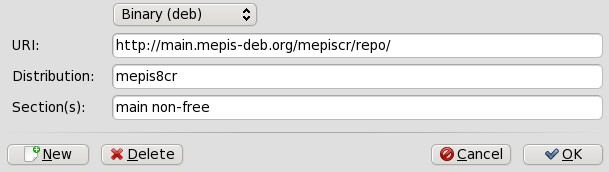

User's Manual
Use Ctrl + F to search this Manual
Welcome!
Welcome to the world of Linux and MEPIS. If you have just booted the MEPIS Linux LiveCD, you have the opportunity to explore some of the features of a whole new computer operating system before you decide to install it! Exploration, evaluation, comparison. . .decision. So far you have taken the first solid step toward a better computing experience, so enjoy exploring MEPIS Linux 11!
MEPIS Linux 11 is based on Debian 6.0, codename "Squeeze".
A Note from The Architect of MEPIS
Relax—you're among friends. The MEPIS community includes tens of thousands of people like you who want to work and play on their computer free of blank blue screens, viruses, and spyware—while paying only a fair and modest price for all of the software they need.
MEPIS Linux is intended to be easy to try, easy to install, and easy to use. This guide is meant to be your roadmap for getting started with MEPIS Linux. We show you how to boot from CD, how to test drive MEPIS Linux, how to install on your hard drive, and how to start using MEPIS Linux as a complete replacement for your current operating system.
You'll find lots of helpful people at the MEPIS forum sites listed in Section 11, along with many other resources to get you started.
If you are a developer, you have the freedom to remaster a customized version of MEPIS Linux. We have people who have done that. In fact one of them did such a nice job of converting MEPIS Linux into a distro to use for old computers with low processing power and RAM by today's standards, that we invited him to become a member of the official MEPIS family, with his antiX Operating System.
But it doesn't matter who you are. From computer professional to first-time computer user, we have tried to make an operating system for you. . . for free. . .for whatever you need to accomplish.
Good luck and have fun!
— Warren
1.1: About MEPIS Linux
MEPIS Linux is a ready-to-use desktop operating system for PC computers that have Intel or AMD processors with either 32 or 64 bit architecture and for Apple computers with Intel processors. It is designed to work side-by-side with Microsoft's Windows or Apple's Mac OS X in a dual-boot configuration, or to replace your old Operating System entirely.
MEPIS Linux 11 comes in two different versions:
- MEPIS Linux 32 for 32-bit architecture
- MEPIS Linux 64 for 64-bit architecture
The 32-bit version will work for 64-bit architecture and may actually be better for many users, because they will have more multimedia codes. The only advantage of 64-bit is that it is faster for a few applications and possibly more on the cutting edge of technology.
For system requirements and recommendations, please consult Section 3.1.
MEPIS LLC and MEPIS Linux were founded by industry veteran Warren Woodford in November 2002 to create a user-friendly Linux version that “just works” based on Debian Linux. The first release was in May 2003. In July 2006, MEPIS transitioned with the release of 6.0 from using Debian packages to using packages and repositories from Ubuntu 6.06LTS (“Dapper Drake”).
A major upgrade (6.5) came out in April 2007, introducing for the first time 64-bit and Mactel support. A few months later, anticapitalista, a member of the European MEPIS community, released his well-received antiX based on a MEPIS Linux core and optimized for old and low-spec computers.
In Version 7.0, released in December, 2007, MEPIS Linux switched its base to a combination of MEPIS packaged binaries, based on Debian and Ubuntu source code, combined with a Debian Stable OS core and extra packages from Debian package pools. As the developer explains: “By using the latest Debian and Ubuntu source code for building user applications, we can provide the best latest versions of the applications users want the most. And by building on top of a Debian Stable core, we can provide a release that has the stability and long life that users want.” The emergence of a Community Packaging Team has allowed users to remain current with application releases while retaining the signature stability.
MEPIS development continues to track Debian development. MEPIS 8.0 was released in February 2009 as "Lenny" became the new Debian Stable 5.0, in March 2010 MEPIS 8.5 was released integrating the new KDE 4.3 desktop environment. Now MEPIS 11 is released using the latest updates available from Debian Stable 6.0 "Squeeze".
If you use MEPIS Linux, please consider paying for your copy by contributing or shopping at the store.
MEPIS Store: http://www.mepis.org/store.
Debian Squeeze: http://www.debian.org/releases/squeeze/
1.2: This User's Manual
This User's Manual is the product of large group of volunteers from the MEPIS user community. As such, it will inevitably contain errors and omissions, although we have worked hard to minimize them. Please send us suggestions for improvement using one of the methods listed in the left panel.
The Manual is designed to walk new users through the steps of obtaining a copy of MEPIS Linux 11, installing it, configuring it to work with one's own hardware, and putting it to daily use. Updates will be available on a regular basis through the standard package procedures.
If you are looking for something in particular,you can use the menu in the left panel, the Table of Contents, or the browser's search function (Ctrl+F)
Some terms that might be unfamiliar to some readers appear in green. Hover your mouse over one of these words for a brief definition, or click on it to go to the Glossary entry for that term. Your browser's back button will return you to your original spot. Or right-click on the special term link and choose Open in new Window or Open in new Tab.
All content is © 2010 by MEPIS LLC and released under Creative Commons Attribution 2.5. Citation should read:
MEPIS Community Documentation Project:
2010. MEPIS 11 User's Manual [Version 1.0]
For help outside the scope of this Manual, see Section 11.
Creative Commons license: http://creativecommons.org/licenses/by/2.5/
2.1: Getting MEPIS
Introduction
The MEPIS Linux LiveCD (or LiveDVD) or Live USB boots your computer without accessing the hard disk. It copies a virtual filesystem into RAM that acts as the center of a temporary operating system for the computer. When you end your LiveCD session, everything about your computer is back to the way it was, unchanged.
This provides a number of benefits:
- It enables you to run MEPIS Linux on your computer without installing it.
- It allows you to determine whether MEPIS Linux is compatible with your hardware.
- It helps you to get a feel for how MEPIS Linux works and to explore some of its features.
- You can decide whether MEPIS Linux is what you want without permanently affecting your current system.
Running from the LiveCD also has some disadvantages:
- Because the entire system is operating from a combination of RAM and the CD, MEPIS Linux will run more slowly in a LiveCD session than if it were installed on the hard drive.
- Some unusual hardware that requires specialized drivers or custom configuration may not work in a LiveCD session where permanent files can't be installed.
- Installing and removing software is not possible because MEPIS Linux runs from a read-only medium. This can be changed to some extent by running the LiveCD with the "aufs" option which allows for temporary installation of programs.
How to get a MEPIS LiveCD
If you don't have a copy of MEPIS Linux 11 on a CD or DVD already, here are the ways to obtain a copy.
Buy From MEPIS
The advantages of buying your LiveCD from MEPIS include ease of setup and—with a subscription—early access to upgrades and new versions.
- Get the latest version of MEPIS Linux on CD or DVD, shipped to you.
- Pay a subscription fee at the MEPIS Store and download directly from our FTP server.
MEPIS Store: http://www.mepis.org/store
Free Download
You can download any testing or final release versions of MEPIS Linux for free from one of the public mirror sites listed on the page linked below. Sometimes the mirrors are a bit behind the MEPIS Subscription download site, and some mirrors get out-of-date from time to time. If you can't find a particular version at one site, it may be available at one of the other sites. Downloading the current MEPIS ISO via bit-torrent is also an option.
The LiveCD you download is actually an ISO: a disk image file in the ISO 9660 file system format. Before trying to turn it into a Mepis LiveCD, please consult Section 2.2.
If you use a free version of MEPIS Linux, please consider making a donation to support further development of MEPIS Linux.
Download MEPIS: http://www.mepis.org/mirrors
MEPIS torrents: http://www.mepiscommunity.org/en/node/54
Links and Guides for Section 2.1
- Wikipedia: ISO 9660: http://en.wikipedia.org/wiki/ISO_9660
2.2: Obtaining & verifying the ISO
Introduction
This page provides guidance if you intend to download an ISO and burn your own CD or DVD instead of buying it from the Mepis Store.
Downloading MEPIS Linux
Here are a few considerations to keep in mind:
- The first day or two after new ISO is released, a particular mirror (a web site that is an exact copy of another site) may not have it. Check other mirrors until you find the version you are looking for, then click the filename to download it. These files are usually very large, so plan to wait for some time (depending on your machine, connection and web traffic).
- Sometimes an ISO may be incomplete. This is caused by the mirror attempting to grab the ISO before it has completely uploaded to their source site. If this happens, the ISO may be unusually small or it may give cloop errors when a CD is booted.
- If different mirrors offer ISOs of different sizes, the larger ISO is probably correct. If a mirror site has a bad ISO file, it will probably be replaced during the next automatic update at that site, usually done once per day.
- Make sure to download the md5sum file (see below) from the same directory as the ISO file. It will have the same filename but the extension will be .md5sum. Make certain that you put the MD5sum file in the same directory as the ISO file.
- If the md5sum does not match, you could try one of the following options:
- Copy the ISO with a bad checksum to a download folder used by a BitTorrent program (see Section 8.1), then restart the download using a BitTorrent client program. Most BitTorrent clients will find the file already on your hard disk and patch it by downloading only the missing or damaged portions.
- Try a different mirror site.
- Download the ISO again.
Downloading MEPIS Linux via BitTorrent
BitTorrent file sharing (see also Section 8.1) provides an internet protocol for efficient mass transfer of data. It decentralizes the transfer in such a way as to utilize good bandwidth connections and to minimize strain on low-bandwith connections. An added benefit is that most, if not all, BitTorrent clients perform error checking during the download process, so there is no need to do a separate md5sum check after your download is complete. It has already been done!
The MEPIS Torrent Team also maintains a seeded bit-torrent swarm of the latest MEPIS Linux ISO, registered at LinuxTracker.org within 24 hours of its official release. Bit-torrent downloads may be somewhat slow following a major release. See MEPIS Torrent Team Project in links section
If you are not familiar with BitTorrents, see the Links and Guides section for sources of more information.
If you are downloading a MEPIS Linux ISO via BitTorrent, you can skip the next section about verifying the md5sum and go directly to 2.3: Burning the CD
Verifying the md5sum
After you have downloaded an ISO, the next step is to check its md5sum against the official one. The md5sum is the result of a complex calculation on the contents of a file: the outcome is a unique string. It will be identical to the official md5sum if your copy is authentic. The following steps will let you verify the integrity of the downloaded ISO on any OS platform:
md5sum: Windows
Windows users should download a tool called md5summer (link below):
- Download the self-extracting .exe file. Double-click it to put 2 files in the current directory: md5summer.exe and md5summer.md5
- Run md5summer.exe, respond “yes” to associate extension .md5 with md5summer program.
- Now you can either double-click on the .md5 file and the program will check the md5 sum automatically, or from inside the md5summer program you can select the location of the .ISO and .md5 files, and then click “verify sums” and select the .md5 file you want to check.
md5sum: Linux
Method 1. The easiest way to check an ISO's integrity in Linux is to use K3b, the CD/DVD burner that is installed with MEPIS Linux 8.0. When you first load an ISO file into K3b, it will automatically calculate and display the md5sum. You can be confident the download is valid if the final five characters match those in the md5sum file you downloaded with the ISO.
Method 2. If not using K3b, open up a console/terminal and type:
cd /directoryname
where directoryname indicates the location of the ISO and md5sum files (usually /dev/cdrom). Then type:
md5sum filename.iso
Be sure to replace filename with the actual filename (type in the first couple of letters then hit Tab and it will be filled in automatically).
Compare the number obtained by this calculation with the md5sum file downloaded from official site. If they are identical, your copy is identical to the official release.
md5sum: Mac
Mac users need to open up a console/terminal and change into the directory with the ISO and md5sum files. Then issue this command:
md5 -c filename.md5sum
Be sure to replace filename with the actual filename (type in the first couple of letters then hit Tab and it will be filled in automatically).
Links and Guides for Section 2.2
- Wikipedia: Bit-Torrent: http://en.wikipedia.org/wiki/Bit_torrent
- MEPIS Wiki: Using KTorrent: http://www.mepis.org/docs/en/index.php/KTorrent
- MEPIScommunity.org: Torrent Team Project: http://www.mepiscommunity.org/en/node/54
- Mepis page at Linuxtracker: http://linuxtracker.org/index.php?page=torrents&search=&category=33
- md5summer download page: http://sourceforge.net/projects/md5summer/
- Wikipedia: md5sum: http://en.wikipedia.org/wiki/Md5sum
2.3: Creating a bootable medium
Introduction
Once you have successfully downloaded an ISO and verified its integrity, you are ready to create a bootable medium. For most users, this will be a LiveCD or DVD, but netbook owners and others may need or want a Live USB.
Burning a LiveCD
General tips
- Most important: do not burn the ISO onto a blank CD as if it were a data file! An ISO is a formatted image of an entire CD. You need to choose Burn disk image or Burn ISO in the menu of your CD burning program. If you just drag and drop it into a file list and burn it as a regular file, you will not get a bootable LiveCD.
- Use the correct medium:
- A good quality blank CD that specifies 700MB or 80 minutes.
- A good quality DVD-5 with a 4.6 GB capacity.
- The developer of MEPIS Linux recommends blank CDs and DVDs manufactured by Taiyo Yuden as excellent quality at a reasonable price.
Burning the ISO
Linux
The following method describes burning with K3b, the default application in MEPIS Linux, but you can use any burner or the command line just as well.
- Right-click the ISO and select Open with >K3b
- Wait until the md5sum is calculated, then compare it with the one that you downloaded with the ISO: the md5sum should match, otherwise it means you have a corrupted file.
- Check verify written data. After the CD/DVD is written, K3b will read it and compare the result with the MD5 sum of the ISO.
Windows
If you already have a CD burning program installed on your computer such as Nero and EasyCD Creator (Roxio), go directly to Step 2.
- Download and install a CD or DVD Burner such as Cheetah (follow link below).
- Put a blank medium in your drive. Start the burner, and click Start and choose Burn ISO File (other wording may be used). In Nero and Roxio there is a similar command to Burn a Disk Image or ISO.
NOTE: the program names here are used as examples only, and no endorsement or guarantee is intended.
Mac
You probably already have Toast (Roxio) or a similar CD/DVD burning program installed. Just follow Step 2 above.
Verify the integrity
It is a good idea to verify the integrity of the burn, just as you did of the ISO (in Section 2:2). If you didn't burn your new MEPIS Linux LiveCD/DVD with a program that can verify the data after the burn, you can check its integrity another way.
Linux
In terminal type:
md5sum /dev/cdrom
Depending on your system you might need to replace cdrom with cdrom1 or another device name like hdc or scd0 (/dev/cdrom is the first CD drive, /dev/cdrom1 is the second one, etc.). Check /etc/fstab to see the device names on your system.
Wait for the MD5 sum to be calculated, and compare it with the sum obtained from the download site: they should be the same.
Windows
- Get the free version of the Windows application IsoBuster from the link below.
- Insert CD in drive.
- Run IsoBuster as Administrator.
- In registration dialog, select “Free funct. only”.
- In left pane, right-click on CD (top line) to get context menu, and select: MD5 Checksum file > Create MD5 Checksum > For image file with 2048 bytes/block.
- Compare the MD5 in the .tao line of the output with that of the downloaded ISO.
NOTE: the Windows program cited here is used as an example only, no endorsement or guarantee is intended.
Mac
When you select to verify the data in Toast or another burner, a byte-for-byte comparison with the ISO file will be carried out to check the CD's integrity.
Troubleshooting
If you verified the md5sum of the ISO before you burned, but the CD-ROM you burned is no good:
- Try burning again at a slower speed.
- Try another blank disk.
Creating a Live USB
Netbooks typically lack a CD drive, so a Live USB is required for temporary use and installation. Other users may also want a Live USB. Once you have obtained the ISO, whether by purchase or download, you can easily create a bootable USB that works on most systems.
If you have an existing installtion of MEPIS, or can boot the LiveCD on a different computer, then a MEPIS application is available to you that makes the process easy.
- Plug in your USB device. It needs to remain unmounted, so ignore the Device Notifier screen that pops up.
- Click Start Menu > Settings > MEPIS System Assistant, then click on the MEPIS USB Key tab.
- Make the appropriate selections for the USB key, key type and ISO source.
- Click Apply.
If you need or want to create the Live USB from the netbook itself, you should use an alternative method:
- Download and install the Unetbootin Windows package from the Unetbootin home page listed below.
- Plug in the USB stick you are going to use and reformat it to FAT32. On Windows, use the My Computer screen, right-click your USB device in the menu and select Format, then FAT 32.
- Start Unetbootin, and use the GUI to locate your MEPIS ISO file (or to download it) and the USB device (usually already identified for you)
- Create the files necessary (it will take some time) on the USB device
Whichever method you used to create the Live USB, you will probably need to take a few steps to get your netbook to boot correctly using the USB.
- To boot the netbook with the USB Drive, many computers have special keys you can press during booting which allow you to choose to boot the USB drive. Typical Boot Device Menu keys are Esc, F8, F9, F10 or F12.
- Alternatively, You may have to go into the BIOS to change the boot device order:
- Boot the netbook, and hit the required key (e.g., F2, F10 or Esc) at the beginning to get into the BIOS
- Click on (or arrow over to) the Boot tab
- Identify and highlight your USB device (usually, "USB HDD"), then move it to the top of the list. Save and exit
- If unsure or uncomfortable about changing the BIOS, ask for assistance in the Forums.
- When you see the GRUB screen, select the Default entry
- For screen resolution, first try Auto Resolution
- If that is not right, click F3 and try setting the resolution yourself to what is approppriate for your netbook; the Acer Aspire One, for instance, requires 1024×600.
- Finally, you can try changing the last entry on the line at the bottom of the screen to read vga=8
Links and Guides for Section 2.3
- Wikipedia: LiveCD: http://en.wikipedia.org/wiki/Live_CD
- Wikipedia: Disk Images [ISO]: http://en.wikipedia.org/wiki/CD_image
- Wikipedia: md5sum: http://en.wikipedia.org/wiki/Md5sum
- MEPIS Wiki: Installation topics: http://www.mepis.org/docs/en/index.php/Category:Installation
- Cheetah home page: http://www.cheetahburner.com/
- ISObuster home page: http://ISObuster.com/
- Unetbootin homepage: http://unetbootin.sourceforge.net/
- MEPIS Wiki: Netbook: http://www.mepis.org/docs/en/index.php/Netbook
3: Pre-Installation
3.0: Introduction
Before launching into an installation of MEPIS Linux, there are a few steps you will want to take. This includes checking your hardware for compatibility issues, preparing your hard drive, and backing up any important files from your current operating system.
Pre-installation steps:
Links and Guides for Section 3.0
- Trying MEPIS Linux: http://www.mepis.org/docs/en/index.php/Trying_MEPIS
3.1: System requirements
Introduction
The following are minimum and recommended hardware requirements for installing MEPIS Linux. Keep in mind the following:
- Minimum specifications are only what is required for install. You will get poor performance from a system with minimum specifications.
- Hard drive space directly correlates to the number of files you can store and additional programs you can install.
- More RAM will allow you to run more programs at once, and will make MEPIS Linux more responsive.
- You can expect MEPIS Linux to perform approximately as fast as a clean install of Windows XP® on the same hardware. Many users report a substantial increase in speed over Win-XP, but hardware varies.
Minimum specifications
Note that minimum specifications usually allow installation and booting, but severely restrict performance.
MEPIS Linux-32
- an i686-compatible processor at 300 MHz
- 256 MB RAM
- 3 GB free hard drive space
- an X.org supported video processor
MEPIS Linux-64
- AMD Athlon64, Athlon64-FX, Athlon64-X2, Opteron, Sempron64, Turion64, or Intel Core 2 Duo desktop, Core 2 Duo mobile, Pentium4 Prescott with EM64T, PentiumD with EM64T
- 256 MB RAM
- 4 GB free hard drive space
- an X.org supported video processor
antiX MEPIS Linux
- Pentium II or equivalent AMD7/Athlon
- 96 MB RAM, will work with 64MB plus swap
- 2.0 GB free hard drive space
- Note: antiX is not included on the MEPIS CD.
Recommended specifications
- an i686-compatible processor at 700 MHz
- 512 MB RAM or more
- 8 GB free hard drive space
- a CD/DVD reader
3.2: Coming from Windows®
Introduction
If you are going to install MEPIS Linux as a replacement for Microsoft Windows®, it is a good idea to consolidate and back up your files and other data currently stored in Windows. Even if you are planning to dual-boot, you should make a backup of this data in case of unforeseen problems during the install.
Backing up files
Locate all of your files, such as office documents, pictures, video, or music:
- Typically, most of these are located in “My Documents” folder (C:\Documents and Settings\Username\My Documents in Windows 2000, XP, and Vista, or C:\My Documents in Windows 95, 98, and ME).
- Search from the Windows start menu for various types of files to make sure you have found and saved them all.
- Once you have located all such files, burn them to a CD or DVD, or copy them to an external device such as a USB hard drive or second computer.
Backing up email, calendar, and contact data
Depending on the email or calendar program you use, your email and calendar data may not be saved in an obvious location or under an obvious file name. Most email or scheduling applications (such as Microsoft Outlook®) are able to export this data in one or more file formats. Consult your application's help documentation to find out how to export the data.
- Email data: The safest format for email is plain text, and most mail programs support this feature. If you are using Outlook Express, your mail is stored in either a .dbx or .mbx file, either of which can be imported into Thunderbird on MEPIS Linux. Use the Windows search feature to locate this file and copy it to your backup. Outlook mail should be imported first into Outlook Express before being exported for use in MEPIS Linux.
- Calendar data: MEPIS Linux's calendar software supports the iCalendar and vCalendar standards, so you should export your calendar data to this format if you wish to use it in MEPIS Linux.
- Contact data: MEPIS Linux's addressbook software is capable of importing many addressbook formats, but the most universal are CSV (comma separated values) or vCard.
Using Windows CD of XP SP2 or higher to create a backup
If you have a copy of the original WinXP CD (SP2 only!), insert it into your drive when you're in Windows and when the autorunner starts choose Perform additional tasks >Transfer Files and Settings, then Old computer to backup most of your files and preferences for Windows-based programs to a file on your hard disk, which can then be burned to a CD or DVD for restoration later if things go wrong.
NOTES: 1) The resulting file can grow to huge proportions. There is no option to split the file if it grows too big, so choose the option to transfer only the settings and copy the remaining files you want to keep separately. 2) Do not rely on this method to backup email and browser data for other programs than Microsoft's own.
Accounts and passwords
Although not usually stored in readable files that can be backed up, it's important to remember to make note of various account information you may have saved in your computer. Your automatic log-in data for websites or services like your ISP will have to be entered in all over again, so make sure to store off disk the information you need to access these services again. Examples include:
- ISP login information You will need at least your username and password for your internet service provider, and the phone number to connect if you are on dial-up or ISDN. Other details might include a dial out number, dialing type (pulse or tone), and authentication type (for dialup); IP address and subnet mask, DNS server, gateway IP address, DHCP server, VPI/VCI, MTU, Encapsulation type, or DHCP settings (for various forms of broadband). If you are not sure what you need, consult your ISP.
- Wireless networking You will need your passkey or passphrase, and network name.
- Web passwords You will need your passwords to various web forums, online stores, or other secured sites.
- Email account details You will need your username and password, and the addresses or URLs of the mail servers. You may also need the authentication type. This information should be retrievable from the Account settings dialog of your email client.
- Instant messaging Your username and password for your IM account(s), your “buddy list,” and depending on the service, the server connection information may be necessary.
- Other If you have a VPN connection (such as to your office), a proxy server, or other configured network service, make sure you find out what information is necessary to reconfigure it in the event that you need to.
Browser favorites
Web browser favorites (a.k.a. bookmarks) are often overlooked during a backup, and they are not usually stored in a conspicuous place. Most browsers contain a utility to export your bookmarks to a file, which can then be imported into the web browser of your choice in MEPIS Linux. Here are some export methods for common web browsers:
- Internet Explorer Click File > import and export, select export favorites, select the favorites folder (to export all favorites), select export to file or address and enter a filename for the favorites.
- Firefox 3 Click Bookmarks > Organize Bookmarks, highlight the bookmark folder to backup, click Import and Backup - Export HTML..., enter a filename for the bookmarks.
- Opera Click File > import and export, choose export Opera bookmarks (if you plan to import them into Opera) or export bookmarks as HTML (if you plan to import them into another browser), select the location for the favorites file.
Software licenses
Many proprietary programs for Windows are not installable without a license key or CD key. Unless you are set on doing away with Windows permanently, make sure you have a license key for any program that requires it. If you do decide to reinstall Windows (or if dual-boot setup goes awry), you will be unable to reinstall these programs without the key.
If you cannot find the paper license that came with your product, you may be able to locate it in the Windows registry, or using keyfinder software (example link below).
Links and Guides for Section 3.2
- Example keyfinder software: http://www.magicaljellybean.com/
- Example software cleanup http://www.stevengould.org/software/cleanup/
- Windows to MEPIS: http://www.mepis.org/docs/en/index.php/Windows_to_MEPIS
- Windows data migration: http://www.mepis.org/docs/en/index.php/Windows_to_MEPIS_migration
3.3: First look
Booting the LiveCD
Insert the disk into your CD or DVD drive (or the Live USB into a port) and restart your computer. You may need to set your system to boot from the medium first, see Troubleshooting below for details.
Once you have booted to the live medium, you will be presented with a menu offering various choices; these are handled by a bootloader named GRUB that allows you to have several operating systems on your computer. The default boot choice should work for most computers.
Make sure to note the function keys at the bottom of the screen:
- F1 — Help. Provides important information and options:
- MEPIS Linux Information — origin, use and restriction of software.
- Using the Help System — navigation and function.
- Language and Keyboard Layout Selection — F2, see below.
- Choosing a Screen Resolution — F3, see below.
- Boot Options — a list and explanation of the boot options available for specific situations.
- F2 — allows you to select the language/keyboard you would like to install with the OS.
- F3 — enables you to select your particular screen resolution.
A particularly useful boot option is R/W filesystem, which allows software to be installed temporarily for hardware testing purposes. Once booted into the desktop, you will be able to add software. Note that a minimum of one gigabyte of RAM is recommended for this option.
When GRUB hands off the booting process to the Linux kernel, you will see a MEPIS graphical screen, called “Splashy”, with an expanding horizontal bar that indicates booting progress. If you hit the Ctrl-Alt-F1 keys together Splashy will be disabled, and you can view a console screen and read the booting messages that echo on the screen. (This can be made permanent after installation.) Sometimes this can be helpful in troubleshooting boot problems.
If all has gone well, you should be looking at a graphical login screen asking for a username and password. Type in demo for both and hit Enter to log in to MEPIS Linux.
The KDE 4 Desktop
The KDE 4.3 desktop which appears for the first time in MEPIS 8.5 is very different from the KDE 3.5 one with which MEPIS users are familiar. This section is designed to acquaint you with its basic features, liberally borrowing material from KDE.org documentation and other online resources. For more info and customization options, follow the Wiki link at the end of this section.
Plasma
Plasma provides the desktop interface for KDE 4, including the application launcher (start menu), the desktop and the desktop panel. Plasma also provides many standardized services such as artwork, presentation and script management.
Plasma uses a system of applets (any small application that performs one specific task, often within a larger application) that are collectively called plasmoids, but range from informative widgets (see below) to mini-applications like calculators and dictionaries. An applet may also contain another applet (known then as a containment). An important feature of Plasma is that there is no longer a distinction between panels (like the taskbar), desktop icons, and widgets; they are all created and treated the same way.
What is commonly referred to as the “cashew” is the Plasma logo you can find on the default desktop, on the upper right corner, and on the right-hand side of the panel. By right-clicking to unlock widgets and clicking on a cashew, you can access configuration options and features; you can also just right click on the desktop.
Widgets
A widget is a basic visual building block of the Plasma desktop (the GUI) which, combined in an application, holds all the data processed by the application as well as the available interactions with this data. Other common names are applet or gadget. Superkaramba Themes, Apple's Dashboard, Google Gadgets, Yahoo Widgets, Vista Sidebar Widgets, Opera Widgets are all examples of other widget systems, some of which Plasma also supports.
A certain number of widgets are supplied by default, and others are downloadable via the Add Widgets dialogue box. To add a widget to the desktop or panel, first unlock the widgets if they are locked, then simply right-click anywhere, select Add Widgets..., and choose the widget from the list. Particularly useful widgets include:
- Folder View: displays the contents of any folder
- Quicklaunch: allows up to 6 applications to be available with a single click, nice on the desktop for the most used apps
- Systen Monitor: various monitors: hard disk, network usage, temperature, etc.
When you are done configuring your widgets (including the panel), don't forget to lock them by right-clicking on the desktop (or the panel, under Panel Options) and selecting that command. This will prevent your widgets from possibly moving around or disappearing.
Additional widget source files can be obtained from KDE-look.org under plasmoids. Those that are not directly downloadable (as binaries from the "Add Widget" dialog) can be downloaded as source files that will need to be compiled (see Section 7.3). Compiling instructions are included in the compressed file that contains the source code.
Panel
By default, the panel ("Kicker" in KDE3.5) appears along the bottom of the screen, and takes up much of the width of the screen. It is something of a one-stop shop for almost anything that you might want to access quickly. MEPIS comes with a default panel described below, but the panel is also capable of running any docked widgets and extensions, such as child panels.
Icon key to default panel:
- Left side (icon tray), from left to right:
- Start (Start Menu) -- gives you an easy method of running installed applications
- Device Manager -- notifies you of all plugged-in devices and gives options for handling
- Pager -- shows multiple desktops you can use if you wish
- File Manager (Dolphin) -- your primary means of navigating around the file system
- System Settings -- where most configuration and customization takes place
- Default Browser (Firefox) -- top-rated tool for navigating the web
- Email (KMail) -- excellent application for managing email
- Package Manager (Synaptic) -- use this to upgrade the system and add new applications
- Middle (here: empty) is the taskbar, used to keep track of running applications.
- Right side (system tray), from left to right (can be expanded with arrow to show further icons):
- Clipboard (Klipper) -- lets you manage cut and copied material
- Sound mixer (KMix) -- here you make sound adjustments
- Network Manager -- center for dealing with wired and wireless network access
- Notifications and Jobs -- this reports system actions for you to monitor
- Date and Time -- obvious, but you also can click this for a calendar
There are other options off the context menu when you left-click the panel's cashew on the right end and select Panel Settings:
- The arrows on the right will adjust the maximum and minimum sizes of the panel. The left arrow indicates the starting position.
- Screen Edge allows you to choose the location by dragging.
- Height determines the height of the panel by clicking / dragging. The result is visible in the release of the click.
- More Settings gives you a sub-menu of more options such as hiding, alignment, etc.
Menus
You have the option of 3 menus in KDE 4:
- Classic menu (default)
- Kickoff: new style menu
- Lancelot, an automatic menu
The first two are installed by default, and are toggled by unlocking widgets, then right-clicking the menu icon and selecting the alternative. Lancelot must be installed as a widget; once it is installed, the classic Menu can be restored by installing the widget "Application Launcher."
System Settings
The KDE control center is called “System Settings,” and is the place to go to change any settings that affect the whole KDE environment. You can open it from the crossed tools icon in the panel, or by clicking Start Menu > Settings > System Settings.
The System Settings screen is divided into two tabs, General and Advanced. Beginning KDE 4 users should explore the General tab, which covers these areas:
- Look & Feel (Appearance, Desktop, etc.)
- Personal (About Me, Regional & Language, etc.)
- Network & Connectivity (Network Settings, Sharing, etc.)
- Computer Administration (Date & Time, Display, etc.)
Krunner
Krunner is tool for searching and launching files and applications. It can also be used for more generic operations such as calculator or unit converter. To start it: 1) use the menus (Classic Menu >Run Command, at the top of Kickoff and Lancelot) 2) Press Alt+F2, 3) right-click the desktop >Run Command. The KDE 4 version performs many functions (click the question mark for help), for instance:
- Application launcher
Begin to type the name of the application you want to run. Krunner will grow a short list of applications based on the letters you type. You can finish typing the name, or just click the right one from the new short list. - Calculator
You can use Krunner as an efficient calculator. Just type the expression you want to evaluate such as32*12= or =32*12
(You can put the = sign before or after the expression). It is possible to evaluate more sophisticated expressions such as:=sqrt(4) + 32 * sin(60)
- Converter
You can quickly convert measurements in Krunner by just typing in the value and unit. For instance, if you type:3m in ft
you will see the result: 9.84251968503937. - Running BASH commands
Krunner doesn't only recognize applications, but also all binaries throughout your system. You can use this ability to run bash commands such as cp, mv, etc. To do so, start Krunner and type the commands just as you would in Konsole, for example:cp ~/Documents/myFile ~/myFile
- Internet commands
Enter any URL and the page will pop up in your default browser. - Task-oriented searches
Start Krunner and click on the wrench symbol >User Interface tab, then select Task Orientated >OK. This changes Krunner into QuickSand, an alternative front end. Just start typing to initiate a search. QuickSand represents matches to a query as a scrolling line of icons. A completion box of matches is also shown when the matches first arrive. The list can be scrolled using the up and down arrow keys when the completion box is shown or the left and right arrow keys.
File management
Dolphin is the default file manager in KDE 4. It includes several unique enhancements for the user that aren't available in Konqueror. By focusing exclusively on file management, Dolphin avoids many of the pitfalls inherent in the Konqueror approach familiar from KDE 3.5, leading to such items as a more flexible sidebar system and a less-invasive notification system that doesn't interrupt user work flow. Konqueror can still be used as file manager (as can other alternatives, for that matter) and in fact it shares the fileview functionality with Dolphin.
On the left-hand side, Dolphin's Panel provides quick access to your most often used locations, called “Places.” Just drag a folder to the sidebar and be able to quickly access it, from not only Dolphin itself, but also from the KickOff Places tab and the Lancelot Computer tab. Right-click an empty space to see other options.
Some hints and tips to get you started:
- F4 opens up a terminal at the bottom in the current folder, while F3 gives you a split view that is handy for moving or copying files.
- For directories containing lots of images, press the preview button in Dolphin's toolbar and get previews of the files located in the current directory.
- To quickly move between directories, click on the breadcrumbs located right above the main view screen (e.g., Home > Mail > Inbox). Clicking on the arrow next to one of the breadcrumbs lets you move swiftly to different subdirectories.
- For a side-by-side view that makes copying files between directories easy, hit the “Split View” button.
- Dolphin remembers settings for a specific directory, but you can also set global defaults by clicking Settings" >Configure Dolphin.
For more tips and hints, as well as customization ideas, follow the link below to the Wiki.
Activities
Desktop Activities is a desktop usability concept that allows you to have multiple settings for your desktop or desktops, something not possible for the virtual desktops accessible through the Pager. Activities allow you to specialize each desktop (AKA "activity") to whatever task you need to accomplish, and to distinguish it by selecting a different set of plasmoids/wallpapers/information for each."
To create a new activity, click on the Desktop upper-corner cashew >Unlock Widgets, then click on it again >Zoom Out. This causes the desktop to shrink. Now click on the green plus sign "Add Activity" and you should see a new blank desktop besides the old one. This can be repeated multiple times. Click on the + (plus sign) for the desktop you wish to use, then set up your Desktop by clicking on the wrench icon (Desktop Settings) below it; when you have finished, do not forget to lock widgets. If you want to remove an activity later, unlock the widgets and zoom out from your current desktop view, then select the red cross from the toolbar underneath to remove the activity.
To switch quickly between the activities: create a new panel and locate it where you want it, then add the widget "Activity Bar" to the panel. If you like, you can resize the panel to match the bar and set it to auto-hide.
Applications
There are a few programs you may want to investigate while booted to the LiveCD:
- Firefox is the default web browser in MEPIS Linux.
- Kopete is an instant messenger client that supports several popular IM services, such as Yahoo, AIM, and MSN.
- Kmail is an email program that belongs to KDE's personal information manager applications. You can install Kontact as a single application for all PIM components: calendar, email, addressbook, sticky notes, RSS aggregation, etc..
- MEPIS Linux includes a few games, such as solitaire. You can even play them while you install!
- KsCD is a music player. You can use it to play music files or CDs.
- The video player KMplayer will handle all sorts of videos.
For more information on available applications, see Section 8.
Testing hardware compatibility
One of the best things about the LiveCD is that you can use it to test your hardware's compatibility with MEPIS Linux without installing it to your hard drive. Keep in mind that in general everything runs much more slowly from the LiveCD.
While booted to the LiveCD, make sure you test:
- Sound
- Network connection (particularly wireless)
- Video (including 3D acceleration)
- Peripherals such as printer, camera, MP3 player, or scanner.
Some hardware may require the installation of drivers to work correctly; although this is usually done after a hard drive install, it is possible to use the boot option aufs which will allow you to temporarily install a driver (or other software) to your LiveCD session. For details, see the link under Links and Guides.
Troubleshooting
CD won't boot. If you have checked the integrity of your ISO, make sure your computer is set to boot to the CD drive. Newer computers often have a hotkey such as F8, F10, or F12 which will invoke a boot device menu when pressed during startup. For older machines, you may need to edit your system's boot device order in the CMOS (BIOS) settings. Please consult your system's operating manual for the correct procedure.
LiveCD stops during boot, or once booted performs exceptionally poorly. Try some of the Boot Options that can be found by clicking F1 on the opening screen (GRUB). Problems with hardware, for instance, can often be overcome by entering noacpi, noapic, and/or nolapic.
Does not boot to graphical login (kdm). First, check that you have a good download and burn, as described earlier. If that is OK, then try these steps:
- Boot using the Safeboot option on the opening menu (GRUB)
- Reboot, highlight the kernel you want to use (usually the most recent), and add at the bottom where the cursor is blinking
vga=normalandxdrvr=vesa - Try adding at the bottom
acpi=forceoracpi=off - If you continue to have problems, use the MEPIS X Windows Assistant (Section 5.3.4) to copy a working configuration to your computer.
Sound not working. Here are some steps to follow if you have no sound:
- Take a look in the mixer (KMix) settings and make sure that all the sliders are enabled. Then on the KMix menu bar go to Settings >Configure Kmix, and make certain the "restore volumes on login" is checked
- With some cards it is sometimes necessary to open a terminal, become root, and type (one line at a time):
alsaconf alsactl store
Note: 1) alsactl is part of alsa-utils, which is not installed by default; 2) in mid-2009 '''alsaconf''' was removed from alsa-utils and is no longer available through the Debian repos. It has been packaged by a Community Member and can be found by searching on MEPIS community forum - Try opening a terminal and becoming root, then typing:
dpkg-reconfigure alsa-base
- For ''snd-hda-intel'' systems try right-clicking the desktop >Run Command, and enter
kdesu kwrite /etc/modprobe.d/snd-hda-intel
Once that file opens, comment out the first line; if that doesn't work, try commenting out the second line instead if it is not already. Save, and then run alsaconf. - In the second line of that same file, try adding your specific machine model, for instance:
Options snd-hda-intel model=lenovo
or the name of your sound card, for instanceOptions snd-hda-intel model=Realtek ALC888
You can get your card model by entering in a terminal:cat /proc/asound/card0/codec#* | grep Codec
Links and Guides for Section 3.3
- Testing your hardware: http://www.mepis.org/docs/en/index.php/ Testing_your_hardware_for_problems
- Trying MEPIS Linux: http://www.mepis.org/docs/en/index.php/Trying_MEPIS
- MEPIS Wiki: aufs http://www.mepis.org/docs/en/index.php/Aufs
- Ccleaner home page: http://www.ccleaner.com/
- MEPIS Wiki: Boot options: http://www.mepis.org/docs/en/index.php/Boot_options
- Plasma introduction: http://userbase.kde.org/Plasma
- Wigets: http://kde-look.org/
- MEPIS Wiki: Dolphin: http://www.mepis.org/docs/en/index.php/Dolphin
- KDE4 tutorials: http://userbase.kde.org/Tutorials
- KDE 4 Desktop customization: http://www.mepis.org/docs/en/index.php/ KDE4_desktop#KDE_4_Desktop_customization
3.4: Partitioning the hard drive
Introduction
Before starting the install, you may wish to prepare the partitions on your hard drive to install MEPIS Linux. You can do this during installation, but it is recommended that you do it before starting the install. Note that some older hardware may require a restart after the partition tables are edited.
About partitioning
To prepare the hard drive for MEPIS Linux, it is recommended that you create three partitions: one for the root of the filesystem, one for the user home directories, and one for swap (virtual memory). You do not have to create a separate home, but it makes upgrades easier and protects against problems caused by users filling up the drive. If you choose to install to the entire disk without partitions, you can skip this next section.
How big should the partitions be?
- Root partition: The minimum size for the root partition is 2.5 GB, however, this size will not allow you to install many programs, and may cause difficulty doing upgrades. Depending on how many programs you wish to install, you may want to allot between 5 and 10 GB.
- Home partition: The home partition is where the documents and configuration data for all users is stored. Typically, you want to make this partition as large as possible, especially if you store a lot of pictures, music, or video data.
- Swap partition: The swap partition is used by the operating system to store the contents of RAM when programs ask for more RAM than the system has. As such, while swap space should be analogous to the amount of RAM in the system, it becomes less necessary the more RAM you have. A good rule of thumb is to make the swap space double the size of your RAM, but no more than 1 GB (1024 MB).
Hard drive names in MEPIS Linux
Before you begin editing partitions, it is critical that you understand how MEPIS Linux (and other Linux operating systems) refers to hard drives and hard drive partitions.
Unlike Windows, which assigns a “drive letter” to each of your hard drive partitions, MEPIS Linux assigns a short device name to each hard drive or storage device on a system. The device names always start with sd plus a single letter. For instance, the first drive on your system will be sda, the second sdb, etc. Within each drive every partition is referred to as a number appended to the device name.
Thus, for instance, “sda1” would be the first partition on the first hard drive, while “sdb3” would be the third partition on the second drive. It is important to understand the difference between referring to an entire device (such as sda) and a partition on the device (such as sda1).
Resizing an NTFS partition
Resizing an NTFS (Windows NT File System) partition with KDE Partition Manager is generally a painless and simple procedure. However there are some small risks, particularly if your hard drive is old or very full. You can mitigate these risks by taking the following steps on your Windows installation (consult your online Windows help (F1) if you are unsure how to perform any of these tasks):
- Back up all your data, if you haven't already!
- Run the disk cleanup wizard to delete unnecessary files. You may also want to run a third party cleanup tool (example link below). Make sure there is enough free space on the drive so that it will still have several gigabytes free after you resize it.
- Check the filesystem for errors using chkdsk.exe or scandisk.exe (depending on your version of Windows).
- Defragment your hard drive.
- If you are using Windows Vista or Windows 7: Use the “Disk Management” tool in Windows to resize the drive. Be warned: this tool does not respect standard hard disk partitioning conventions and it will often leave a small unusable portion of the disk at the end point of the shrunken partition that will show up in the standards-based partitioning tools like those provided with MEPIS Linux.
Resizing steps:
- From the LiveCD click Start Menu > System > KDE Partition Manager (Partition Editor).
- In KDE Partition Manager select the drive then select the partition. Note that you can only resize the partition where MEPIS Linux itself is installed by using the LiveCD.
- Right-click on the partition and select “Resize”. Choose the new size of the partition. The free space that will remain will be used for MEPIS Linux installation; make sure the “free space after” resizing is larger than the minimum required size for your version of MEPIS Linux (see minimum/recommended specifications). Click “OK”
- Right-click on the “free” partition and select “Create”.
- Select Partition Type: linux-swap. Enter the size you have chosen. Click “OK”.
- Right-click on the “free” partition and select “Create”.
- Unless you know what you are doing, select Ext3 and allot the amount of space you have chosen for root. Click “OK”.
- Repeat the last steps to create a partition for home.
- Click on the disk icon or go to File > Commit, respond “Yes” to the dialog. KDE Partition Manager will now repartition your drive; at the end you should get a message that the operation was completed successfully.
- Very Important! Note down the partition numbers/names as displayed in the new partition layout (e.g., sda3). You will need this information when choosing what partition number/name to install Mepis on, and to ensure that you do not overwrite your Windows partition!
Other partitioning considerations
- A single hard drive can have only 4 primary partitions. If you need to have more than 4 partitions on the disk, you need to create an extended partition, which you can then divide into 15 or fewer logical partitions.
- Many home computers are sold with a “diagnostic partition” and “restore partition”, in addition to the factory OS install. If you see multiple partitions showing up in KDE Partition Manager that you were not aware of, they are probably these.
- Some computers need to be rebooted after changing the partitions before they can access the new partitions. If you are having trouble installing or formatting your new partitions, restart the computer and try again.
- After resizing an NTFS partition and booting back to Windows, Windows will claim the drive is “dirty” and do a disk check. This is normal, and no data corruption should result from the resize. Allow the check to run its course, and your drive should be fine after that.
Links and Guides for Section 3.4
- Wikipedia: cfdisk: http://en.wikipedia.org/wiki/Cfdisk
- Linux Partitions: A Primer: http://www.tutorialized.com/tutorial/Linux-Partitions-A-Primer/4549
- Repartition your hard drive: http://www.mepis.org/docs/en/index.php/Repartition_your_hard_drive
- Community visual guide to resizing: http://www.mepisguides.com/Mepis-6/Install/ resize/Mepis-Install-Resize.html
4: Installation
4.0 Introduction
The motto of MEPIS Linux is “Easy to try, easy to install, easy to use.” And indeed, you will most likely discover that MEPIS Linux is the easiest and friendliest operating system installation you have ever used.
- Section 4.1: Detailed Steps for Installing MEPIS Linux on most computers
- Section 4.2: Installing in special situations
- Section 4.3: Troubleshooting installation problems; Links and Guides
- Section 4.4: Installing on Apple Intel computers
- Section 4.5: Uninstalling
4.1 Detailed steps
At this point, you should have done the following:
- Downloaded the MEPIS Linux ISO and burned it to a CD (see Section 2.2).
- Backed up your important data (see Section 3.2).
- Freed the necessary space on your hard drive, if needed (see Section 3.4).
- Created partitions for MEPIS Linux (see Section 3.4). Optionally, you can do this during the installation.
Now all you will need to do is run through the simple installation wizard and then restart your machine. Depending on your configuration, this will probably take less than 15 minutes, and could even be as little as 5 minutes!
These instructions should cover most installation scenarios; for more details or for unusual circumstances, see the left panel of the MEPIS installer as you go through, or check the links below.
Before you begin
In most cases the MEPIS Linux installation process should go fine. But sometimes things can go wrong (because of user error, for instance) and potentially wipe out the contents of your hard drive. If you are not prepared for that possibility, stop now and protect your data.
Launch the Installer
Boot to the LiveCD (see Section 3.3). Once at the desktop, click the MEPIS Install icon and enter root when prompted for a password.
License and Terms
Read through the license and terms of use. Check I agree to the Terms and click Next.
Page 1
Select the disk on which you wish to install MEPIS Linux. Refer to Section 3.4 if you are not sure what the Linux hard drive names mean. What you do next is determined by how you wish to set up your computer:
- Auto-install using entire disk
Select this option if you plan to use the entire hard drive for MEPIS Linux and you aren't particular about how the partitions are set up. If you select this, the installer will create a root, swap, and home partition for you using the entire drive. You can optionally specify an amount of space to leave unused, if you plan to create more partitions afterward. Make sure you understand that selecting this option will delete any existing partitions and data. Only choose this if you are not going to keep anything on the selected hard drive. - Custom install on existing partitions
If you are installing MEPIS Linux to a dual-boot with another operating system, or you wish to define the sizes of your partitions manually, you need to select this option. If you have not previously set up your partitions (see Section 3.4), you may click the button to run KDE Partition Manager at this point and create them. You must have your partitions created before moving on if you want to select this option.
Page 2
If you chose Auto-install using entire disk on the last page, you will not see this page. Skip to the next step.
- Page 2(a): If you chose custom install on existing partitions, you will now be prompted to select the partitions to install MEPIS Linux. Specify the root and swap partitions you have set up previously; if you have set up a separate partition for your home directory, specify it here, otherwise set home to “root”.
- Page 2(b): Check “Preserve data in /home” if you are doing an upgrade and already have data in an existing home partition; note that this option is not recommended. Select Check for badblocks if you want to do a scan for physical defects on the harddrive during formatting. This is recommended. Finally, you can optionally select the type of filesystem you want to use on the hard drive. If you don't know what to choose here, the default ext3 is recommended. In MEPIS Linux for the first time, ext4 is available (see Section 10.1).
Page 3
MEPIS Linux will now begin the install. You will be prompted to confirm the formatting of each partition (or the entire disk). Answer “YES” to each, then sit back, relax and read the informational messages while MEPIS Linux is copied to your hard drive.
Page 4
You now need to install GRUB, the bootloader (see Section 5.4). In most cases, you should go with the default setting (MBR). Select root if you are an expert, as you will need to manually edit the existing boot loader to boot to MEPIS Linux, either directly or by chainloading.
If you are installing to MBR and have more than one hard drive, make sure you have the correct drive selected for “system boot disk.” Usually this will be the first drive on the system (sda).
NOTE: The initrd option refers to an initial RAM drive, a virtual hard drive created in the system's memory that allows the kernel to load special driver modules required to read the boot device (hard drive). It is the default setting.
Page 5
On this page you can enable or disable a few common services:
- ppp is required for dialup internet connections, ADSL connections, and PPTP support. Note that if you have DSL but connect your computers through a router, you do not need PPP.
- bluez is for bluetooth device support. If you do not have bluetooth capabilities on your computer, you may safely disable bluez.
- cupsys is the Common Unix Printing System. You should install cupsys if you intend to print from this machine or use it as a print server.
Page 6
Here is where you specify your computer's name and domain. On most home networks the domain does not matter; however, if you are on a large corporate network, or your network has its own internal DNS server, you can set your domain name here.
You can also enable or disable the Samba server and configure the Samba workgroup (see Section 5.6.3). If you have other computers running Windows on your network and wish to share files or printers to them, enable this setting.
Page 7
If you are in the United States, the default locale settings should be fine for you. If you are outside the USA, select the keyboard and locale settings appropriate to your language and country.
You can also indicate here whether your hardware clock is set to GMT (a.k.a. UTC). If you are dual-booting with Microsoft Windows, you will want to leave this unselected. If you are installing on Apple hardware or if this computer will only run Linux, check this box.
Page 8
On this page you will set up a username and password for the default user, and a password for the root (administrative) user.
Usernames:
- Are case sensitive. For simplicity's sake, use all lower case.
- Should not contain spaces or symbols
- Can also be created using MEPIS User Assistant (see section 5.3.3) after installation, if you need more users.
Passwords:
- Are case-sensitive.
- Should be secure, especially the root password. They should be at least six characters, contain a mix of upper- and lower-case letters, numbers, and symbols, and should not be based on a dictionary word.
- Should not be forgotten. You'll need to have root password to do any administrative task on the computer, such as installing software or configuring hardware.
Finished!
This concludes the setup. Click Finish, and you will be prompted as to whether or not you want to reboot. Click YES. The LiveCD will shut down and the disk will be ejected. You can now boot into MEPIS Linux!
Links and Guides for Section 4.1
- Manually editing GRUB: http://www.mepis.org/docs/en/index.php/Editing_the_GRUB_menu
4.2: Special situations
Older hardware
If you are trying to install MEPIS Linux on older hardware, and the LiveCD is running very slowly, try the following:
- Don't load KDE: At the login menu, go to the Session menu and select failsafe, then log in as root (password is root). You will find yourself at a command prompt. Enter the command minstall. This will launch the installation wizard, and you can proceed with section 4.1 from step 2.
- Install using a different machine: Remove the hard drive from your old computer, and insert it into a faster machine. Run the MEPIS Linux install as described in section 4.1. After installation is complete, remove the hard drive and put it back in the old machine. Because MEPIS Linux redetects all hardware on every boot (rather than once during the installation), you should have little or no problem.
- Try antiX: If your hardware is very old (near or below the minimum requirements), you may have better results from antiX. This community remaster of MEPIS Linux was designed for old machines.
Without a CD
Even if your computer does not have a bootable CD or DVD drive, you can install MEPIS Linux.
For instance, if your system supports booting from a USB drive (Apple does not) you should be able to boot to the flash drive and proceed with the install normally. On a second computer, boot to the LiveCD and create a bootable MEPIS Linux flash drive using the MEPIS System Assistant. Most users report this method is actually much faster than a traditional CD installation. Check the MEPIS Wiki for details and current status.
For other alternative boot methods, see this Links and Guides subsection.
4.3: Troubleshooting
Lockups during installation
If MEPIS Linux is locking up during installation, it is usually due to a problem with faulty computer hardware, or a bad CD. Refer to Section 2.3 for details on verifying your MEPIS Linux CD.
If you have determined that the CD is not the problem, it may be due to faulty RAM, a faulty hard drive, or some other piece of faulty or incompatible hardware.
- Refer to the Links and Guides at the bottom of the page for details on testing your RAM and Hard drive for physical defects.
- Shut down your computer and remove any non-essential hardware, then attempt the installation again. Non-essential hardware may include USB, serial, and parallel-port devices; removable PCI, AGP, PCIE, modem slot, or ISA expansion cards (excluding video, if you do not have onboard video); SCSI devices (unless you are installing to or from one); IDE or SATA devices that you are not installing to or from; joysticks, MIDI cables, audio cables, and any other external multimedia devices.
- Add one of the Boot Options space at the bottom where the cursor is blinking (see Section 3.3).
- Systems often lock up due to overheating. Open the computer's case and ensure that all the system's fans are running when it is turned on. If your BIOS supports it, check the CPU and Motherboard temperatures and compare them to the temperature specifications for your system.
- Your CD drive may be having problems. If your system supports it, create a MEPIS Linux bootable USB flash drive and install from that.
Installed MEPIS Linux does not boot
After a reboot, it sometimes happens that your computer reports that no operating system or bootable disk was found. Usually, this means that either you failed to install GRUB, or you failed to mark at least one partition bootable (a.k.a. “active”) during custom partitioning of the hard drive.
To fix this, try the following:
- Boot to the LiveCD, log in as demo
- Launch KDE Partition Manager, and select the drive on which you installed MEPIS Linux
- The partition on which you installed MEPIS Linux should say “Active” in the “Status” field. If it does not, right-click it and select set active. Then click Commit.
- If that was not the problem, launch the MEPIS System Assistant and run a GRUB repair. If you did not previously install GRUB to the MBR, this might be something to try.
- If this still does not fix it, you may have a faulty hard drive. Use the the MEPIS System Assistant (from the LiveCD) to check your MEPIS Linux partition for bad blocks.
Links and Guides for Section 4.3
- Community visual guides to installation: http://www.mepisguides.com/
- MEPIS Wiki: Getting and installing MEPIS: http://www.mepis.org/docs/en/index.php/Getting_and_Installing_MEPIS
- MEPIS Wiki: Alternative boot methods: http://www.mepis.org/docs/en/index.php/Alternative_boot_methods
- MEPIS Wiki: Installing MEPIS without a CD: http://www.mepis.org/docs/en/index.php/Installing_without_a_CD
- MEPIS Wiki: Testing RAM and HDD for problems: http://www.mepis.org/docs/en/index.php/ Testing_your_hardware_for_problems
- Wikipedia: Comparison of file systems: http://en.wikipedia.org/wiki/Comparison_of_file_systems
- Wikipedia: Virtual Memory: http://en.wikipedia.org/wiki/Virtual_memory
- Wikipedia: Initrd: http://en.wikipedia.org/wiki/Initrd
4.4: Apple Intel computers
MEPIS Linux is compatible with Apple Intel computers: those based on Intel x86 CPUs, with the exception of some small details. Intel Core 2 or Xenon-based Apple computers can run 64-bit MEPIS, but all Intel-Core-based Apple computers can run 32-bit MEPIS.
MEPIS Linux has a utility for preparing your Apple bootable hard drive for OS X so that you can install MEPIS Linux painlessly. This MEPIS Assistant is compatible with OS X Tiger and Leopard. There is a README file in the in the LiveCD OSX directory with more information.
Instructions for installation:
- Put the MEPIS Linux media into an appropriate drive, and use the Finder to navigate to the OS X folder of the CD or DVD.
- Drag and drop the MEPIS Linux Assistant for OS X (SimplyMEPIS Assistant.app.zip) to the OS X desktop.
- Unzip it, then launch the SimplyMEPIS Assistant.app and follow the instructions.
- When prompted, reboot into the CD or DVD and install MEPIS Linux following the directions in Section 4.1.
- Install MEPIS Linux on the partition you created with the MEPIS Linux 8.5 Assistant for OS X.
- After installing MEPIS Linux, return to the Assistant in OS X to enable dual booting.
NOTE: the Installer disables options that would be likely to damage your OS X System Drive. Do not try to use Parted, KDE Partition Manager, or QTParted to do anything on an OS X System Drive. If used, parted will probably destroy the OS X installation and make the disk unbootable.
4.5: Uninstalling MEPIS Linux
Overview
In many instances, removing MEPIS is no different from that of any other operating system. But when you need to remove MEPIS from a dual boot system and restore the original single partition structure, the procedure is somewhat more complicated.
Remove the Linux partition
- Boot up the LiveCD and log in as your regular user.
- Click Start Menu > System > KDE Partition Manager (Partition Editor), and supply the root password.
- In the upper right corner of the screen, select the hard drive (you will see a Windows partition when you have the right one).
- Right-click the MEPIS Linux drive or drives, and select delete from the menu. If delete is not there, choose "resize" and shrink it to zero.
- When all Linux drives are done, then resize the Windows drive to the maximum.
- Reboot without the CD into Windows, which will probably tell you it has to check the drive.
Restore the MBR
If GRUB (the boot loader used by MEPIS Linux) was installed on the MBR (master boot record at the very beginning of a hard drive), you will probably also have to reinstall the Windows bootloader in one of the following ways:
-
For XP, you do that by booting the Windows install CD and picking the repair option. Once you get to a DOS screen you can issue the command:
fixmbr
- If you do not have the Windows CD, you can repair the MBR with third-party software such as Active@ Partition Recovery for DOS (link below). You may need to have backed up the MBR.
- Alternatively, you can boot into the Windows Recovery console on the hard drive, and run fixmbr from there. For booting, use the MEPIS Live CD and run grub from the command line. Then enter the following commands from the grub prompt:
root (hd0,0) chainloader +1 boot
NOTE: (hd0,0) may have to be changed, depending on which disk/partition Windows is installed.
- If the Windows Recovery console isn't available by default, you can create it in Windows by finding WINNT32.EXE and running this from the Windows command line and rebooting afterwards:
C:\I386\WINNT32.EXE /cmdcons
NOTE: The I386 folder may appear in different places on different systems.
- Alternatively, the MEPIS Live CD has a built-in application, ms-sys, to restore the Windows 2000/XP/2003 MBR on the hard disk. Run this command from the Konsole (terminal) as root:
ms-sys -m /dev/sda
NOTE: if the boot disk is different than sda, then change the name accordingly.
- For Windows Vista, follow the link below on how to use the Bootrec.exe tool.
Links and Guides for Section 4.5
- Active@ Partition Recovery for DOS: http://www.partition-recovery.com/
- MEPIS Wiki: GRUB: http://www.mepis.org/docs/en/index.php/GRUB
- Windows Recovery Console: http://support.microsoft.com/kb/307654
- Bootrec.exe tool for Windows Vista: http://support.microsoft.com/kb/927392
5: Configuration
5.0: Introduction
This section covers configuration instructions in order to get your system running correctly from a fresh installation of MEPIS Linux. For optional customization and personalization features, see the first two items under Links and Guides at bottom. Click on any of the following links for details about configuration in that topic area:
- 5.1: Quick fixes
- 5.2: Peripherals
- 5.3: MEPIS Assistants
- 5.4: GRUB Bootloader
- 5.5: Display
- 5.6: Network
- 5.7: Sound
- 5.8: Bluetooth
Links and Guides for Section 5.0
- MEPIS Wiki: Customization: http://www.mepis.org/docs/en/index.php/Category:Customization
- MEPIS Wiki: KDE4: http://www.mepis.org/docs/en/index.php/Category:KDE4
5.1: Quick fixes
After a fresh installation many people find these first steps useful to get going. For more personal customizations, see final link.
“Quick Fix” links to other Manual pages:
- Wired internet connection (Section 5.6.1.1)
- Wireless internet connection (Section 5.6.1.2)
- Adjusting fonts and display resolution (Section 5.6.1.1)
- Sound and multimedia configuration (Section 5.7)
- Set language, keyboard and locale (Section 5.3.2)
MEPIS Wiki links:
- Access the Windows side of a dual-boot: http://www.mepis.org/docs/en/index.php/Kwikdisk
- Change the Desktop wallpaper: http://www.mepis.org/docs/en/index.php/Change_Wallpaper
- Set up a screensaver: http://www.mepis.org/docs/en/index.php/Xscreensaver
- Create a link on the desktop: http://www.mepis.org/docs/en/index.php/Creating_a_link_on_the_desktop
- Change measure units: http://www.mepis.org/docs/en/index.php/Change_Measure_Units
- Other customization: href="http://www.mepis.org/docs/en/index.php/Category:Customization
5.2: Peripherals
This section covers how to install and set up peripherals in MEPIS Linux.
- 5.2.1: How to set up a camera
- 5.2.2: How to set up a monitor
- 5.2.3: How to set up a printer
- 5.2.4: How to set up a webcam
- 5.2.5: How to set up a scanner
- 5.2.6: How to set up a PDA
- 5.2.7: How to set up a MP3 player
Click on the item that interests you to see details on how to set up that peripheral.
5.2.1: How to set up a camera
In most cases MEPIS Linux will add a camera automatically:
- Switch on your camera in 'play' mode and connect it to your computer.
- Many cameras will be recognized by the Device Notifier to the right of the Start Menu icon, which will send up a notification that a new storage device has been connected, and it will carry the name of your camera. Click on that device, and then select "Open with Dolphin" from the items on the list.
- Alternatively, click Start Menu > Graphics > Gwenview (Image Viewer), and you will see your camera listed under Places.
- IF you still have problems, install Digikam from the repos. It will likely recognize your camera and allow you to import images.
- Some brands (Kodak, for example) or models sometimes present particular problems, and may require a manual edit of the rules governing how plug-in devices are handled. See the Wiki link below for Kodak cameras on how to do that.
If your camera uses a multimedia card for storage, as many do, you may find it easiest to use a card reader (cheap if not built in) to connect to your USB port. Under MEPIS Linux, it will usually show up as an additional media device on your desktop, and you can read and write to it as if it were a hard or floppy disk.
Troubleshooting
- Make sure your user-id appears in the camera group (create it if necessary) using KUser.
- If your camera does not appear, check to see if it is on the USB device list linked below.
- Google for the keywords "gphoto2 YourCameraMake YourCameraModel". Look for a changelog that includes your model. Check the version of the changelog and compare it to the output of typing this into a terminal:
gphoto2 --version
You may need a new version of gphoto2 if the older version of the program does not recognize the camera. See whether one is available from MEPIS Repositories or search the MEPIS Community Forum (see Links & Guides). See Section 7.3: Other install methods: source code if you need to compile it yourself.
Links and Guides for Section 5.2.1
- USB device list: http://www.qbik.ch/usb/devices/showdevcat.php?id=10
- MEPIS Wiki: KUser: http://www.mepis.org/docs/en/index.php/Kuser
- MEPIS Wiki: Kodak cameras: http://www.mepis.org/docs/en/index.php/Kodak_cameras
- MEPIS Community Repository: http://www.mepiscommunity.org/en/node/273
- MEPIS Community Forum: http://forum.mepiscommunity.org
5.2.2: How to set up a monitor
See also Section 5.5: Display
In most cases, the monitor will be recognized by MEPIS Linux when the LiveCD is booted, and the appropriate driver will be included when the OS is installed on the hard drive.
Changing monitors
- Shutdown the entire system and disconnect the power.
- Unplug the monitor.
- Plug in new monitor and reconnect the power to the computer.
- Reboot to the LiveCD. Be sure to press F3 to check your resolution options.
- Open the MEPIS X-Windows Assistant.
- On the Repair tab:
- In the first field, select the hard drive where MEPIS is installed.
- In the second field, select the partition where the root filesystem “/” is mounted.
- Click OK or Apply. X-Windows Assistant will copy the X configuration from the LiveCD to the /etc/X11/ folder on the partition you have specified.
- Reboot without the CD.
Troubleshooting
Most of the time your monitor will be picked up automatically by MEPIS Linux, and the right graphic driver will be loaded without problem. If not, try these steps one at a time:
- Reboot to your MEPIS LiveCD, being careful to choose resolution carefully by clicking F3 to select the appropriate screen resolution. If the LiveCD works with your monitor, then follow the steps above to copy your xorg.conf file over to the hard drive.
- Use the MEPIS X Windows Assistant to install the correct graphics driver
- If problems persist, use the script called sgfxi (see Links and Guides) to install or update your driver.
Links and Guides for Section 5.2.2
5.2.3: How to set up a printer
Basic operation
USB printers plugged directly into the computer will probably be automatically recognized and installed by a KDE utility that does the configuration, though they can also be manually installed. Printing itself is enabled by CUPS (Common UNIX Printing System).
All printer management is handled by Printer Configuration, found by clicking Start Menu > Settings > System Settings. On the “General” tab under Computer Administration, click on Printer Configuration. Any printer automatically installed will be listed there. On the left-hand side you will see an entry for New Printer, with buttons on the right to start up the appropriate wizard for a new network printer or printer class (group, e.g., "color printers"). Also there is an entry for Server Settings, which you would use when sharing a printer (see Section 9.1).
Troubleshooting
- MEPIS Wiki: Printer help: http://www.mepis.org/docs/en/index.php/Hardware#Printers
- MEPIS Wiki: Canon ixxx printer drivers http://www.mepis.org/docs/en/index.php/ Install_Canon_ixxx_Printer_Drivers
- MEPIS Wiki: Install Brother printer drivers: http://www.mepis.org/docs/en/index.php/ Install_Brother_Printer_Drivers
Links and Guides for Section 5.2.3
- KDE Userbase: Printer config: http://userbase.kde.org/Printer_Config
- Printer compatibility database: http://www.linux-foundation.org/en/ OpenPrinting/Database/DatabaseIntro
- KDE print home page: http://printing.kde.org/
- CUPS home page: http://www.cups.org/
5.2.4: How to set up a webcam
Introduction
Webcams have traditionally been tricky to configure with Linux. However, MEPIS Linux uses the latest Linux kernels, which include webcam drivers that make the process easier than before.
Basics
Here are the basic steps to take:
- First, plug in the webcam, and see if it works! Webcams using common drivers will often work just fine.
To test whether it is working, try these options:- Click Start Menu > Internet > Kopete (Instant Messenger), then click on the menu bar Settings > Configure... >Devices. After a few seconds, you should see the webcam's view.
- Install Skype, then click on Options >Video Devices, and click on the Test button.
- Install cheese, then click Video and Start recording.
- Install camstream, then click File >Open Viewer and select your webcam.
- If one of those procedures does not work--and webcams often only work with certain applications--get the brand and model and USB ID of your webcam by opening a terminal and typing:
lsusb
Output for the webcam will resemble this:Bus 001 Device 002: ID 046d:0870 Logitech, Inc. QuickCam Express
- Google the device ID (bolded) to find out about its driver and Linux status.
- Check the webcam tables linked below for information and help.
- Search MEPIS community forum, then post your brand, model and device ID number (use lsusb) if still having trouble.
NOTE: If looking to buy a new webcam, many users report consistent good luck with those supported by uvcvideo, and gspca, now supplied as kernel modules.
Links and Guides for Section 5.2.4
- MEPIS Wiki: http://www.mepis.org/docs/en/index.php/Webcam_Overview
- KDE Userbase: Webcam Support: http://userbase.kde.org/Webcam_Support
- Ubuntu webcam lists: https://wiki.ubuntu.com/ HardwareSupportComponentsMultimediaWebCameras
- The Linux Documentation Project: Webcam-HowTo: http://tldp.org/HOWTO/html_single/Webcam-HOWTO/
5.2.5: How to set up a scanner
Introduction
Scanners are supported in Linux by SANE (“Scanner Access Now Easy”) which is an application programming interface (API) that provides standardized access to any raster image scanner hardware (flatbed scanner, hand-held scanner, video- and still-cameras, frame-grabbers, etc.).
Basic steps
You can manage your scanner in MEPIS Linux with the KDE frontend Kooka (not installed by default) by following these steps:
- Click Start Menu > System > Synaptic Package Manager.
- Locate and install the kooka package (see 7: Software Management)
- Click Start Menu > Graphics > Kooka (Scan and OCR Program)
- Kooka will check the system for scanners and present you with a list of what it has found.
- For details on how to use Kooka, see the Kooka handbook linked below.
- A good alternative for flatbed scanners involves installing kipi-plugins from the repos, which will give you a basic scanner under Start Menu > Graphics > Acquire Images.
Troubleshooting
- Make sure your scanner is listed as supported by SANE by following the link below.
- Sometimes there is a conflict with another driver that leads to various odd behaviors. To check:
- Click Start Menu > System > Dolphin as Su (File Manager as su), and provide the root password.
- Type (or copy and paste) into the address bar:
/etc/sane.d/dll.d/libsane-extras
- The file will open. There should be a # symbol at the beginning of this line to “comment out” the driver:
geniusvp2
- If not, put one there, save the file and exit
Links and Guides for Section 5.2.5
- SANE home page: http://www.sane-project.org/
- Scanners supported by SANE: http://www.sane-project.org/sane-mfgs.html
- Kooka manual http://kooka.kde.org/doc/manual.php
- Scanners across a network: http://www.linux.com/feature/57798
- Other common choices: http://www.mepis.org/docs/en/index.php/Linux_software#Scanner
5.2.6: How to set up a PDA
Success with using a PDA on MEPIS Linux depends on the handheld OS and hardware being used.
Palm devices
PalmOS devices have traditionally worked pretty well with Linux. All interactions depend on pilot-link, an application that is not installed by default with MEPIS Linux. On MEPIS Linux, users have had success using Jpilot to sync data to the desktop, though without integration into KDE applications such as Calendar or Contacts.
Preliminaries
- Make sure your handheld data are backed up before you start.
- Make sure all your device entries are correct, including spelling and capitalization
- If you are using a Palm device that has been used on another PC, restore the factory defaults (hard reset)
- Make sure that the modules you need are loaded: visor, usbserial and uhci_hcd or ehci_hcd. See the Wiki on handling modules, linked below.
Setup
The following technique works on MEPIS with many Palm devices.
- Using any installation method, install these packages:
pilot-link jpilot libpisock9
There is a more recent version of Jpilot available from Debian Testing (Squeeze) that installs without problem on MEPIS Linux - Connect your Palm handheld to the computer
- Open Jpilot (Start Menu > Office) and click on File > Preferences > Settings, and select the appropriate Serial Port from the pull-down menu. When using a cradle On MEPIS, the choice of usb: will usually work.
- Press the hotsync button on the Palm device, then click the hotsync icon on the lower left in J-Pilot. It should start syncing. Sometimes, you may need to wait 5 seconds before pressing the JPilot icon.
- Once setup has worked, you can usually perform a hot sync simply by pressing the hot sync button on your handheld or its cradle.
Other PDAs
At the present, synching a PDA that's running Windows Mobile 2003 or 2005 OS is somewhat difficult, as is any RIM Blackberry PDA. However, there are active projects working on this and you can use Bluetooth to move files. Check the sites linked below for new developments.
Troubleshooting
- Go through the preliminary steps again. Be sure that the modules are loaded.
- Plug your handheld directly into the PC (no hub).
Links and Guides for Section 5.2.6
- MEPIS Wiki: JPilot: http://www.mepis.org/docs/en/index.php/Jpilot
- MEPIS Wiki: PalmOS devices: http://www.mepis.org/docs/en/index.php/PalmOS_devices
- MEPIS Wiki: Module loading: http://www.mepis.org/docs/en/index.php/Loading_a_module
- Palm OS device reset primer: http://www.tankerbob.com/palm/resets.htm
- MEPIS Wiki: Blackberry http://www.mepis.org/docs/en/index.php/Blackberry
- MEPIS Wiki: PocketPC devices: http://www.mepis.org/docs/en/index.php/PocketPC_devices
5.2.7: How to set up a MP3 player
With the latest kernels used by MEPIS Linux, using portable media players such as iPod, Creative Zen, or iRiver has become very easy. Two good graphical frontend applications available for managing songs and playlists with MP3 players are Amarok and Gtkpod
- Amarok
Amarok is a KDE music manager not installed by default in MEPIS Linux, but easily available from the repos. Most MP3 and other media players will be autodetected by Amarok.- Plug in your device.
- Device Notifier will pop up, listing the device. Click on the device icon to open it up in Dolphin.
- Open Amarok, select your device, and click Connect.
- Gtkpod
Gtkpod is a platform-independent application specializing in Apple's iPod. It supports the first to fifth generation devices, including the iPod mini, iPod Photo, iPod Shuffle, iPod nano, and iPod Video. It is available through Synaptic.
Troubleshooting
Check the application web sites linked below for detailed information.
Links and Guides for Section 5.2.7
- Amarok home page: http://amarok.kde.org/
- Gtkpod home page: http://www.gtkpod.org/about.html
- Portable player database: http://tuxmobil.org/portable_players.html
5.3: MEPIS Assistants
Introduction
A unique feature of MEPIS Linux is the group of configuration utilities known collectively as the MEPIS Assistants, located in Start Menu > Settings or Start Menu > System. The MEPIS Installer is treated separately in Section 4.
- 5.3.1: Network Assistant
- 5.3.2: System Assistant
- 5.3.3: User Assistant
- 5.3.4: X-Windows Assistant
- 5.3.4: NDisWrapper Manager
- 5.3.4: Welcome Center
- 5.3 Links: additional online information
5.3.1: Network Assistant
See Section 5.6 for details on networking configuration.
Configure your network access with MEPIS Network Assistant (command line: mnetwork), by clicking Start Menu > Settings > MEPIS Network Assistant. The interface has five tabs. Be sure to click Apply when you make a change on any tab (you will see a warning if you don't).
General tab
- Interface status This panel at the top of the screen displays the active interfaces and indicates their status following an obvious color code. If you hover your cursor over any interface you will see details on its current state.
- Interface Configuration Mode:
- The Automatic mode using NetworkManager is default on MEPIS Linux. It allows easy connection to access points through any active interface.
- The Manual mode may work better, especially when interface problems (e.g., with WPA encryption) show up in automatic mode. Check that box to activate it and, if necessary, then Apply. If the NetworkManager icon is in the system tray of the Panel at the bottom right of the screen, right-click it to quit so that it does not interfere with the manual mode.
- Driver Preferences:
- Select the Broadcom wl driver for newer cards with the chipset BCM4310 to 4312, BCM 4322, and BCM4328. Select the Broadcom b43 kernel drivers for older chipsets such as BCM4306.
- On the use of Ndiswrapper to allow the use of Windows drivers in Linux, see Section 5.6.
- The Broadcom drivers may interfere with each other, so you should uncheck the one that you are not using. Similarly, ndiswrapper should not be used if you are relying on a kernel module, and vice versa.
- Check the box for the ipv6 driver (the next-generation Internet Protocol version) if you need it for a particular use. Since it can slow down connections, it is disabled by default.
- Configure Domain Name Service Source: allows you to adjust how DNS is set.
- Network Control: permits restarting the network when changes have been made. In some cases, you may have to reboot for the changes to take effect.
Wireless tab
- If you are using wireless for internet access, note which interface (e.g. wlan0) you're using.
- Enter the name of your network (SSID), if you know it; you can also try any or default. To see what networks are available, click Scan Access Points. All found will show up in the SSID box along with an indication of their strength, and you can select the one you want. Rarely you may need to adjust the frequency (channel) in order to avoid conflict with other devices using the 2.4 GHz band.
- Select your encryption mode (see WEP and WPA), if any, and enter the key. Click Apply.
Interfaces tab
- Use the pull-down menu to get to your interface, then click Start at boot. If you don't know which interface name you should use, open a terminal, become root, and type:
iwconfig
- Uncheck Start at boot for any other interfaces you will not be using.
- Check the Start/Restart on Apply box and then Apply at the bottom to quickly restart the interface.
- If you need to, you can configure static IP settings.
- Click Apply then OK. You may have to reboot for the changes to take effect, though usually that is not necessary. On the LiveCD, go back instead to the General tab and click Stop Network, then Re/Start Network.
Troubleshooting tab
- Hardware Clicking on Scan hardware will return a detailed description of your network cards and chipsets. Be sure to report this information when seeking help.
- Associated drivers
- Linux drivers. Any drivers associated with your wireless hardware will be listed here.
- Windows drivers. This panel allows you to see associated Windows drivers for use with Ndiswrapper, as well as to add or remove a driver, or even to blacklist Ndiswrapper if it is interfering with a Linux driver you want to use.
Diagnosis tab
This tab provides easy access to network diagnostic problems using well-established tools.
- Ping is used to send small data packets to another network host as a basic test for connectivity. It will test your connection to any IP address or hostname you give it; try something like www.yahoo.com to see how it works. Ten packets is often enough, but you can select any number by using the arrows. Consult the MEPIS Wiki link in the Links and Guides section on how to read and use the output.
- Traceroute shows you the route over the network between two systems, listing all the intermediate routers a connection must pass through ("hops") to get to its destination. It can help you determine why your connections to a given server might be poor, and can often help you figure out where exactly the problem is. Try something like www.yahoo.com to see how it works. Ten hops is often enough, but you can select any number by using the arrows. Consult the MEPIS Wiki in the Links and Guides section on how to read and use the output.
5.3.2: System Assistant
This utility allows you to make various adjustments to your system, running as root. You can start the utility from Start Menu > Settings > MEPIS System Assistant (command line: msystem). The interface has four tabs:
- Options: Here you can configure computer identity (name, domain, workgroup), system locale, keyboard layout (use KDE System Settings to enable keyboard layouts if different from system) and space recovery.
- MEPIS USB key: This tab is for setting up a bootable Live USB key for netbooks or OnTheGo (see link below).
- Repair System Boot: This tab is used for repairing the MBR (Master Boot Record). It is normally used when running from the LiveCD.
- Repair Partition: This tab allows a partition to be tested for errors and bad blocks. It may not be run from within the partition that needs to be checked, and for that reason is usually run from the LiveCD.
5.3.3: User Assistant
This utility aids in adding, editing, removing users to your system. You can start the utility from Start Menu > Settings > MEPIS User Assistant. It has four tabs:
- Repair: by checking the appropriate box, you can restore the defaults for any user's group memberships, KDE application configurations, and Firefox configurations.
- Copy/Sync: this tab allows you to copy or sync between desktops. It is used with OnTheGo (see Links and Guides).
- Add: you can add users here and assign them passwords.
- Delete: here you can delete a user account, with the option of removing the associated home directory.
5.3.4: X-Windows Assistant
This utility brings together a number of configuration steps for “X”, the window system used by MEPIS Linux. You can start it from Start Menu > Settings > MEPIS X-Windows Assistant (command line: mxconfig). It has six tabs.
Repair
This tab is intended to be used from the LiveCD. It allows you to copy the automatically-generated X configuration from the LiveCD onto a hard drive installation of MEPIS Linux. This is useful if you've made a configuration error and the X graphical interface will no longer start (all you get is a command-line log-in prompt)
- In the first line, specify the destination disk from the pull-down menu.
- In the second, select the partition where “/” is mounted.
- When you click OK or Apply, X-Windows Assistant will copy the X configuration file /etc/X11/xorg.conf from the LiveCD to the folder on the partition you have specified.
NOTE: This utility is only useful from a hard drive install when you have MEPIS Linux or a similar Debian-based Linux distribution on another partition, and you'd like to copy the xorg.conf file from that one to another.
General
This tab allows you to change the dpi (dots-per-inch) setting of on-screen text. Change this if your monitor's size or resolution causes text to be too large or too small and you want to uniformly increase or decrease the size of all text rendered in X windows.
NOTE: The font sizes of KDE applications can be adjusted under Start Menu > Settings > System Settings, click Appearance then Fonts.
Mouse
This tab simply allows you to activate or deactivate different mouse types on your system. Most users shouldn't have a reason to deactivate any of these devices; MEPIS Linux will work fine even if nonexistent mouse devices are enabled.
NOTE: More fine-tuned control of the mouse's behavior is available under Start Menu > Settings > System Settings, click Keyboard and then Mouse.
Monitor
This tool allows you to specify the brand and model of your Monitor, and if necessary, alter its frequencies. Changing the frequencies may be necessary if you are having trouble getting the full range of available video resolutions from your monitor.
If you don't find your monitor listed in the brand/model menus, you can type in the monitor's vertical and horizontal frequency ranges manually. Make sure you consult your monitor's documentation!
NOTES: 1) Be very careful with this tool! Setting your monitor to the wrong model or setting the wrong frequency ranges can cause you to lose video, or even potentially damage your monitor. If you are happy with the resolution you are getting, it's best to leave this tool alone. 2) See Section 5.5 for detailed display configuration and troubleshooting.
NVIDIA
If you have an Nvidia graphics card, this tool assists you in installing the drivers. You have a choice of four drivers:
- The latest Nvidia driver: This is a proprietary driver that works with newer Nvidia cards - see the Nvidia Unix Portal page linked below for supported products list.
- The legacy Nvidia driver: This is also a proprietary driver, but it works with older Nvidia cards (for Riva/TNT/GeForce 2 - use the 7xxx from the Nvidia website linked below.
- The NV driver: This is an open-source driver from Xorg, but it lacks 3D support.
- VESA: This is a generic driver that provides basic functionality (2D, 1024x768 resolution) to most video cards. Use it for troubleshooting, or as a temporary driver before you use the script sgfxi.
If you are using the proprietary drivers, you can set other options here such as dual monitor settings or shadow curser mode.
NOTE: If you are uncertain of which driver to use, consult the list of NVIDIA supported cards linked below.
Troubleshooting
- See Section 5.5 for detailed display configuration and troubleshooting.
- See Section 5.6 for details on networking configuration and troubleshooting.
5.3.4: NDisWrapper Assistant
This new utility allows you to view, install and remove Windows drivers, as well as to blacklist the kernel module ndiswrapper itself using self-explanatory buttons. You can start it from Start Menu > System > MEPIS NDisWrapper Manager (command line: mndiswrapper). For details, see Section 5.6.1.2 on NDisWrapper.
5.3.4: MEPIS Welcome Center
This is another new utility that aims to make the user's first encoutner with MEPIS Linux as friendly as possible. You can start it from Start Menu > System > MEPIS Welcome Center (command line: mwelcome). From this Center you can research a topic using MEPIS documentation, join the Community forum, contribute to MEPIS development, install a language pack, activate the Community repos, or add popular applications with a single click.
Links and Guides for Section 5.3
- Wikipedia: the X Windows System: http://en.wikipedia.org/wiki/X_windows
- MEPIS Wiki: Using Ndiswrapper: http://www.mepis.org/docs/en/index.php/Using_Ndiswrapper
- MEPIS Wiki: WEP: http://www.mepis.org/docs/en/index.php/Wep
- MEPIS Wiki: WPA: http://www.mepis.org/docs/en/index.php/WPA
- MEPIS Wiki: OnTheGo: http://www.mepis.org/docs/en/index.php/Onthego
- MEPIS Wiki: NVIDIA supported cards: http://www.mepis.org/docs/en/index.php/NVIDIA_supported_cards
- NVIDIA Unix Portal: http://www.nvidia.com/object/unix.html
5.4: GRUB bootloader
Introduction
GRUB is the default boot loader used by MEPIS Linux. A boot loader is software that tells your computer where to find operating systems to boot. When you start your computer, GRUB will provide you with a menu of choices. It is a very powerful boot loader that can load a wide variety of free operating systems, as well as proprietary operating systems with an indirect boot technique known as chainloading.
Overview
The typical default GRUB screen in MEPIS Linux shows 3 kernel entries for MEPIS, any other detected OS, and a MEMTEST entry. It looks something like this (here for a dual_boot with Windows XP on a system with a single hard drive):
timeout 10 color cyan/blue white/blue foreground ffffff background 0639a1 gfxmenu /boot/grub/message title MEPIS at sda2, newest kernel root (hd0,1) kernel /boot/vmlinuz root=/dev/sda2 nomce quiet splash vga=791 boot title MEPIS at sda2, previous kernel (if any) root (hd0,1) kernel /boot/vmlinuz.old root=/dev/sda2 nomce quiet splash vga=791 boot title MEPIS at sda2, kernel 2.6.32-1-mepis-smp root (hd0,1) kernel /boot/vmlinuz-2.6.32-1-mepis-smp root=/dev/sda2 boot title Microsoft Windows XP Professional at sda1 rootnoverify (hd0,0) chainloader +1 title MEMTEST kernel /boot/memtest86+.bin
Three kernel entries are listed for technical reasons: details in the Wiki discussion of GRUB under Links and Guides below.
The final entry, Memtest is a thorough, stand-alone memory test for all Intel or AMD-based systems. It writes a series of test patterns to every memory address, then reads back the data written and compares it for errors. See Section 8.7.
Configuring GRUB
After successfully installing a dual-boot system, many people want to adapt it to their environment. Warning: making mistakes in editing GRUB configuration may render your system unbootable. To recover from this situation see Section 5.3.2 for 'Repair System Boot'.
Configuring the boot menu timeout
It is possible to change the length of time for which the boot menu is shown. This is useful if you would like the computer to start up faster (without the delay of showing the menu) or would like more time to choose which operating system to start.
- Click Click Start Menu > System > Dolphin as su, and supply the root password.
- Click Ctrl-L to open the navigation bar, and type /boot/grub/menu.lst and hit return. This will open the configuration file for GRUB (menu.lst) that you can now edit in KWrite, the default text editor.
- The first line contains text similar to the following:
timeout 10
This line determines the time, in seconds, during which the boot menu will be shown. Change the number on this line to the number of seconds you would like. Use 0 if you would not like the menu to be shown at all so that the default entry will be booted automatically. - Click File > Save to save your changes and then Exit. Your changes should take effect the next time you restart your computer.
Changing the default operating system to boot
You can decide which operating system will be started automatically if you have not chosen one from the boot menu within a certain time.
Open the boot/grub/menu.lst file as root using the method indicated above, and add the following option just above the first “title” entry:
default n
Change the variable n to “0” to boot from the first entry in the menu, “1” for the second, and so forth. Save the file and exit. The changes will take effect the next time the computer boots.
An alternative method is to cut the whole entry for the OS you want to boot by default and paste it in the first title position.
Troubleshooting
See the MEPIS Wiki links below for troubleshooting help.
Links and Guides for Section 5.4
- Wikipedia: GRUB: http://en.wikipedia.org/wiki/GNU_GRUB
- Memtest home page: http://www.memtest.org
- MEPIS Wiki: GRUB: http://www.mepis.org/docs/en/index.php/GRUB
- Wikipedia: Chainloading: http://en.wikipedia.org/wiki/Chainloading
- MEPIS Wiki: Customizing GRUB: http://www.mepis.org/docs/en/index.php/Customizing_GRUB
- MEPIS Wiki: Reinstalling GRUB: http://www.mepis.org/docs/en/index.php/Reinstalling_GRUB
- MEPIS Wiki: Securing GRUB: http://www.mepis.org/docs/en/index.php/Securing_GRUB
- MEPIS Wiki: How to use GRUB from the command line: http://www.mepis.org/docs/en/index.php/GRUB_from_command_line
5.5: Display
Much of the adjustment of the typical display is carried out through the MEPIS X-Windows Assistant, see Section 5.3.4. It is also possible to use RandRTray by clicking Start Menu > System > KRandRTray (Screen Resize & Rotate). This section covers other configuration steps.
Adjusting fonts
Basic adjustment
- Click Start Menu > Settings > System Settings & Appearance > Fonts
- Adjust font size as needed.
- For help, press F1 to access the KDE Help Center, then click in left panel Control Center Modules > Fonts.
- If your monitor's size or resolution causes text to be too large or too small, you can uniformly increase or decrease the size of all text, using the X-Windows Assistant's General tab: Start Menu > Settings > MEPIS X-Windows Assistant to change system display dpi.
Advanced adjustments
Firefox
- Open Firefox and click on the menu bar Edit > Preferences >Content
- Make any desired changes.
GTK fonts
GTK+ is a multi-platform toolkit for creating graphical user interfaces. It is used in a variety of applications such as Synaptic. You can easily add a page for adjusting GTK Fonts to the System Settings:
- Click Start Menu > System > Synaptic Package Manager.
- Locate and install these two packages:
gtk-qt-engine gtk2-engines
- In the System Settings you will now find a GTK Styles and Fonts entry where you can control the style and fonts used by GTK applications.
Adding fonts
- Click Start Menu > System > Synaptic Package Manager.
- Use the search function for “fonts.”
- Select and download the ones you want.
- Enable the Debian multimedia software repository to get the Microsoft core fonts package - msttcorefonts. Note: for installation methods, see 7: Software Management.
- Click Start Menu > Settings > System Settings > Font Installer
- From the Font Installer, click Add and open the font you have downloaded.
- Click on the Install button.
NOTE: You may need to resize the window to see the Install button in the lower right hand corner. - Your new fonts should be available in the font window of Start Menu > Settings > System Settings & Appearance > Fonts.
Laptops
The action initiated by closing the lid of a laptop is set by default to Suspend to Ram after 15 minutes. You can alter that behavior by clicking Start Menu > Settings > System Settings > Advanced > Power Management > Edit Profiles.
There is a small tool for changing the display on the fly that is handy when using a laptop. Located by clicking Start Menu > System > KRandRTray (Screen Resize & Rotate). It sits in the system tray, and allows you to conveniently alter screen size, orientation or refresh rate.
Troubleshooting
- MEPIS Wiki: No graphical login:
at http://www.mepis.org/docs
- MEPIS Wiki: Using the script dpkg-reconfigure: http://www.mepis.org/docs/en/index.php/Dpkg-reconfigure_xserver-xorg
- MEPIS Wiki: Manually editing X config file: http://www.mepis.org/docs/en/index.php/Monitor_and_Display_Setup
- MEPIS Wiki: Increase monitor resolution: http://www.mepis.org/docs/en/index.php/Increase_Resolution
- MEPIS Wiki: Adjust monitor gamma: http://www.mepis.org/docs/en/index.php/Adjusting_Monitor_Gamma
- MEPIS Wiki: Reinstall the X config file: http://www.mepis.org/docs/en/index.php/Reinstalling_X_config_file
Links and Guides for Section 5.5
- ATI home page: http://ati.amd.com/
- NVIDIA home page: http://www.nvidia.com/page/home.html
- Debian guide on NVIDIA installation: http://home.comcast.net/%7Eandrex/Debian-nVidia/installation.html
- NVIDIA configuration guide: http://us.download.nvidia.com/XFree86/Linux-x86/177.80/ README/chapter-06.html
- Matrox home page: http://www.matrox.com/
- SiS home page: http://www.sis.com/
- MEPIS Wiki: Monitor and Display Setup: http://www.mepis.org/docs/en/index.php/Monitor_and_Display_Setup
- KPowersave home page: http://sourceforge.net/projects/powersave/
- KPowersave discussion forums: http://sourceforge.net/forum/forum.php?forum_id=424162
- MEPIS Wiki: How to adjust monitor gamma: http://www.mepis.org/docs/en/index.php/Adjusting_Monitor_Gamma
5.6: Network
Introduction
A computer network is simply defined as “A connection of two or more computers so that they can share resources.” Resources are in the form of hardware (i.e., printers), software, data, Internet connection, etc. Setting up a home network is a fairly straightforward task. But it is a good idea to arm yourself with a little knowledge to make things easier, as well as safer (from a security point of view). See Links and Guides below for background information.
We will be dealing with the various methods of internet access separately in subsequent sections, but all of them can be managed in MEPIS in one convenient location by clicking Start Menu > Settings > System Settings > Network Settings.
Overview
The discussion of networking breaks up into five areas:
- 5.6.1: Wired access
- 5.6.1: Wireless access
- 5.6.2: Firewalls
- 5.6.3: File sharing
- 5.6.4: VPN and Remote desktop
Links and Guides for Section 5.6.0
- Wikipedia: Computer networks: http://en.wikipedia.org/wiki/Computer_network
- Linux Networking Overview: http://tldp.org/HOWTO/HOWTO-INDEX/networking.html
- How Home Networking Works: http://computer.howstuffworks.com/home-network.htm
- Specific Linux networking topics: http://linux-net.osdl.org/index.php/Main_Page
- Linux networking stack: at http://www.ibm.com/developerworks
5.6.1.1: Wired Internet Access
MEPIS Linux typically picks up wired internet access upon boot without much problem.
Ethernet and cable
MEPIS Linux comes preconfigured for a standard LAN (Local Area Network) that uses DHCP (Dynamic Host Configuration Protocol) to assign IP addresses and DNS (Domain Name System) resolution. This will work in most cases as-is. You can change the configuration with the MEPIS Network Assistant (see Section 5.3). When you boot MEPIS Linux, your network adapters are assigned a short interface name by udev, the kernel's device manager. For normal wired adapters this is usually eth0 (with subsequent adapters eth1, eth2, eth3, etc). Wireless adapters often come up on the eth0 interface in MEPIS Linux, but the interface name depends on the adapter's chipset. For instance, atheros cards often show up as ath0, while ralink usb adapters will be rausb0. To find out what interfaces have been detected and named in your system, click Start Menu > System > KInfoCenter (Info Center) > Network Interfaces. For more details, open a terminal, become root, and enter:
ifconfig -a
It is highly recommended that you have a firewall (see Section 5.6.2) running if you are connecting directly to the Internet with your PC! If you are running a stand-alone/external firewall, most of which will run DHCP by default, simply connect to the router/hub/switch and your machine should autoconfigure via DHCP.
ADSL or PPPoE
If you use ADSL or PPPoE, connecting to the internet is easy in MEPIS Linux. Click Start Menu > Settings > System Settings > Network Settings, then the DSL tab. Click the Add... button and fill in the required information, checking to connect automatically if you want.
NOTE: you may encounter problems when using a USB device to connect instead of going through a router. If that happens, plug the unit into the computer, open Konsole, and type:
dmesg | tail
Post a message on MEPIS community with the output to get some help on finding the driver you need.
Dial-Up
If you use a dialup connection with your computer, you will use KPPP. Click Start Menu > Internet > KPPP (Internet Dial-Up Tool) to define an account, test that the modem is working, and dial your ISP. A wizard makes the process painless, but for configuration details you can consult the KPPP Handbook in Links and Guides.
On the Device tab you will need to set up the serial information. Accepting the default /dev/modem may work, but you might need to try another interface. These are the Linux equivalents of the COM ports under MS-DOS and MS-Windows®:
- COM 1 - /dev/ttyS0
- COM 2 - /dev/ttyS1
- COM 3 - /dev/ttyS2
- COM 4 - /dev/ttyS3
NOTE: For some users, KPPP does not work correctly in MEPIS Linux. Consult the KPPP section of the MEPIS Wiki linked below for solutions that users have found. If you continue to have difficulties, you should install gnome-ppp and try connecting with that application instead.
Command line utilities
Command line utilities are useful for seeing detailed information, and are also commonly used in troubleshooting. Most must be run as root.
- ifconfig - main configuration utility for network interfaces. Full documentation can be found by typing man:ifconfig into the Dolphin address bar.
- ifup interface - bring up the specified interface. For example:
ifup eth0 - command that brings up the ethernet port eth0 ifup wlan0 - command that brings up the wireless port wlan0
- ifdown interface - the opposite of ifup.
- iwconfig - wireless network connection utility. Full documentation can be found by typing man:iwconfig into the Dolphin Location bar . For example:
iwconfig - by itself, iwconfig will display your wireless status iwconfig eth0 essid any - this command connects eth0 to any AP in range iwconfig wlan0 essid foo - connects wlan0 to AP with essid "foo" iwconfig eth0 key off - clears out the WEP key iwconfig ath0 key 12345678901 - sets ath0's WEP key to 12345678901 -
iwlist - another wireless ethernet utility. In Dolphin, type the URL: man:iwlist for the Iwlist man page. Example of use:
iwlist wlan0 scanning - shows properties of wireless networks within range of wlan0. iwlist ath0 bitrate - shows the current speed of communications on ath0.
Troubleshooting
Ethernet cards in MEPIS Linux are configured in the file /etc/network/interfaces. The file is actually very simple in format and syntax, and not hard to edit in the event that other tools fail. See documentation by typing "man:interfaces" into the address bar of Dolphin.
Other troubleshooting help:
- MEPIS Wiki: Network interface varies: at http://www.mepis.org/docs
- MEPIS Wiki: Unstable connection: at http://www.mepis.org/docs
Links and Guides for Section 5.6.1.1
- KPPP handbook: http://docs.kde.org/stable/en/kdenetwork/kppp/index.html
- MEPIS Wiki: KPPP: at http://www.mepis.org/docs
- Wikipedia: DHCP: http://en.wikipedia.org/wiki/Dhcp
- Wikipedia: 802.11x: http://en.wikipedia.org/wiki/802.11
- Wikipedia: Udev: http://en.wikipedia.org/wiki/Udev
- Linux modem howto: http://tldp.org/HOWTO/Modem-HOWTO-1.html#ss1.1
5.6.1.2: Wireless Internet Access
MEPIS Linux comes preconfigured to autodetect a WiFi card, and in many cases your card will be found and set up. If not, see below for the basic steps for enabling wireless.
There are three ways wireless can be supported in MEPIS:
- With a native driver that comes as part of the Linux kernel (example: ipw3945 for Intel).
- With a Windows driver using the application Ndiswrapper (supplied by default), which "wraps" your Windows driver so that it can be used in a Linux system (example: bcmwl5 for Broadcom).
- With a Windows driver using the commercial product Linuxant.
Sometimes there is both a native Linux driver and a Windows driver available. You may want to compare them for speed and connectivity, and you may have to remove the one you are not using to prevent a conflict. For more information, see Links and Guides below.
Wireless cards can be either internal or external.
- Some computers contain inexpensive internal modems that are designed only for use with MS-Windows. These are called variously winmodems, linmodems or softmodems. MEPIS Linux includes drivers for many common winmodems, but others may prove more difficult to configure.
- External serial wireless modems generally tend to work without problem.
- USB modems (wireless dongles) usually show up on the rausb0 interface.
NOTE: The successful method varies for users because of the complicated interactions among the Linux kernel, wireless tools, and the local wireless card chipset and router.
3G modems
For wireless internet access using a 3G modem, please refer to the Debian Wiki's 3G pages linked at the bottom of the page.
Basic Wireless Steps
- Click on the Network Manager icon in the system tray on the right side of the panel, and follow these steps:
- Click on the line that gives the name of an interface (e.g., wlan0) and says "Create network connection"
- A list with found network names (ESSIDs) pops up. Choose your network name and click Connect.
- A config window opens up. Fill in the security details in the new window. Pay attention: the system will try to detect the correct encryption type (e.g. WEP or WPA), but you may need to verify if it is set correctly.
- Make sure to check 'Automatically connect' in this same window if you want your machine to connect without user intervention the next time you are within reach of this network. After filling out the required details, hit OK.
- The KWallet system wizard opens up. Click Next
- If you want to use the KDE wallet to store personal information, check the box. For now, it is easier if you leave it unchecked and click Finish. The connection will be made.
- Examples of wireless interfaces include:
- eth1, when a kernel module is being used and a wired interface exists
- wlan0, when ndiswrapper is operating
- ra0 for cards with Ralink 2500 chipsets using the native driver. If an external device such as a dongle is being used, this will show up as rausb0
- If Network Manager does not see a network, open the MEPIS Network Assistant (see Section 5.3). On the General tab, click on the radio button for Manual (mnetwork) to deactivate Network Manager. Then click on the Troubleshooting tab. In the top panel, Hardware, click the Scan Hardware button to find the information about your chipset that you need to get help. The output will show all recognized interfaces.
- If an interface is found:
- Search out any conflicts between drivers: 1) if you have a Broadcom chipset, use MEPIS Network Assistant to turn off all drivers except the one you want to use; 2) Atheros-based chipsets can cause more than one module to be loaded, preventing a proper connection.
- Try another connection manager such as Wicd or Ceni. Wicd is a popular choice for many Linux distributions, and can be gotten from the MEPIS repositories. Ceni must be downloaded from the link below and installed; it is particularly useful for hidden access points and other difficult situations. Please note that MEPIS can not guarantee the performance of these applications.
- If no interface is found:
- Open a terminal and type:
lspci
orlsusb
- Note the detailed information on your specific hardware, and look for more information about that from the Debian Wiki on Wifi, from the LinuxWireless site listed below, or on MEPIS community forum.
- Although we would like to use native drivers, in some cases you will want or need to use ndiswrapper and a Windows driver. This may be because you can't otherwise connect, or because the connection is better. See below for details.
- For some cards it is necessary to install firmware, the small programs and data structures that internally control the electronic components. MEPIS comes with quite a bit of firmware already available, but you may have to track down your particular need (for Intel-based chipsets, for example). Use the LinuxWireless website linked below.
- Open a terminal and type
dmesg | grep net
and look for any error message. - Report all relevant information in a post on MEPIS community forum, and ask for help
- Open a terminal and type:
Native drivers
MEPIS Linux includes a large number of native wireless drivers among its kernel modules. The directions vary somewhat for each, and in some cases you will need to also obtain the firmware (small programs that internally control various electronic devices). Pease consult the MEPIS Wiki on native drivers, linked below.
Ndiswrapper
Ndiswrapper is an open source software driver "wrapper" that enables the use of Microsoft Windows drivers for wireless network devices in Linux. It comes pre-installed in MEPIS Linux, along with a number of the most common Windows drivers. Note that you MUST use a Windows 32-bit driver if you have MEPIS 32-bit edition and you MUST use a Windows 64-bit driver if you have MEPIS 64-bit edition. In general, Windows-XP drivers work much better than Vista drivers, so try the Windows-XP driver first.
Here are the steps you should take to get wireless working with Ndiswrapper:
- Open up MEPIS NDisWrapper Manager (Start Menu > System).
- Look in the main window for one of the drivers there that is associated with your hardware.
- If no driver is already associated, obtain the XP drivers for your card either from your legacy installation or from other sources (check the Wiki).
- Once you have placed the driver files (especially the *.inf and *.sys files) into a location on your computer, return to the MEPIS NDisWrapper Manager.
- Using the Remove Driver button, highlight and remove the existing drivers one at a time until none are left.
- Click on the Install driver button, navigate to the location where you placed the XP driver files, highlight the file and click OK
- Click OK to close, and reboot your computer.
- If you are not connected when you reboot, go back to the MEPIS Network Assistant and make sure your network ESSID is entered on the Wireless tab. If not, enter it, click Apply, and restart the interface on the Interfaces tab.
- If you still have trouble, consult the Wiki or post the information described above in the last of the Basic Steps on MEPIS community forum.
Links and Guides for Section 5.6.1.2
- Wikipedia: Softmodems: http://en.wikipedia.org/wiki/Softmodem
- Linux drivers for winmodems: http://linmodems.org/
- Linux wireless LAN support: http://linux-wless.passys.nl/
- Linuxant home page: http://www.linuxant.com/
- Linux Wireless: http://linuxwireless.org/
- Debian Wiki: Wifi: http://wiki.debian.org/WiFi
- Debian Wiki: 3G modem: http://wiki.debian.org/Modem/3G
- MEPIS Wiki: Native wireless drivers: at http://www.mepis.org/docs/en
- MEPIS Wiki: Ndiswrapper: http://www.mepis.org/docs/en/index.php/Using_Ndiswrapper
- MEPIS Wiki: Wireless: at http://www.mepis.org/docs
5.6.2: Firewalls
Introduction
A firewall is a device or application used to filter data packets from incoming or outgoing network traffic, usually based upon the IP address or type of service (literally, the port number). Firewall configurations sometimes need to be adjusted if you add a new network service or change the port of an existing network service on your computer.
Although MEPIS Linux does not come with a software firewall preinstalled and configured, it is recommended you use one as a safety precaution. Firewalls are aimed at two groups of users: novice to intermediate users who are not experts in networking and security, and users who don't want the hassle of dealing with using scripts and parameters. See Links and Guides for more details.
Software
Most firewall programs available for MEPIS Linux are merely frontends for Netfilter/iptables, the network filtering module in newer Linux kernels. So, the real differences among different firewalls are the way the interface works and what options are available. Here are several alternatives: (See Links and Guides for more details)
- Firestarter
- Guarddog
- Webmin
- Kmyfirewall
Troubleshooting
- MEPIS Wiki: Edit iptables manually: http://www.mepis.org/docs/en/index.php/Iptables
Links and Guides for Section 5.6.2
- Firewalls FAQs: http://www.faqs.org/faqs/firewalls-faq/
- Wikipedia: Netfilter/iptables: http://en.wikipedia.org/wiki/Netfilter
- Wikipedia: Comparison of firewalls: http://en.wikipedia.org/wiki/Comparison_of_firewalls
- Guarddog manual: at http://www.simonzone.com
- MEPIS Wiki: Firestarter: http://www.mepis.org/docs/en/index.php/Firestarter
- MEPIS Wiki: Guarddog: http://www.mepis.org/docs/en/index.php/Guarddog
- MEPIS Wiki: Webmin: http://www.mepis.org/docs/en/index.php/Webmin
- Kmyfirewall home page: http://kmyfirewall.sourceforge.net/
5.6.3: File sharing
Introduction
MEPIS Linux can handle a large variety of networking protocols to make files and directories available to other computers on your network. Many people accustomed to Windows may be confused by the variety of file sharing protocols and not understand why there are so many when Windows simply allows you to "share" files without much rigamarole. Being open, though, Linux allows you to choose the protocol that best suits your needs.
Samba
This is the protocol used by Windows machines (which they call SMB: “Server Message Block”). Samba is the most complete solution to share files with Windows machines on your network without making changes to the Windows machines. Samba sets up network "shares" (directories available for other users) for chosen Linux directories and all contained subdirectories. These appear to Microsoft Windows users as normal Windows folders accessible via the network.
It also offers some other services for interfacing with Windows networks, such as domain authentication, messaging services, and netbios name resolution. Finally, it provides an easy method of connecting Linux machines to each other and even to Mac machines.
Password protection is enabled by clicking Start Menu > Settings > System Settings > Sharing, and entering a default user name and password. To configure shares for Windows, right-click the desktop >Run Command, and enter:
kdesu systemsettings
Enter root's password, then click on the Advanced tab > Samba.
Setup in MEPIS Linux is very easy. Use Dolphin to navigate to the folder/directory you want to share. Right-click and select Properties. Click on the Share tab, then on the button Configure File Sharing. Provide root's password, and then define the users and folders available to Samba.
- Pros:
- Looks and acts just like a Windows file share to clients.
- Has lots of Windows networking features beyond file sharing (Domain authentication, Windows messaging service, netbios names, print sharing, etc).
- Very flexible and configurable.
- Cons:
- Not the most stable option
- Can be confusing to set up on the server side, because some of the terminology is different.
- Security can be weird, since Windows clients are not all consistent in how they deal with security.
- Not the best choice if you have relatively few (or no) Windows computers involved.
Other methods
- NFS:
This is the standard Unix protocol for sharing files. Many feel it is better than Samba for sharing files, and it can be used with Windows (2000 & XP) machines if you install Services for Unix or a third-party NFS client on them. For more information, see Links and Guides at the bottom of the page.- Pros:
- More mature and stable than Samba for Linux / Unix servers.
- Simpler and less cumbersome than Samba.
- Cons:
- Windows clients require extra configuration.
- Terminology somewhat different from what Windows users are used to using.
- Pros:
- SSHFS:
This is a pretty new protocol that requires some additional installation on Mepis (at least for the client). It is a mountable filesystem protocol implemented using SSH, so it is encrypted and only requires that the server be running SSH. For more information, see Links and Guides at the bottom of the page.- Pros:
- Server only needs to be running SSHD: nothing else to set up.
- All transmissions encrypted for security.
- Cons:
- Requires extra setup on the client -- modules need to be compiled, permissions set up, folders mounted, etc.
- Hard to control what user has access to; anything they can access locally is available over the network.
- Cannot setup "anonymous" shares. (?) (At least not without a major security compromise).
- Forget about using this with Windows clients.
- Pros:
- FTP
This is a very old protocol that still enjoys common use and support. It does not have all the features of other protocols and is somewhat insecure, but is a good choice if you are going to share files out to the internet and you have a wide variety of client OS's. For more information, see Links and Guides at the bottom of the page.- Pros:
- Mature protocol, widely recognized.
- Most OS's (including Windows) come with ftp clients built in. (On windows, IE is a passable ftp client).
- Can be set up for anonymous sharing or secured sharing.
- Cons:
- Not very secure for use on the internet (passwords sent in plain text).
- Not very flexible for sharing out multiple unrelated folders.
- Setup can be a bit of a challenge for newbies.
- Pros:
- BitTorrent
BitTorrent is a peer-to-peer file sharing (P2P) communications protocol for distributing large amounts of data widely without the original distributor incurring the entire costs of hardware, hosting and bandwidth resources. See Section 8.1: Bit-Torrent.
Links and Guides for Section 5.6.3
- Wikipedia: Samba: http://en.wikipedia.org/wiki/Samba_(software)
- Samba project page: http://www.samba.org/
- Wikipedia: NFS: http://en.wikipedia.org/wiki/Network_File_System_(protocol)
- Webmin home page: http://www.webmin.com/
- MEPIS Wiki: SSHFS: http://www.mepis.org/docs/en/index.php/SSHFS
- MEPIS Wiki: FTP: http://www.mepis.org/docs/en/index.php/FTP
5.6.4: VPN and Remote Desktop
Introduction
VPN (Virtual Private Network) and remote desktop connections are carried out in MEPIS Linux by utilities available from the standard repositories.
VPN
Installing the Kvpnc (see Section 7.2) allows you to easily manage VPN connections in a graphic environment. Follow these steps to connect with Kvpnc:
- Click Start Menu > Settings > System Settings > Network Settings > Vpn tab.
- Click Add and choose the VPN type from the pull-down menu.
- Fill in the boxes on the Network Connection screen as appropriate.
- Click OK to save the profile, then click the Apply button to connect.
- To disconnect, right-click the icon in the System Tray and select 'Disconnect'.
The command-line VPN client Vpnc is available from the repos and is compatible with Cisco EasyVPN. Open a terminal, become root, and simply enter:
vpnc
For details, consult the man pages by entering man:vpnc in Dolphin's address bar.
Remote Desktop
Remote desktop connections can be managed with the package Start Menu > Internet > KRDC (Remote Desktop Client), installed by default. Follow these steps to connect:
- Click Start Menu > Internet > KRDC.
- Click the button in the middle of the application that corresponds to the connection you wish to make: VNC, RDP or local network.
- Type the IP address of the remote computer in the address bar at the top and press Return.
- You will be presented with a "Host Configuration" dialogue box with different options depending on the connection type. Edit the options as you wish or stick with the defaults.
- You should now be connected to the remote server and be able to control it as if you were physically present at the remote site.
All successful connections will be stored in the "History" in the left-hand panel.
Links and Guides for Section 5.6.4
- Kvpnc project page: http://home.gna.org/kvpnc/en/index.html
- Krdc handbook: at http://docs.kde.org
- Wikipedia: Remote desktop: http://en.wikipedia.org/wiki/Remote_desktop
5.7: Sound Configuration
See also Section 8.2: Multimedia
Introduction
Linux has many different ways of interacting with audio hardware. The main two are the Advanced Linux Sound Architecture (ALSA) and the Open Sound System (OSS). KDE builds on these low-level systems with its own Phonon API which all KDE multimedia programs use for playing sound. Fortunately, MEPIS chooses the most appropriate audio settings automatically and you do not need to worry about the details.
Restricted formats
People wishing to play back video and audio files in proprietary formats will need to install this packages:
libdvdcss2
This is available through Synaptic after checking the box next to this repository (see Section 7.2):
deb http://www.debian-multimedia.org lenny main
NOTE: The use of this package is of questionable legality in some countries, so please check your local restrictions before installing it.
Basic configuration
KMix is the recommended way to adjust the details of your sound.
- Open KMix by clicking Start Menu > Multimedia > KMix, or by clicking the speaker icon in the system tray (right side of the panel) and clicking on Mixer.
- On the Output tab that may carry the name of your soundcard, make sure the Master volume (on the far left) is turned up.
- Also, make sure PCM is turned up (the control with the blue squiggly line above it). You can hover your cursor over the icons to find out what they mean.
- Make sure that the Mute checkbox next to the slider controls is not ticked.
- On the menu bar click Settings >Configure Kmix and make certain that Restore volumes on login is checked.
You can also check that your audio hardware is working correctly in Start Menu > Settings > System Settings > Multimedia. Click on the "Music" category in the left-hand panel and select a device in the right-hand panel (there may be more than one). Click "Test" to verify that each device is working correctly. You can determine the primary soundcard by adjusting its priority with the "Defer" button.
NOTE: you cannot play an audio CD by clicking on the CD-ROM icon on the desktop. You must use an installed player (see Section 8.2: Multimedia).
System sounds
You can control KDE system-wide sound settings by following these steps:
- Click Start Menu > Settings > System Settings > Notifications
- Click on any event in System Notifications section to make any changes.
Troubleshooting
You can set up your sound driver by installing the package alsaconf from the Community repos. Then open a terminal, become root, and type:
alsaconf
This will start an automatic process to discover your sound card and install the correct driver.
In order to troubleshoot any problems you will need to know what sound card you have. Open a terminal by clicking Start Menu > System > Konsole (Terminal), and enter this line:
lspci | grep -i audio
This command asks that all devices be listed that contain the word “audio” in their description, and the output will tell you your card manufacturer and model. Here is an example of output:
0000:00:1f.5 Multimedia audio controller: Intel Corp 82801EB/ER (ICH5)
With this information, you can use the MEPIS Wiki sound driver database listed below to track down more information and help, or turn to other resources linked below. In rare cases, you may have to load a module for your card following the directions linked below.
NOTE: Many of the drivers do not include the snd- prefix; you will need to add that to get the actual module name.
- MEPIS Wiki: Sound not working at all: http://www.mepis.org/docs/en/index.php/Sound_not_working
- MEPIS Wiki: Unsupported file types: at http://www.mepis.org/docs
- MEPIS Wiki: Loading a sound module: http://www.mepis.org/docs/en/index.php/Loading_a_module
- MEPIS Wiki: Soundblaster Extigy: http://www.mepis.org/docs/en/index.php/Soundblaster_Extigy
Links and Guides for Section 5.7
- ALSA home page: http://www.alsa-project.org/
- ALSA Wiki: http://alsa.opensrc.org/index.php/Main_Page
- ALSA sound card vendor/driver matrix: http://bugtrack.alsa-project.org/main/index.php/Matrix:Main
- ALSA sound card setups: http://alsa.opensrc.org/index.php/Sound_cards
- OSS home page: http://www.opensound.com/oss.html
- KMix handbook: http://docs.kde.org/stable/en/kdemultimedia/kmix/index.html
- KsCD handbook: at http://docs.kde.org
- Phonon home page: http://phonon.kde.org/
- MEPIS Wiki: sound driver database: at http://www.mepis.org/docs
- Wikipedia: MIDI: at http://en.wikipedia.org
5.8: Bluetooth
Setup
Bluetooth is enabled in MEPIS Linux by default through the kernel, but no desktop tools are included for the user. Bluetooth tools are easily available through Synaptic (see 7.2: Synaptic Software Package Manager) by installing the package:
kdebluetooth
(NOTE: Kdebluetooth file transfer is broken in MEPIS Linux. If this is important to you, consider installing the package from Debian Testing (Squeeze), which will provide some functionality.)
Once this package is installed, you will find a whole host of tools, including:
- kbluetooth — a tray applet to handle incoming inquiries
- kbtobexclient — to send files via bluetooth
- kbluemon — a bluetooth monitor
- kinputwizard — a wizard to configure Input Devices
- kbluelock — a bluetooth screen locker
These tools can be found most easily by right-clicking the Bluetooth icon on the right side of the panel, though you can also hunt around Start Menu for them.
Configuration
Input devices such as a keyboard or a mouse will be picked up automatically as soon as you plug the receiver into the computer, and you should be able just start using the device.
Links and Guides for Section 5.8
- MEPIS Wiki: Bluetooth: http://www.mepis.org/docs/en/index.php/Bluetooth
- Bluez - Linux Bluetooth Stack: http://www.bluez.org/about/
5.9: Localization
Background
MEPIS Linux can be altered to match your native country and language. Not all languages are currently available, but more are being developed.
Configuration
Here are the configuration steps you can take to localize your MEPIS Linux:
- Change the keyboard: click Start Menu > Settings > System Settings > Region & Language > Keyboard Layout, Layout tab: Enable keyboard layouts. Select the keyboard you want.
- Change the number and time settings: click Start Menu > System Settings > Region & Language, highlight Country/Region & Language in the left panel and select your preferences
- Get your clock to show the correct time: Right-click the digital clock > Digital Clock Settings > Time Zones. Type the name of your preferred timezone into the search field, or scroll the list to find your preferred timezone, then click on it to select it. Then click on the pull-down menu for Clock defaults and click on your preferred timezone > OK.
- Get spellchecker to use your language: install the myspell package for your language (e.g., myspell-en-au). Then click Start Menu > Settings > System Settings > Region & Language, click on Spell Checker in the left panel, and use the pull-down menu to set the system-wide preference.
- Get local weather info: install the package plasma-dataengines-yawp, which will provide additional feeds for various applications and widgets.
- Get language packs for major applications: open Synaptic, and search on "localization" to find and install language packs (e.g., firefox-|10n-es) for the applications you use.
Links and Guides for Section 5.9
6: The Command Line
Introduction
Although MEPIS Linux offers a complete set of graphical tools for installing, configuring, and using your system, the command line (also called the console, terminal, BASH, or shell) is still a useful and at times indispensible tool. Here are some common uses:
- Launch a GUI application to see its error output.
- Speed up system administration tasks.
- Configure or install advanced software applications.
- Execute multiple tasks quickly and easily.
- Troubleshoot hardware devices.
The default program to run a terminal in a MEPIS Linux KDE desktop window is Konsole, which can be found at Start Menu > System > Konsole (Terminal).
First steps
Though console commands can be fairly complex, understanding the command line is just a matter of putting together simple things. To see how easy it can be, open Konsole and try a few basic commands. This will all make more sense if you do it as a tutorial exercise rather than just reading it. Let's start with a simple command: ls, which lists the contents of a directory. The basic command lists the contents of whatever directory you are currently in:
ls
That's a useful command, but it's just a few short columns of names printed across the screen. Suppose we want more information on the files in this directory. We can add a switch to the command to make it print out more information. A switch is a modifier we append to a command to change its behavior. In this case, the switch we want is:
ls -l
As you can see on your own screen if you are following along, this switch provides more detailed information on the files in any directory. Of course, we might want to see the contents of another directory (without going there first). To do this, we add an argument to the command, specifying which file we want to look at. An argument is a value or reference we add to a command to target its operation. In this case:
ls -l /usr/bin/
By giving an argument of /usr/bin, we can list the contents of that directory, rather than the one where we currently are.
There are a lot of files in /usr/bin! It would be nice if we could filter this output so that only entries that contained, say, the word "fire" would be listed. We can do this by piping the output of the ls command into another command, grep. The pipe, or “|” character, is used to send the output of one command to the input of another.
The command grep searches for the pattern you give it and returns all matches, so piping the output of the previous command to it filters the output.
ls -l /usr/bin/ | grep fire
Thanks to grep, we only see the lines of the output that contain the word "fire". Finally, suppose we want these results saved in a text file for use at a later time?
When we issue commands, the output is usually directed to the console display; but we can redirect this output somewhere else, such as to a file, using the > (redirect) symbol:
ls -l /usr/bin/ | grep fire > FilesOfFire.txt
This command now instructs your computer to make a detailed list of all the files that contain the word "fire" and to create a text file containing that list. As you can see, the console can be used to perform complex tasks very easily by joining simple commands together in different ways.
Common commands
Here is a list of rudimentary terminal commands. For a complete reference, see the Links and Guides section.
| Filesystem navigation | |
|---|---|
| cd /usr/share | Changes current directory to the given path: “/usr/share”. With no argument, cd takes you to your home directory. |
| pwd | Prints the current working directory path |
| ls | Lists the contents of the current directory. Use the -a switch to show hidden files as well, and the -l switch to show details on all files. Often combined with other terms: lsusb lists all the usb devices,
lsmod all the modules, etc. |
| File management | |
| cp source.file destination.file | Copy a file to another filename or location. Use the -R switch ("recursive") to copy entire directories. |
| mv source.file destination.file | Move a file or directory from one location to another. Also used to rename files or directories and to make a backup, for example before changing a critical file such as xorg.conf. |
| rm deleteme.file | Delete a file. Use the -R switch to delete a directory, and the -f switch ("force") if you don't want to be prompted to confirm each deletion. |
| cat file.txt | Prints the contents of a file on the screen. Only use on text files. |
| grep | Find a given string of characters in a given piece of text, and print the entire line it was on. Usually used with a pipe, e.g. cat somefile.txt | grep somestring will display the line from somefile.txt that contains ”somestring”. To find a network usb card, for instance, you could type: lsusb | grep network. The grep command is case sensitive by default, use the -i switch to make it case-insensitive. |
| most | More sophisticated file viewer, which features one screenful at a time, up and down scrolling, text searching, line numbers, and other things. Often used in a pipe, for instance cat somefile.txt | most. NOTE: this replaces less as the default pager in MEPIS Linux. |
| Symbols | |
| | | The pipe symbol, used to send the output of one command into the input of another. |
| > | The redirect symbol, used to send the output of a command into a file or device. Doubling the redirect symbol will cause the output to be added to the end of an existing file rather than replacing it. |
| & | Adding the ampersand to the end of a command (with a space before it) causes it to run in the background, so that you don't have to wait for it to complete to issue the next command. |
Troubleshooting
For most new Linux users, the command line is mainly used as a troubleshooting tool. Terminal commands give quick, detailed information that can be easily pasted into a forum post, search box, or email when seeking help on the web. Here are some common troubleshooting commands. Some of them may not output information, or not as much information unless you are logged in as root.
| lspci | Shows a quick summary of detected internal hardware devices. If a devices shows as unknown, you usually have a driver issue. The -v switch causes more detailed information to be displayed. |
| lsusb | Lists attached usb devices. |
| dmesg | Shows the system log for the current session (i.e. since you last booted). The output is quite long, and usually this is piped through grep, less (similar to most) or tail (to see what happened most recently). For example, to find potential errors related to your network hardware, try dmesg | grep -i net. |
| ifconfig | Shows the status of currently active network interfaces. See Section 5.6.1. |
| iwconfig | Shows the status of your wireless network interface. See Section 5.6.1.2. |
| top | Provides a real-time list of running processes and various statistics about them. |
Accessing documentation for commands
-
Many commands will print out a simple "usage information" message when you use the “--help” or “-h” switch. This can be helpful for quickly recalling the syntax of a command. For example:
cp --help
- For more detailed information on how to use a command, consult the command's man page. Short for “manual,” man pages typically contain detailed information about switches, arguments, and sometimes the inner workings of a command. Even GUI programs often have man pages, detailing available command line options.
- Manual pages are conveniently viewed in Dolphin by typing man:commandname into the address bar. In addition, by simply typing man:/ into Dolphin, you can browse the entire collection of man pages installed by MEPIS.
- The man page may also be read at the console with the command man commandname. By default, man pages are displayed
in the terminal's most pager, meaning that only one screenful of the file is displayed at a time.
Keep these tricks in mind to navigate the resulting screen:
- The space bar advances the screen.
- The letter b moves the screen backward.
- The letter q exits the help document.
Links and Guides for Section 6
- BASH beginner's guide: http://tldp.org/LDP/Bash-Beginners-Guide/html/index.html
- Command line basics: http://www.linuxcommand.org/
7: Software Management
7.1: Introduction
Methods
Synaptic is the recommended method for beginners to manipulate software packages, although other methods are also available and may be required for certain situations.
Packages
Installing, removing, and upgrading software on MEPIS is accomplished through the Advanced Package Tool (APT) system. Software is provided in the form of a package, a discrete, non-executable bundle of data that includes instructions for your package manager about installation. They are stored on servers called repositories, and can be browsed, downloaded, and installed through special client software called a package manager. The recommended package manager for MEPIS is Synaptic (see Section 7.2), though the graphical utility Gdebi and the command-line utility apt-get are also included for those who prefer them (see Section 7.3).
The majority of packages have one or more dependencies, meaning that they have one or more packages that must also be installed in order for them to work. The APT system is designed to automatically handle dependencies for you; in other words, when you try to install a package whose dependencies aren't already installed, your APT package manager will automatically mark those dependencies for installation as well.
Repositories
APT repositories (repos) are much more than just web sites with downloadable software. The packages on repository sites are specially organized and indexed to be accessed through a package manager, rather than browsed directly. MEPIS Linux comes with a set of enabled repositories that offer you both security and choice. If you are new to MEPIS (and especially if you are new to Linux), it is recommended that in general you stick with the default repositories at first, with the exception of the multimedia repository that you will need to enable for proprietary-format codecs (see Section 8.2).
For security reasons, these repositories are digitally signed, meaning that packages are authenticated with an encryption key to make sure they are authentic. If you install packages from non-Debian repos without the key, you will get a warning that they could not be authenticated. To get rid of this warning and make sure your installations are secure, you need to install any keys not installed by default; see if the repo contains a keyring package, or check its home page for instructions on adding the key. Most repositories should have a keyring package which installs the necessary keys (search keyring in Synaptic). Here are the most common:
- gnome-keyring
- debian-archive-keyring
- debian-multimedia-keyring
The MEPIS Community has its own repository of packages that it builds and maintains. These packages are distinct from official MEPIS packages, and typically have been backported from Debian versions that are still in testing or even experimental. To find out more about what is available, who the packagers are, and even how to get involved, follow the MEPIS Community Package Project link below.
Repositories are most easily added, removed, or edited through Synaptic, though they can also be altered by hand by editing the file /etc/atp/sources.list in a root terminal. In Synaptic, click Settings >Repositories, then click the button New and add the information. Here, for instance, is how the settings look for the MEPIS Community repo:
Some repositories carry special labels:
- contrib, which depend on or are accessory to non-free packages.
- non-free, which do not meet the Debian free software guidelines (DFSG).
- security, which contain security-related updates only.
- backports, which contain packages from newer versions of Debian that have been backwards compiled for Debian 5.0 (“Lenny,” the version SimplyMEPIS is built with) to keep your OS up-to-date.
- mepis, which contain the special packages that make MEPIS what it is.
Tips
- Be sure to have only one package manager open at a time, or you will get an error message.
- MEPIS Linux is binary-compatible with DEBIAN Lenny (codename for the current stable release). This means that software compiled to run on Lenny should be able to be run without modification on MEPIS Linux. Adding repositories or installing packages designed for newer versions of Debian, Ubuntu, or Ubuntu derivatives (including SimplyMEPIS 6.x) may cause system instability.
- In addition to dependencies, packages can also specify suggests and recommends. Recommends, unlike “dependencies,” are not absolutely required, but should be installed along with the package in most circumstances. Suggests are packages that enhance or compliment the package in question, but are in no way required. To see and/or mark suggested or recommended packages, right-click the package and select mark suggested for install or mark recommended for install, respectively.
- Click the Synaptic icon in the panel to open the application, click Mark all upgrades, and run the updates.
- If you plan to install software using methods other than APT (for instance, to get a newer version), make sure you purge any versions that have been installed using Synaptic (right-click, Mark for Complete Removal) or apt-get in a terminal (type dpkg --help for information). Since non-repository installations often put files in different locations than repository installations, failing to remove the repository version can cause two conflicting versions to be installed side-by-side.
Troubleshooting
- Should you uninstall?: Occasionally, conflicts in package dependencies can cause the APT system to require the uninstallation of a large number of important packages in order to install some other package. This is rare with the default configuration, but becomes increasingly likely as you add unsupported repositories. BE VERY ATTENTIVE whenever installing a package would require that others be removed! If a large number of packages are going to be removed, you may want to investigate another method of installing this application.
- Should you keep?: When upgrading, you will often be informed that a new configuration file is available for a certain package, and be asked whether you want to install the new version (a.k.a. “the package maintainer's version”) or keep your current version. The safest answer to this question is usually keep the current version (N), which is also the default choice. If the package in question is from a MEPIS Linux repository, however, it is recommended that you say “yes” (Y) instead.
Links and Guides for Section 7.1
- Wikipedia: APT: http://en.wikipedia.org/wiki/Advanced_Packaging_Tool
- MEPIS Wiki: Installing/Removing Software: at http://www.mepis.org/docs
- MEPIS Community Packaging Project: http://www.mepiscommunity.org/en/node/56
7.2: Synaptic Software Package Manager
Introduction
Synaptic is a friendly, easy-to-use frontend (GUI) to the APT package management system. It is a graphical tool which allows you to install, remove, upgrade, or get information on all the software packages available in the online repositories on your repository list (/etc/apt/sources.list). Synaptic can be launched from Start Menu > System > Synaptic Package Manager, or you can simply click on the Synaptic icon in the panel. Note that your root password is required in order to install or remove software; and naturally, if you want to use the online repositories (as opposed to the CD or DVD), you will need to be connected to the Internet.
Installing new software with Synaptic
Here are the basic steps for installing software in Synaptic:
- Open Synaptic, supply the root password, and click Reload.
- Hit the Reload button. This button causes Synaptic to contact the online repository servers and download a new index file with information on what packages are available, what versions they are, and what other packages are required for them to be installed.
- If you already know the name of the package you are looking for, just click in the pane on the right and start typing, and Synaptic will incrementally search for what you type.
- If you don't know the package's name, use the Search button to locate software based on name or keywords. This is one of Synaptic's greatest advantages over other methods.
- Alternatively, click the Sections button on the bottom left and browse through the one that interests you (Editors, Games and Amusement, Utilities, etc.). You will see a description of each package in the bottom pane, and can use the tabs to discover more information about it.
- Click the empty box next to it and select Mark for Installation. If the package has dependencies, you will be notified and they will automatically be marked for installation as well. You can also just double-click the package if it is the only one you are installing.
- Click Apply to begin the installation. You will see a warning message “You are about to install software that can't be authenticated!” that you can safely ignore.
- There may be additional steps: just follow the prompts as you receive them until the installation completes.
- Occasionally, packages will fail to install because their install scripts fail one or more safety checks; for instance, a package might try to overwrite a file that is part of another package, or require downgrading another package due to dependencies. If you have an install or upgrade that is stuck on one of these errors, it is called a broken package. To fix this, click on the Custom button on the bottom of the left panel, then the entry Broken. Highlight the package and try first to fix the problem by clicking Edit >Fix Broken Packages. If that is not successful, then right-click the package to uninstall it.
Upgrading software with Synaptic
Synaptic enables you to quickly and conveniently keep your system up-to-date.
- Open Synaptic, supply the root password, and click Reload.
- Synaptic will inform you if any packages are upgradeable by marking them with a star. You can also click the Status button on the bottom left and select the Installed (upgradeable) section in the left pane to see all the upgradeable packages installed on your system.
- Click the Mark All Upgrades button to select all of these packages for upgrade, or click on the packages one-by-one to individually select upgrades.
- Click Apply to begin the upgrade, ignoring the warning message. As the installation process begins, you have the option of watching the details in a terminal within Synaptic.
- With some package upgrades, you may be asked to confirm a dialog, enter configuration information, or decide whether or not to overwrite a configuration file you have altered. Pay attention here, and follow the prompts until the upgrade completes.
Downgrading software with Synaptic
Sometimes you may want to downgrade an application to an older version, for instance because of problems that arose with the new one. This is easy to do in Synaptic:
- Open Synaptic, supply the root password, and click Reload.
- Click on Installed in the panel on the left, then find and highlight the package you want to downgrade in the panel on the right
- On the menu bar, click Package >Force version...
- Select from the available versions on the pull-down list
- Click Force Version, then install in the usual manner.
Pinning software with Synaptic
Sometimes you may want to pin an application to a specific version to keep it from being upgraded in order to avoid problems with more recent ones. This is easy to do:
- Open Synaptic, supply the root password, and click Reload.
- Click on Installed in the panel on the left, then find and highlight the package you want to pin in the panel on the right.
- On the menu bar, click Package >Lock version...
- Synaptic will highlight the package in red and add a lock icon to the first column.
- To unlock, highlight the package again and click Package >Lock version (which will have a check mark).
NOTE: this pinning only affects the application Synaptic, not the actual list of application versions used by Apt, and will not work if you later use another upgrade means. For a universal pinning method, follow the example linked below.
Removing software with Synaptic
Removing software from your system with Synaptic seems as straightforward as installing, but there is more to it than meets the eye:
- To remove a package, simply right-click it and select Mark for Removal or Mark for Complete Removal.
- Removal uninstalls the software, but leaves configuration files in case you want to keep your settings.
- Complete Removal removes the software and the configuration files as well (this is known as purging a package).
- When you have other programs that depend on the package being removed, those packages will have to be removed as well. This usually happens when you remove software libraries (packages starting with “lib”), services, or command-line applications that serve as back-ends to other applications. Make sure you read carefully the summary Synaptic gives you before clicking OK.
- Removing large applications that are composed of many packages can bring complications. Many times these packages are installed using a meta-package, which is an empty package that simply depends on all the packages you need for the application. The best way to remove a complicated package like this is to inspect the dependency list for the meta-package, and remove the packages listed there. Take care, however, that you don't uninstall a dependency of another application you want to keep!
Links and Guides for Section 7.2
- MEPIS Wiki: Installing/Removing Software: at http://www.mepis.org/docs
- MEPIS Wiki: Pinning Nvidia drivers: at http://www.mepis.org/docs
- Synaptic home page: http://www.nongnu.org/synaptic/
- Community visual guide to Synaptic:
http://www.mepisguides.com/Mepis-6/synaptic-upgrade/ synaptic-upgrade-part-1.html - Synaptic howto (Ubuntu): https://help.ubuntu.com/community/SynapticHowto
7.3: Installing Software by Other Methods
Deb packages
The software packages installed through Synaptic (and APT behind it) are in a format called deb (short for “Debian”, the Linux distribution that devised APT). You can manually install deb packages using the graphical tool Gdebi-kde or the command-line tool gdebi. This is a simple tool to install local deb packages.
Installing .deb files with Gdebi-kde
- Click on the deb package you want to install. Gdebi-kde will open the install dialog.
- Click Install.
- You will be prompted for your root password. Enter it to proceed.
- Gdebi will attempt to install the package, and report the results.
Installing deb files with gdebi
NOTE: gdebi is a LOCAL installer/de-installer package. It does not work over the internet like synaptic or apt-get. gdebi can only install a .deb that has already been downloaded to the system.
- Open Konsole from Start Menu > System > Konsole (Terminal). Become root using the su command and entering the root password when prompted.
- Use the cd command to change to the directory containing your downloaded .deb file(s). (Sometimes it is easier to first navigate to the directory containing the deb file(s), hit F4 to open a terminal, and change to root.)
- Install the package with the command (substituting the real package name, of course):
gdebi -i packagename.deb
If you are installing multiple packages at the same time, you can do it all at once using:dpkg -i *.deb
NOTE: In a shell command, the asterisk is a wild card in the argument. In this case it will cause the program to apply the command to any file whose name ends with “.deb”. - If required dependencies are not installed on your system already, you will get unmet dependencies errors as
gdebi does not automatically take care of them. To correct these errors and finish the installation, run
apt-get -f install
Apt-get will attempt to rectify the situation by either installing the needed dependencies (if they are available from the repositories), or removing your .deb files (if the dependencies cannot be installed).
More install methods
Sooner or later some software that you want to install will not be available in the repositories and you may need to use other installation methods. These methods include:
-
RPM packages: Some distributions of Linux use the RPM packaging system (short for RedHat Package Manager, developed by
RedHat Linux. RPM packages are similar to deb packages in many ways, and there is a command-line program available from MEPIS Linux to
convert RPM packages to debs called alien. Alien does not come installed with MEPIS Linux, but is available
from the default repositories.
After you have installed alien on your system, you can use it to install an rpm package with this command (as root):alien -i packagename.rpm
That will place a deb file with the same name in the location of the rpm file that you can then install as described above. For more detailed information on alien, see the internet version of its man page in the Links and Guides section at the bottom of this page. - Source code: Any open-source program can be compiled from the programmer's original source code if there is no other option. In ideal circumstances, this is actually a pretty simple operation, but sometimes you can run into errors that require a little more skill to sort through. Source is usually distributed as a tarball (tar.gz or tar.bz2 file). See the Links and Guides section for a tutorial on compiling programs.
- Miscellaneous: Many software developers package software in their own custom ways, usually distributed as tarballs or zip files. They may contain setup scripts, ready-to-run binaries, or binary installer programs similar to Windows “setup.exe” programs. In Linux, such programs often end in “.bin”. GoogleEarth, for example, is often distributed this way. When in doubt, consult the installation instructions provided with the software. If you have to compile a package, consult the MEPIS Wiki article below.
Links and Guides for Section 7.3
- MEPIS Wiki: Installing Software: http://www.mepis.org/docs/en/index.php/Installing_Software
- MEPIS Wiki: Compiling: http://www.mepis.org/docs/en/index.php/Compiling.
- Gdebi home page: https://launchpad.net/gdebi
- The Debian package management tools: http://www.debian.org/doc/FAQ/ch-pkgtools.en.html
- Debian APT guide: http://www.debian.org/doc/manuals/apt-howto/
- Alien man page: http://linux.die.net/man/1/alien
8.0: Using MEPIS
This section gives the user a basic orientation to the applications used in MEPIS Linux for common tasks. It is not intended to be an exhaustive list, but to focus on those that are installed with MEPIS, to provide common alternatives, and to point to resources for configuration and use. In topic areas where installed applications are minimal or absent, a representative sample of available applications has been presented.
The section is divided into the following topics:
- 8.1 Internet
- 8.2 Multimedia
- 8.3 Office
- 8.4 Home
- 8.5 Security
- 8.6 Utilities
- 8.7 System
- 8.8 Good practices
- 8.9 Games
- 8.10 Kids stuff
- 8.11 antiX
Click on the link that interests you to see how MEPIS is used in that topic area.
8.1: Internet (client)
Web browsers
Two web browsers, Konqueror and Mozilla's Firefox, are installed with MEPIS Linux and available by clicking Start Menu > Internet. The Debian packagers also provide a rebranded variant of Firefox named IceWeasel, which is updated frequently. If coming from Windows, be sure to consult Section 3.2: Coming from Windows about migrating data.
- Firefox home page: http://www.mozilla.com/firefox/
- KidZui — easy Firefox add-on turns the best open-source web-browser into fun, kid-safe browser with over a million kids games, YouTube videos, and websites: https://addons.mozilla.org/en-US/firefox/addon/9689
- Konqueror home page: http://www.konqueror.org/
- IceWeasel Wikipedia page: http://en.wikipedia.org/wiki/Iceweasel
Other common choices: http://www.mepis.org/docs/en/index.php/Linux_software#Browser
An email client Kmail is installed with MEPIS Linux and available by clicking Start Menu > Internet. Its icon can be found on the left side of the panel. Thunderbird (or Debian's rebranded Icedove) is another popular choice installable through the repos. If coming from Windows, be sure to consult Section 3.2: Coming from Windows about migrating data.
- Kmail home page: http://kontact.kde.org/kmail/
- MEPIS Wiki: Kmail setup: http://www.mepis.org/docs/en/index.php/Kmail
- Thunderbird home page: http://www.mozilla.com/thunderbird/
- Icedove Wikipedia page: http://en.wikipedia.org/wiki/Icedove
Other common choices: http://www.mepis.org/docs/en/index.php/Linux_software#Email
Chat and discussion
IM
MEPIS Linux comes installed with Kopete, a multi-protocol client. Start it from Start Menu > Internet > Kopete.
In addition, you can install Skype from the repos or use a web-based client such as Meebo in Firefox.
- Kopete home page: http://kopete.kde.org/
- Meebo home page: http://www.meebo.com/
- Skype home page: http://www.skype.com/
Other common choices: at http://www.mepis.org/docs
Voice chat
Skype is available through Synaptic for MEPIS Linux, though the Linux version may lag behind the Windows version in terms of features and version numbering. Once installed, to start, click Start Menu > Internet > Skype. The latest version of Skype for Linux includes good video support, though suitable webcam drivers are required before this feature will work.
- Skype home page: http://www.skype.com/
- Skype for Linux: http://share.skype.com/sites/linux/
Other common choices: http://www.mepis.org/docs/en/index.php/Linux_software#Voice_Chat
Video chat
No video chat program is installed by default in MEPIS Linux, although Kopete can transmit webcam images under certain protocols. Ekiga and aMSN are available for download from the standard repositories; Ekiga in particular seems to have very good hardware recognition, including audio. See also Skype above.
- Ekiga home page: http://www.gnomemeeting.org/
- aMSN home page: http://www.amsn-project.net/index.php
Other common choices: http://www.mepis.org/docs/en/index.php/Linux_software#Video_Chat
IRC
IRC (Internet Relay Chat) can be conducted in MEPIS Linux by setting up an IRC account in Kopete.
- MEPIS IRC channel: http://www.mepis.org/docs/en/index.php/IRC
- Wikipedia: IRC http://en.wikipedia.org/wiki/Internet_Relay_Chat
Other common choices: http://www.mepis.org/docs/en/index.php/Linux_software#IRC
Usenet
The MEPIS Linux user has a couple of choices for participating in Usenet (USEr NETwork), the distributed internet discussion system. Thunderbird can be set up as a reader by clicking File > New... > Account, selecting Newsgroup account and filling in the server name. There is also the dedicated Pan Newsreader with a large feature set that can be installed through Synaptic.
- Pan home page: http://pan.rebelbase.com/
- Wikipedia: Usenet http://en.wikipedia.org/wiki/Usenet
RSS
MEPIS Linux offers three easy ways to subscribe to RSS (Really Simple Syndication) feeds. In Firefox or IceWeasel, you can simply go to the page with the RSS and click Bookmarks > Subscribe to This Page and the application you have selected under Preferences will open. There is also a large range of add-ons that can be installed by clicking Tools > Add-ons. Thunderbird or IceDove can be set up for RSS feeds by clicking File > New > Account, selecting RSS News & Blogs and naming the account. Then right-click the new folder and select Manage Subscriptions. Finally, there is a dedicated desktop application called Akregator, part of the KDE office suite, which can be installed from the repos.
- Akregator home page: http://akregator.kde.org/
- Wikipedia: RSS: http://en.wikipedia.org/wiki/RSS_(file_format)
- MEPIS Community RSS tutorial: http://www.mepiscommunity.org/en/tutorials
BitTorrent
BitTorrent, the peer-to-peer file sharing protocol, can be managed by the KDE application KTorrent which is installable through Synaptic for use with MEPIS Linux. Once you have downloaded a .torrent file from a tracker site, you simply need to double click it and KTorrent will ask you where to save the package and initiate the download.
- MEPIS Wiki: KTorrent: http://www.mepis.org/docs/en/index.php/KTorrent
- KTorrent home page: http://ktorrent.org/
- Wikipedia: BitTorrent http://en.wikipedia.org/wiki/Bittorrent
Other common choices: http://www.mepis.org/docs/en/index.php/Linux_software#File_Sharing
FTP
You have a number of choices for FTP transfer in MEPIS Linux. You can use one of the browsers installed by default; for Firefox, there is also a useful FTP extension called FireFTP that provides increased functionality. Alternatively, you can install a dedicated FTP client from the repos. See also Bluetooth, below.
- FireFTP home page: http://fireftp.mozdev.org/
- gFTP home page: http://gftp.seul.org/
- Wikipedia: FTP: http://en.wikipedia.org/wiki/Ftp
Other common choices: http://www.mepis.org/docs/en/index.php/Linux_software#FTP
Bluetooth
See also Section 5.8: Bluetooth
Bluetooth provides a means to connect and exchange information between personal devices such as mobile phones, laptops, digital cameras, etc., over a secure short-range radio frequency. Installing kdebluetooth through the repos provides many basic tools (see Section 5.8) that are available by right-clicking the Bluetooth icon on the right side of the panel and are mostly self-explanatory.
Object transfer
NOTE: object transfer is broken in MEPIS, but the following directions will help you once it is active again.
Various applications can use Bluetooth to pass objects (files, pictures, vCal entries, vCards, etc.) between devices, though some work better than others and success depends a lot on the particular device. All rely on the Object Exchange protocol (OBEX), a kind of binary HTTP optimized for ad-hoc wireless links that is built in on many devices like PDAs and mobile phones.
OBEX Client (kbtobexclient) is installed with kdebluetooth, and easily used from the host computer or the device:
- From the host computer:
- Pair the device with the host computer (see Section 5.8) if not already done.
- Right-click the Bluetooth icon and select Send file....
- A screen will open up, showing your home directory in the upper half, and in the lower half any Bluetooth devices it has found after searching.
- Locate and drag any file(s) you want to transfer to the lower right portion of the screen, click on the device name if necessary, and click Send.
- From the device:
- Pair the device with the host computer (see Section 5.8) if not already done.
- Before initiating transfer, click on the Bluetooth icon on the host computer, then on the device name to connect them. You will see a pop-up notification that the connection has been made.
- Initiate transfer on the device by the appropriate means. For example, on a Palm PDA, you navigate to the object you want to transfer, tap to highlight it, click Send, and select Bluetooth.
- Look for a dialog box, perhaps minimalized, on the host computer.
- Click the pull-down menu on the dialog box (below the field with the object(s) to transfer), and select to allow transfer automatically. Then click OK to transfer the object, and select the location where you want it.
For other options, see the MEPIS Wiki links listed below.
- MEPIS Wiki: Bluetooth: http://www.mepis.org/docs/en/index.php/Bluetooth
- Wikipedia: OBEX: http://en.wikipedia.org/wiki/OBEX
- MEPIS Wiki: Phones: http://www.mepis.org/docs/en/index.php/Phone
8.2: Multimedia
Music
Playing music
A simple music players is provided with MEPIS Linux that can be found under Start Menu > Multimedia
-
KsCD: KsCD is a fast, CDDB (Compact Disk Database)-enabled CD player (see Section 5.7: Sound for configuration).
KsCD Homepage: http://docs.kde.org/development/en/kdemultimedia/kscd
Wikipedia: CDDB http://en.wikipedia.org/wiki/Cddb -
Amarok: Music player with many advanced features that is also iPod-compatible. Not installed by default, it is easily obtained from the repos.
Amarok home page: http://amarok.kde.org/
Other common choices: http://www.mepis.org/docs/en/index.php/Linux_software#Music_Player
Ripping music
There are various ways to rip music, of which the easiest is to use K3B directly. Open up K3B. On the left hand side there will be a list of the drives available. Simply click on the Audio CD and wait until the files are listed. Highlight the ones you want to rip, right-click, and select Start Ripping. Choose the Destination Base Directory, and click Start Ripping.
K3b handbook: at
http://docs.kde.org
Wikipedia: KIO: http://en.wikipedia.org/wiki/KIO
Other common choices: http://www.mepis.org/docs/en/index.php/Linux_software#Music_Ripper
Composing/editing music
- Audacity is an excellent cross-platform open-source program for recording and editing sounds. It does not come pre-installed with MEPIS Linux, but can be installed through Synaptic. It is easy to use and comes with excellent instructions.
Audacity home page: http://audacity.sourceforge.net/ - aRts simulates a complete modular analog synthesizer on your PC. MEPIS Linux includes two tools to work with this program found by clicking Start Menu > Multimedia > More Applications:
- Audio Filter Designer (aRts Builder) -- this program permits building custom layouts and configurations for audio mixers and similar applications.
- Sound Server Control (aRts Control Tool) -- brings together a number of utilitites for controlling and configuring aRts behavior.
aRts home page: http://www.arts-project.org/>http://www.arts-project.org/
aRts handbook: http://www.arts-project.org/doc/handbook/index.html
Other common choices:
at
http://www.mepis.org/docs
Organizing music
See Section 8.4: Home productivity
Video
Playing videos
MEPIS Linux comes with 2 video players: Kmplayer and Mplayer can be found under Start Menu > Multimedia.
-
Mplayer: MPlayer is a movie player which runs on many systems and plays many popular media file types including DVD's and
VCD's.
Mplayer home page: http://www.mplayerhq.hu/design7/info.html
-
KMplayer The KMPlayer is a video player plugin for Dolphin and basic frontend for KDE.
KMplayer home page: http://kmplayer.kde.org/
Other common choices:
http://www.mepis.org/docs/en/index.php/Linux_software#Video_Player
Ripping videos
MEPIS Linux doesn't come with any video ripping software by default, but there are plenty of choices available for download. Acidrip and DVD::Rip are all you need to rip non-copyrighted DVDs to your hard disk. None of these programs will operate on DVDs that have encryption. You will need a package called libdvdcss2 to work with encrypted media, see Section 5.7: Sound configuration: Restricted formats.
-
Acidrip: AcidRip is a Gtk2::Perl application for ripping and encoding DVD's to DivX4 .avi files with a simple Graphical
Interface. Acidrip runs on top of the excellent MEncoder.
Acidrip home page: http://untrepid.com/acidrip/
-
dvd::rip: dvd::rip is a full featured DVD copy program written in Perl. It provides an easy to use but feature-rich Gtk+ GUI to control almost all aspects of the ripping and transcoding process.
DVD::Rip home page: http://www.exit1.org/dvdrip/
Other common choices:
at
http://www.mepis.org/docs
Editing videos
Video editing can be very harddisk intensive and is best done with a reasonably powerful machine with lots of storage space.
Kdenlive is installed by default and found by clicking Start Menu > Multimedia > Kdenlive (Video Editor). It is an intuitive and powerful multi-track video editor, including most recent video technologies.
Kdenlive home page: http://www.kdenlive.org/
Kino is available for MEPIS Linux from the repos. It features excellent integration with IEEE-1394 for capture, VTR control, and
recording back to the camera.
Kino home page: http://www.kinodv.org/
Other common choices:
http://www.mepis.org/docs/en/index.php/Linux_software#Video_Editor
NOTE: To achieve a higher level of operability with video editing, install the following additional packages:
dvdrtools, dvd+rw-tools, dvd-slideshow, submix-dvd
Graphics
Viewing images
Dolphin has a built in previewer for images with adjustable thumbnail sizes. Select both the Icon and Preview buttons in the toolbar. Fine tune with the zoom buttons at the bottom of the window and settings in Dolphin >Settings >Configure Dolphin >General >Previews.
MEPIS Wiki: Dolphin: http://www.mepis.org/docs/en/index.php/Dolphin
A good image application is available in MEPIS Linux with Gwenview, Start Menu > Graphics. It can be used as an image browser, for slide shows, to edit metadata, and for basic image manipulation.
Gwenview home page: http://gwenview.sourceforge.net/
Digikam can installed from the repos. It is a photo management tool similar to Google's Picasa that comes with a stand-alone photo viewer. To get the most out of Digikam and its plugins, install the following packages:
mpg123 vorbis-tools graphicsmagick mjpegtools
Digikam home page: http://www.digikam.org/
Other common choices:
at
http://www.mepis.org/docs
Editing images
Using Synaptic Package Manager in MEPIS Linux users can install a very powerful image editor called GIMP (GNU Image Manipulation Program)--check whether the Community repo has a more recent version. It is similar in function to Adobe Photoshop.
GIMP home page: http://www.gimp.org/
GIMP tutorials: http://www.gimp.org/tutorials/
Other common choices:
http://www.mepis.org/docs/en/index.php/
Linux_software#Image_Editors
Organizing images
See Section 8.4: Multimedia management
TV to PC
Watching television on a PC requires a good recent hardware configuration with sufficient processor speed and memory, software to process the signal for display and an adapter card that works with Linux. A number of programs are available and are listed below; which one works for a given tuner card is VERY DEPENDENT on which native driver(s) your card uses.
Here is a partial list of available software, from basic to advanced, that you can install:
- Xawtv — a basic application with viewer and command-line configuration tools.
- Kaffeine — an application with more advanced configuration capabilities, and can also read program guides) and record programs that you can schedule.
- MythTV — a complex software collection that provides the functions of a personal video recorder.
For details and other options, follow the MEPIS Wiki link below.
- MEPIS Wiki: TV: http://www.mepis.org/docs/en/index.php/Tv
- Xawtv homepage: http://linux.bytesex.org/xawtv/
- Kaffeine homepage: http://kaffeine.kde.org/
- MythTV homepage: http://en.wikipedia.org/wiki/Mythtv
8.3: Office productivity
Office suites
MEPIS Linux comes with access to a great free office suite called OpenOffice.org. This suite is the Linux equivalent and near drop-in replacement for Microsoft Office®. The most frequently used component, OpenOffice.org Writer is available under the OpenOffice.org Task Manager Start Menu > Office > OpenOffice.org. The remaining components below marked optional will be available after installation through Synaptic.
Openoffice.org versions 3 and above offer limited support for the .docx, .xlsx and .pptx file formats of Microsoft Office 2007.
- Word Processor: OpenOffice.org Writer. An advanced word processor compatible with .doc files.
- Spreadsheet: Optional. OpenOffice.org Calc. An advanced spreadsheet compatible with .xls files.
- Presentation: Used for presentations, etc. Compatible with .ppt format.
- Math: Optional. Used for for mathematical equations.
- Draw Optional. Used to create graphics and diagrams.
- Base: Optional. Used to create and manipulate databases.
MEPIS Wiki: OpenOffice:
http://www.mepis.org/docs/en/index.php/OpenOffice.org
OpenOffice.org home page: http://www.openoffice.org/
Other common choices:
http://www.mepis.org/docs/en/index.php/
Linux_software#Office_Productivity
NOTE: The utility KCharSelect allows you to find unusual characters (foreign letters, symbols, etc.) and paste them to the clipboard for use in a word processor or other program. It is found by clicking Start Menu > Utilities > KCharSelect (Character selector).
Desktop publishing
OpenOffice.org can produce simple documents for publication, but for people who want more power and flexibility, more capable programs are available. Scribus is designed for flexible layout and typesetting, and for professional quality equipment, and a detailed published manual is available. Available through Synaptic.
Scribus home page: http://www.scribus.net/
FAX
In addition to internet options, the MEPIS Linux user has means of working with a FAX from the desktop.
-
Kfax and KFaxView: are simple FAX viewers available from the repos.
-
OpenOffice: It is also possible to FAX directly through OpenOffice Writer.
OpenOffice guide to printing, faxing, etc: http://wiki.services.openoffice.org/wiki/ Documentation/OOo3_User_Guides/ Writer_Guide/Sending_a_fax
Internet FAX price comparison: http://www.faxprices.com/
PDF documents
You can view your PDF files by clicking them to open them in the default Okular, available separately by clicking Start Menu > Office > Okular (Document Viewer). For other PDF operations such as copying text or images, merging, etc., follow the link to the MEPIS Wiki.
- Okular home page: http://okular.kde.org/
- MEPIS Wiki: PDF: http://www.mepis.org/docs/en/index.php/Pdf
Other common choices: http://www.mepis.org/docs/en/index.php/Linux_software#PDF
Contact Manager
MEPIS Linux has an excellent Personal Information Manager available from the repos called Kontact. It links your contacts with your email, calendar, newsreader, journal and notes all in a single window.
- Kontact home page: http://www.kontact.org/
Organizer
The excellent organizer KOrganizer is the calendar and scheduling component of Kontact. It is available from the repos. The application fully integrates its components, facilitating many everyday operations with its features.
- KOrganizer home page: http://userbase.kde.org/KOrganizer
- KOrganizer features: http://kontact.kde.org/korganizer/features/
Business management
Powerful business programs are available for use in MEPIS Linux, though none is installed by default. If not available in Synaptic, they would have to be installed through other methods of software installation (see Section 7.3: Installing programs by other methods).
-
Vtiger CRM: Enterprise-ready open-source CRM software mainly for small and medium businesses.
Vtiger home page: http://www.vtiger.com/index.php
-
Journyx: Employee time and expenses tracking for Projects, Billing, Payroll, etc. Free full unlimited use for up to 10 users (not open-source).
Journyx home page: http://journyx.com/
- Open-source customer relations (CRM) software: http://www.tech-faq.com/crm-software.shtml
Other common choices:
at
http://www.mepis.org/docs
8.4: Home productivity
See also 8.3: Office productivity
Money management
Open-source programs for managing personal finances are available that can import standard formats such as QIF.
-
Gnucash: A double-entry book-keeping personal finance system similar to Quicken. Also install the package gnucash-docs for a handy tutorial. NOTE: in MEPIS Linux, you must install the package available from the Community repo to avoid dependency problems.
Gnucash home page: http://www.gnucash.org -
Kmymoney: A personal finance manager similar to Microsoft Money, available for download through
Synaptic as kmymoney2
Kmymoney2 home page: http://kmymoney2.sourceforge.net/index-home.html
Other common choices:
at
http://www.mepis.org/docs
Multimedia management
Photos
DigiKam is an excellent management tool for photos, allowing tagging, comments, and a variety of ways of organizing your collection.
- Digikam home page: http://www.digikam.org/
Other common choices:
http://www.mepis.org/docs/en/index.php/Linux_software#Photo
Music
Amarok is a powerful music management tool available for MEPIS Linux from the repos. A detailed handbook is available off the Help menu.
- Amarok home page: http://amarok.kde.org/
Other common choices:
http://www.mepis.org/docs/en/index.php/Linux_software#Music
List management
A good desktop sticky note application is available by default by clicking Start Menu > Utilities > KNotes (Popup Notes). Another useful utility is QuickList, available from the repos.
Genealogy
GRAMPS (Genealogical Research and Analysis Management Programming System) is a free Software Project available from the repos. It includes a professional genealogy program and a Wiki. It can use data files exported from other programs exported in the GEDCOM format.
- GRAMPS home page: at http://www.gramps-project.org
- GRAMPS LiveCD: http://www.gramps-project.org/wiki/index.php?title= Linux_Genealogy_CD
- Wikipedia: GEDCOM: http://en.wikipedia.org/wiki/GEDCOM
8.5: Security and Privacy
Firewall
Guarddog and Firestarter can protect your system from external hackers while not being intrusive during normal use. Their interfaces are clear and offer many options, but most users will almost never have to open the applications or make changes.
The most common need to open your firewall application comes when the user is required to permit a protocol through the firewall, for instance when installing a network printer. Check the handbook for details on when and how to do this.
- MEPIS Wiki: Firestarter http://www.mepis.org/docs/en/index.php/Firestarter
- MEPIS Wiki: Guarddog http://www.mepis.org/docs/en/index.php/Guarddog
Other common choices: http://www.mepis.org/docs/en/index.php/Linux_software#Firewall
Antivirus
MEPIS Linux does not currently require antivirus software because no viruses able to attack and damage a Linux system are in circulation. The purpose of installing an antivirus would be to assist with stopping Linux users from unknowingly passing virus-infected emails and other documents to Windows users, as well as to provide an open-source tool for protection in a dual-boot setup with Windows.
KlamAV is available for MEPIS Linux from the repos. The program is inactive until it is opened by a user with root privileges.
- KlamAV home page: at http://klamav.sourceforge.net
AntiRootkit
Rootkits are intended to hide software action from the operating system, and can be used malevolently. Here are two of the most common anti-rootkit applications, available through Synaptic:
- rkhunter. You can check if your system has been rootkitted by opening a terminal, becoming root, and entering the
command:
rkhunter --update rkhunter -c
Select options from the screen output, and run your check.
Rkhunter home page: http://www.rootkit.nl/
- chkrootkit. Another tool that locally checks for signs of a rootkit by running as root:
./chkrootkit
Chkrootkit home page: http://www.chkrootkit.org
Other common choices: http://www.mepis.org/docs/en/index.php/Linux_software#AntiRootKit
Password protection
Passwords are protected in MEPIS Linux by the use of KDE Wallet, which is enabled by default. To change KDE Wallet's behavior, click Start Menu > Settings > System Settings > Advanced tab > KDE Wallet.
- MEPIS Wiki: KDEWallet: http://www.mepis.org/docs/en/index.php/KDEWallet
- KDE Wallet handbook: at http://docs.kde.org
NOTE: it is important to set a strong password in the first place. A strong password:
- is not a word in your native language.
- is preferably random.
- should contain lower and UPPER case.
- should include letters, numbers and preferably special signs, e.g. %@^&.
- should contain at least 7-8 characters.
Encryption
File or folder encryption is made possible by KGpg, available by clicking Start Menu > Utilities > KGpg (Encryption Tool). This utility is also integrated with Dolphin, so that a file or folder may be encrypted by right-clicking it and selecting the desired feature under Actions.
- KGpg handbook: http://developer.kde.org/~kgpg/doc/
Privacy
User privacy is enabled system-wide by default in MEPIS Linux, so that items such as recent documents, web browsing history, etc., are cleared during shutdown. Some applications (e.g., Firefox/IceWeasel) have their own privacy controls as well.
Web content filtering in Linux can be executed using a program such as Dansguardian, available through Synaptic.
- Dansguardian home page: http://dansguardian.org/
- MEPIS Wiki: Dansguardian setup: http://www.mepis.org/docs/en/index.php/Dansguardian_setup
Vulnerability
Open-source vulnerability scanners and intrusion-detectors for servers are available for use with MEPIS Linux.
-
Nessus: A popular vulnerability scanner available in an open-source version.
Nessus home page: http://www.nessus.org/about/ -
Snort: An open-source network intrusion prevention and detection system
Snort home page: http://www.snort.org/
Links and Guides for Section 8.05
- Wikipedia: Antivirus: http://en.wikipedia.org/wiki/Antivirus
- Wikipedia: Antivirus Rootkit: http://en.wikipedia.org/wiki/Rootkit
- Securing Debian Manual http://www.debian.org/doc/manuals/securing-debian- howto/index.en.html#contents
8.6: Utilities
NOTE: many more utilities are available for MEPIS than the few installed by default: open Synaptic, click Sections at the bottom of the left panel, and scroll down the list to select the category Utilities.
Accessibility
Various open-source utilities exist for MEPIS Linux users with disabilities. Here are two of the most commonly used, available from the repos.
- Kmag: Screen and cursor magnification is availble by installing KMag, which opens a floating window that magnifies everything around your cursor for those with a vision impairment, or for those that need that little more zoom.
KMag home page: http://kmag.sourceforge.net/ -
KMouseTool: KMouseTool can be installed from the repos, and it will click the mouse for you, so you don't have to.
KMouseTool FAQ: http://accessibility.kde.org/aids/kmousetool.php/
Other accessibility applications are available through Debian and KDE projects:
- KDE accessibility software: http://accessibility.kde.org/
- Debian accessibility software: at http://www.us.debian.org
Desktop
The following packages for use on the desktop can be found under Start Menu > Utilities.
-
Klipper (Clipboard Tool): A clipboard tool that docks into the system tray and keeps a record of items you copy to the clipboard, as well
as offering a few additional features like the ability to open a web page.
Klipper overview: http://userbase.kde.org/Klipper -
KCalc (Scientific Calculator): A calculator for the KDE Desktop that can be used in simple or scientific mode.
KCalc home page: http://docs.kde.org/stable/en/kdeutils/kcalc/index.html - Notes is an easy way to create sticky notes for the desktop. It is a widget that can be installed in the usual way (see Section 3.3).
Other KDE Desktop applications: http://www.kde-apps.org/
Folders and Files
MEPIS Linux comes with a powerful graphical program to manage files and folders called Dolphin, the default file manager and file viewer for KDE4. There is also a command-line program available from the repos called Midnight Commander that uses the entire terminal screen. Each has its advantages, depending on your preferences and the task you need to accomplish.
-
Dolphin: as a File Manager is reached most easily by clicking the icon on the left side of the panel at the bottom of the screen. Note that by default Dolphin does not show hidden system files (the ones that start with a dot such as .mozilla); to change that, click View > Show Hidden Files.
MEPIS Wiki: Dolphin: http://www.mepis.org/docs/en/index.php/Dolphin
Dolphin home page: http://dolphin.kde.org/
Wikipedia: Dolphin: http://en.wikipedia.org/wiki/Dolphin_(software) -
Midnight Commander: Once installed, the program is started by opening a terminal, becoming root if needed (for altering system files, for example), and typing: mc.
MEPIS Wiki: Midnight Commander: at http://www.mepis.org/docs
Midnight Commander FAQs: http://www.ibiblio.org/mc/FAQ
Wikipedia: Midnight Commander http://en.wikipedia.org/wiki/Midnight_commander
A couple of smaller packages for working with files are also installed with MEPIS Linux.
-
Ark: A Graphical Archiving tool for KDE, similar to
winzip, with support for zip, tar, tar + compression (lzop, gzip,
bzip2,
bzip, compress) lha, zoo, rar, ar, etc... It is most commonly used
simply by right-clicking a file or folder in Dolphin and selecting
Compress or Extract, depending on the item's current state. You can
also click Start Menu > Utilities > Ark (Archiving Tool).
Ark information page: http://docs.kde.org/stable/en/kdeutils/ark/using-ark.html -
KFloppy: A utility that can be installed from the repos to provide a straightforward graphical means to format 3.5" and 5.25" floppy disks. .
KFloppy information page: at http://docs.kde.org
Other common choices: at http://www.mepis.org/docs
Printing
If you have a HP printer, there is a utility package available for MEPIS Linux called HPLIP Toolbox that can be installed from the repos. HPLIP Toolbox is an HP-developed solution for printing, scanning, and faxing with HP
inkjet and laser-based printers in Linux.
Hplip home page: http://hplip.sourceforge.net/
8.7: System
See also Section 5: Configuration
Finding files and folders
A number of powerful means of finding files or folders, both graphical and command-line, are available for MEPIS Linux.
GUI:
- KRunner is a powerful search tool, available simply by pressing Alt+F2. See section 5.3.
-
KFind: This graphical search program can be reached by clicking Start Menu > Find Files/Folders. You can search by name, location, contents or properties.
KFind handbook: open the application and click the Help button.
CLI:
-
locate: A command-line tool that can be installed from the repos. For each given pattern, locate searches one or more databases of file names and displays the ones that contain the pattern. For example, typing:
locate firefox
will return an extremely long list with every single file that has the word “firefox” in its name or in its path. This command is best used when the exact file name is known.
Manual page for locate: http://www.linuxcommand.org/man_pages/locate1.html
-
whereis: Another command-line tool, installed by default. For each given pattern, whereis searches one or more databases of file names and displays the file names that contain the pattern, but it ignores paths so the return list is much shorter. For example, typing:
whereis firefox
will return a much shorter list something like this:firefox: /usr/bin/firefox /etc/firefox /usr/lib/firefox \ /usr/X11R6/bin/firefox /usr/bin/X11/firefox \ /usr/share/firefox /usr/share/man/man1/firefox.1.gzManual page for whereis: http://www.linuxcommand.org/man_pages/whereis1.html
-
which: Another command-line tool available by default. For the given pattern, which attempts to identify the
executable. For example, typing:
which firefox
will return just one file:/usr/bin/firefox
Manual page for which: http://www.linuxcommand.org/man_pages/which1.html
How to list your hardware
For configuration you will probably need to discover exactly what hardware is connected to your system. Use one of the following methods.
Basic list
One good place to get information about your hardware is Kinfocenter. Click Start Menu > System > KInfo Center (Info Center), and you will see the list of hardware in the left panel, and details in the right.
Detailed list
You can get more detailed information using a command-line program that comes pre-installed with MEPIS.
- Open a terminal and type as root: hwinfo to see a detailed list of hardware. If you run the command as an ordinary user, you may get less information.
- You can copy and paste this list into a document. Or you can redirect the output to a plain text document by typing this as root:
hwinfo > /home/username/Documents/hwlist
How To Get System Info in Linux: at http://www.computerbob.com
Screensavers
KDE has its own screensaver program known as KScreensaver, but it is not operational in MEPIS at this time. You should use instead the creative screensavers of Xscreensaver.
- MEPIS Wiki: Xscreensaver: http://www.mepis.org/docs/en/index.php/Xscreensaver
- Wikipedia: Xscreensaver: http://en.wikipedia.org/wiki/XScreenSaver
Other common choices: http://www.mepis.org/docs/en/index.php/Linux_software#Screen_Saver
Killing runaway programs
When a program refuses to end, you can kill it in a number of ways. Here are two of the most common:
- Desktop:
- Press Ctrl-Esc, which brings up KDE System Guard. Locate the program you want to stop by scrolling through the list or using the search box, highlight it, and click Kill Process.
-
Press Ctrl-Alt-Esc to change the cursor into a skull and crossbones. Click on any open program to kill it. This xkill
program can also be launched from the command line:
xkill
-
Terminal: : Press Ctrl-C, which will usually stop a program you started in a terminal
session.
MEPIS Wiki: Killing a runaway program: http://www.mepis.org/docs/en/index.php/Killing_a_runaway_program
Symbolic links
A symbolic link (also soft link or symlink) is a special kind of file that points to another file, much like a shortcut in Windows or an alias in Macintosh. A symbolic link does not contain any actual data (as a hard link does), it just points to another file somewhere in the system.
There are two ways to create a symlink: Dolphin or the command line.
- Dolphin: Navigate to the file or folder (target of the link) that you want to use under another name, then use the split screen icon to open another Dolphin window and navigate to where you want the symlink to be located. Drag the target to the symlink location. A box will open with choices to Move Here, Copy Here, or Link Here. Select Link Here and you're done! Name it however you want, and you have a symbolic link to the target file —which is still in its original location.
-
Command line: Open a terminal and type:
ln -s TargetFile LinkName
Be sure to include full path as well as file/folder names. The -s switch indicates that a symbolic link and not a hard link (that points directly to data) is being created.
Wikipedia: Symbolic link: http://en.wikipedia.org/wiki/Symlink
The Seven Unix/Linux File Types:
http://sblinux.org/pages/permissions01.html#filetypes
System monitoring and scheduling
A variety of tools to help you monitor your system are available in MEPIS Linux. can be found at various locations under the Start Menu > System menu tree. For details on these tools, check the MEPIS Wiki.
-
Info Center: KInfoCenter provides you with a centralized and convenient overview of your KDE and system settings.
The information center is made up of multiple modules. Each module is a separate application, but the information center organizes all of
these programs into a convenient location.
KInfocenter handbook: at http://docs.kde.org - KwikDisk: A handy panel applet that is available from the repos for MEPIS Linux. It displays the available file devices (hard drive partitions, floppy and CD drives, etc.) along with information on their free space, type and mount point. It also allows you to mount and unmount drives. It is also an entry for KDiskFree, below.
- KDiskfree: A graphical tool to display disk usage as a bar chart. It will only display information on mounted drives. You may need to right-click on the device and choose mount if the device you want to view is currently unmounted.
-
Battery Monitor: Kpowersave is a utility designed to assist with power management in laptops, but it works
equally well with desktops and some Uninterruptible Power Supplies, enabling the system to shut down nicely when a low power condition is found. Install it from the repos.
Kpowersave home page: http://sourceforge.net/projects/powersave/ -
Performance Monitor: KSysguard is the KDE Task Manager and Performance Monitor. It can be used to monitor system
performance, memory usage and to shut down non-responsive applications.
KSysguard handbook: at http://docs.kde.org -
Ksensors: A graphical frontend to the lmsensors package for monitoring a motherboard, it allows
you to access information from temperature and fan speed sensors. After installing it from the repos, you should run sensors-detect in a root terminal and answer yes to all prompts.
Ksensors home page: http://ksensors.sourceforge.net/
Other common choices: at http://www.mepis.org/docs
8.8: Good practices
This section covers the good basic practices that MEPIS Linux users should follow to keep their system efficient and secure.
Backup
The most important practice is to back up your data and configuration files regularly, a process that is easy in MEPIS Linux. It is highly recommended that you back up to a different drive than the one your data is on! You can buy a new storage device, or use an old hard drive if you can find one.
Back up data:
Make sure you back up your data, including documents, graphics, music, and mail. By default, most of this is stored in your Home directory (/home/YourUserName/).
Back up configuration files:
Here is a list of items for backup:
- /home: Holds most of the personal configuration files.
- /root: Holds the changes you have made as root.
- /etc/X11/xorg.conf: (X configuration file).
- /etc/apt/sources.list: (apt sources file).
- /boot/grub/menu.lst: (Grub menu file).
Back up a list of installed program packages:
It's also a good idea to save in your /home/username directory a file that contains the list of programs that you have installed with Synaptic, apt-get or Gdebi (see Section 7: Software Management ). If in the future you need to reinstall, you'll just have to paste the names of the files to an apt-get install command. You can create an inventory of all packages on your system installed since installation with:
dpkg --get-selections >list_packages.txt
To reinstall ALL those packages at once:
dpkg --set-selections <list_packages.txt apt-get update apt-get dselect-upgrade
Back up using Keep
Keep and LuckyBackup are graphical front ends for Rdiff-Backup that functions as a backup system for KDE. Both are available from the repos (enable the Community repo for LuckyBackup).
To back up using Keep, follow these steps:
- MEPIS Wiki: Backup: http://www.mepis.org/docs/en/index.php/Backup
- MEPIS Wiki: Rdiff-Backup: h/br://www.mepis.org/docs/en/index.php/Keep#Rdiff-Backup
Other common choices: http://www.mepis.org/docs/en/index.php/Linux_software#Backup
Disk cloning
As a precaution in case of complete harddisk failure, some users create a complete image of their harddrive, a technique called disk cloning or ghosting. In case a new harddrive must be installed, the user can simply restore the entire image to be back in operation in a few minutes. Open-source (e.g., Partimage, G4L) and proprietary (e.g., Acronis) ghosting software are available to carry out this procedure. Depending on the software used, you may have to carry this out from a separate drive or a LiveCD.
Cloning can also be used to make an identical working copy of your hard disk or partition to a second disk or partition with an equal or larger size than the original by using the command line tool dd. Unlike the cloning tools listed above, dd copies the hard disk or partition on a sector by sector basis, so everything is copied, including unused sectors. That being the case, it can take some time for larger drives.
- Wikipedia: Disk cloning: http://en.wikipedia.org/wiki/Disk_cloning
- MEPIS Wiki: Partimage: http://www.mepis.org/docs/en/index.php/Partimage
- G4L project page: http://sourceforge.net/projects/g4l
- MEPIS Wiki: G4L: http://www.mepis.org/docs/en/index.php/G4l
- Acronis home page: http://www.acronis.com/
- LinuxQuestions.org: Learn the dd command at http://www.linuxquestions.org
Other common choices: http://www.mepis.org/docs/en/index.php/Linux_software#Backup
Remove unneeded services
It's a good idea to remove services that start at boot time and you don't need both to improve security and to limit resources utilization. To stop a program, for example called UnneededProgram from starting, execute this command as root:
update-rc.d -f UnneededProgram remove
Here is a list of services that you might not need (check!):
- spamassassin: e-mail spam filter.
- hpoj: HP Office Jet printer driver.
- cupsys: Common UNIX Printing System(tm).
- ntpdate: Set system time from internet NTP servers.
There is also the KDE Service Configuration application for configuring other services, found by clicking Start Menu > Settings > System Settings > Advanced tab > Service Manager. The Service Manager module displays a static list of services that are started on demand and cannot be modified, and a second list of services that can be loaded when KDE starts or manually started when needed. You can also install KSysV from the repos for more advanced control of the startup scripts.
MEPIS Wiki: Service configuration:
http://www.mepis.org/docs/en/index.php/Runlevel
An introduction to services, runlevels, and rc.d scripts:
http://www.linux.com/articles/114107
Disk maintenance
It is rare that you will need to do much disk maintenance compared to Windows, since Linux operating systems and the disk filesystems they utilize are designed differently. Still, there may come a moment when you want to check for partition/disk errors, something done in Windows with scandisk. To check for filesystem and disk read/write errors, go through the following steps:
- Click Start Menu > Settings > MEPIS System Assistant, and supply the root password.
- Click on the tab Repair Partition.
- When run from within the installed operating system, the Assistant will only test the drive.
- If you want to actually repair problems, you need to run the System Assistant after booting from the LiveCD and choose bad blocks. The Assistant will ask you interactively if you want to repair problems it uncovers.
NOTE: The act of defragmenting or “defragging” a drive, so well known in Windows®, is ordinarily unneeded in MEPIS Linux as long as you have a standard Linux filesystem such as ext3, ext4 or ReiserFS.
Upgrade precautions
These are some time-tested rules of thumb for new users of MEPIS Linux to avoid getting into trouble when upgrading their software:
- Always read the prompts carefully.
- Use the recommended URLs in your sources.list of software repositories.
- If upgrading in a terminal, use upgrade. Never use dist-upgrade or smart upgrade.
- When given the choice between the maintainer's config file and what's on your system, take the time to consider the options. If you have no other idea, then accept system changes coming from the MEPIS development source, but keep your current one for all others.
- Sometimes packages are held back because they need to install or upgrade additional packages to be upgraded. Other times they are held back because they will uninstall large portions of your system if you install them. If you can't figure out the reason, it is better to leave them alone.
MEPIS Wiki: upgrade vs. dist-upgrade:
http://www.mepis.org/docs/en/index.php/Upgrade_vs._dist-upgrade
MEPIS Wiki: Sources.list: http://www.mepis.org/docs/en/index.php/Sources.list_MEPIS_8.0
8.9: Games
See also Section 9.3: Windows® programs under MEPIS
Because of space limitation, MEPIS Linux comes with only a few simple games, but many more are available. Browsing the extensive list of games available through Synaptic (click Sections >Games at the bottom of the left panel) or following the links below will bring up many other titles for your enjoyment.
Adventure Games
There are no Adventure Games installed by default. Here are a couple of popular ones you can install via Synaptic to get you started.
-
Beneath A Steel Sky: A science-fiction thriller set in a bleak post-apocalyptic vision
of the future.
Beneath A Steel Sky home page: http://www.revolution.co.uk/_display.php?id=16 -
Kq: A console-style role playing game, similar to Final Fantasy.
Kq home page: http://kqlives.sourceforge.net/
Arcade Games
There are many arcade games that can be downloaded via Synaptic.
-
Chromium: A fast paced, arcade-style, top-scrolling space shooter.
Chromium home page: http://www.reptilelabour.com/software/chromium/ -
Defendguin: A clone of Defender, where your mission is to defend little penguins.
Defendguin home page: http://www.newbreedsoftware.com/defendguin/ Homepage - Foobillard: A billard game with excellent graphics and sound.
Foobillard home page: http://foobillard.sunsite.dk/ -
Frozen Bubble: Colored bubbles are frozen at the top of the playing screen. As the Ice Press descends, you must pop
out groups of frozen bubbles before the Press reaches your shooter.
Frozen Bubble home page: http://www.frozen-bubble.org/ - Planet Penguin Racer: a fun racing game with your favourite penguin. Tuxracer home page: http://tuxracer.sourceforge.net/
-
Ri-li: A toy train game.
Ri-li homepage: http://ri-li.sourceforge.net/ - Supertux: A classic 2D jump'n run side-scrolling game in a style similar to the original SuperMario games.
Supertux home page: http://supertux.lethargik.org/ - Supertuxkart: A much improved version of tuxkart.
Supertuxcart home page: http://supertuxkart.sourceforge.net/
Board Games
The classic Minesweeper is available by clicking Start Menu > Games > Tactics & Strategy > KMines (Minesweeper-like Game). There are other excellent board games available from the repos for you to try.
- KMahjongg: The classic Chinese tile game played as a solitaire puzzle.
KMahjongg home page: http://games.kde.org/game.php?game=kmahjongg -
Shisen-Sho: A single-player tile game similar to Mahjongg except the board is rectangular and very large.
Shisen-Sho handbook: help:/kshisen/index.html
Here are some others to whet your appetite:
-
Do'SSi Zo'la: The goal of the basic Isola game is to block the opponent by destroying the squares which surround him.
Do'SSi Zo'la home page: http://dossizola.sourceforge.net/ -
Gnuchess: A chess game.
Gnuchess home page: http://www.gnu.org/software/chess/
Card Games
You have an installed set of 17 solitaire card games available by clicking Start Menu > Games > Card Games > KPatience (Patience Card Game).
Kpatience handbook:
http://docs.kde.org/development/en/kdegames/kpat/index.html
Here are some other fun card games available from the repos for MEPIS.
- Hearts (gnome-hearts):The classic hearts game.
Gnome-hearts home page: http://www.jejik.com/gnome-hearts/ -
KPoker: A 5-card draw poker game from KDE. One player (like a poker-hand machine), or play against a computer
opponent.
KPoker home page: http://kpoker.sourceforge.net/ -
Pysol: Over two hundred card games from a single application.
Pysol home page: http://www.pysol.org/
Tactics & Strategy Games
Many Strategy games can be downloaded via Synaptic. A couple of the most popular:
-
KSudoku: A KDE version of the popular number strategy game.
KSudoku handbook: help:/ksudoku/index.html -
SameGame: Ksame is based on the Mac SameGame: eliminate connected blocks of marbles from a rectangular board. Gravity
rearranges the board after every group elimination. One player.
KSame handbook: http://docs.kde.org/stable/en/kdegames/ksame/index.html - Freeciv: A clone of Sid Meyer's Civilization© (version I), a turn-based multiplayer strategy game, in which each player
becomes the leader of a stone age civilization, trying to gain ascendency as the ages progess.
Freeciv home page: http://www.freeciv.org/index.php/Freeciv -
Lbreakout2: LBreakout2 is a breakout-style arcade game where you use your paddle to aim a ball at bricks until all bricks
are destroyed. Many levels and surprises.
Lgames home page: http://lgames.sourceforge.net/ -
Lincity: A clone of the original Simcity© — you must build and maintain a city and keep its people
satisfied so that your population grows.
Lincity home page: http://lincity.sourceforge.net/ -
Battle for Wesnoth: A highly-rated turn-based strategy game with a fantasy theme. Build your army and fight to regain the
throne.
Battle For Wesnoth home page: http://www.wesnoth.org/
Windows games
A number of Windows games can be played in MEPIS Linux by using a Windows emulator such as Cedega or DOSBox, or some may even run under Wine: see Section 9.3: Windows® programs under MEPIS for details.
Links and Guides for Section 8.09
- Games for Linux: http://games.linux.sk/
- The Linux Game Tome: http://www.happypenguin.org
- KDE Games Homepage: http://games.kde.org/
- Linux board and card games: at http://www.linux.org/apps
- Wikipedia: Linux gaming at http://en.wikipedia.org/wiki/Linux_games
- Top 21 games of 2007: http://rangit.com/software/top-8-linux-games-of-2007/
- Top 10 free Linux games: http://techgage.com/article/top_10_free_linux_games/
- MEPIS Wiki: Emulation & compatibilty: at http://www.mepis.org/docs
8.10: Kids stuff
While there is no kids stuff provided with the default MEPIS Linux installation besides a few games, there is a great deal available through Synaptic or from online resources. You can also search the repos for junior- to find packages associated with the DebianJr project (see Links and Guides). The following suggestions will give you a sense of what is available.
Education
-
Childsplay: — suite of educational games for young children.
Childsplay: http://childsplay.sourceforge.net/ -
GCompris — suite of educational games for children aged 2 to 10.
GCompris home page: http://gcompris.net/-en-
Wikipedia: GCompris: http://en.wikipedia.org/wiki/GCompris -
Linux Letters and Numbers (Lletters) — fun games help children learn their letters, numbers, and spelling.
Linux Letters and Numbers home page: http://lln.sourceforge.net/ -
TuxType — typing tutor. Kids type in the letter or word on a falling fish and tux eats the fish if they're right.
TuxType home page: http://tuxtype.sourceforge.net/ -
TuxMath — arithmetic learning game. Similar to the classic “Missile Command” game, except to shoot down the falling bombs kids
must solve a mathematical problem and type in the answer.
TuxMath home page: http://www.newbreedsoftware.com/tuxmath/
Desktop Fun
-
Xpenguins — penguins walk around your screen. Can be customized with other characters like Lemmings and Pooh Bear (need
to enable “allow programs to run in root window” in KDE).
Xpenguins home page: http://xpenguins.seul.org/ -
Oneko — a cat (neko) follows your cursor (the mouse) around the screen. Can be customized with a dog or other animal.
How to use Oneko: at http://dailypackage.fedorabook.com -
PhunLand — Phun is a free game like 2D physics sandbox where you can play with physics like never before. The playful synergy of science and art is novel, and makes Phun as educational as it is entertaining.
How to use Phun: http://www.phunland.com/wiki/Home -
Xteddy — put a cute teddy on your desktop. Alternatively you can add your own image.
Xteddy homepage: http://staffwww.itn.liu.se/~stegu/xteddy/index.html
Security
- KidZui — easy Firefox add-on turns the best open-source web-browser into fun, kid-safe browser with over a million kids games, YouTube videos, and websites: https://addons.mozilla.org/en-US/firefox/addon/9689
Graphics
-
TuxPaint — fun and easy to use drawing program for young children. Sound effects and a cartoon character help let the user
know what's going on, and keeps them entertained.
TuxPaint home page: http://www.tuxpaint.org/ - Ktuberling — “Mr Potato Head” type game for small children. Choose from a Potato, Penguin, or Underwater canvas/accessory
sets.
Ktuberling home page: http://opensource.bureau-cornavin.com/ktuberling/
Links and Guides for Section 8:10
- KDE Education: http://edu.kde.org/
- Linux for kids: http://www.linuxforkids.org/
- DebianJr: http://wiki.debian.org/DebianJr
- Debian search: http://search.debian.org/
8.11: antiX
The User's Manual for antiX Linux can be found in the installed OS at /usr/share/antiX/antiX-FAQ.html. It is also posted online at http://sblinux.org/antix/index.html.
9: Advanced Use
In this section you will find introductions to some of the more common advanced uses of MEPIS Linux. Click on any section that interests you for details.
- 9.1: Internet (server)
- 9.2: Development
- 9.3: Windows® under MEPIS Linux
- 9.4: Virtual machines
- 9.5: Alternate Window Managers
- 9.6: Accessing other partitions
- 9.7: Scripts
Links and Guides
For other advanced uses, please consult the MEPIS Wiki: http://www.mepis.org/docs/en/index.php/Main_Page
9.1: Internet (Server)
Server uses
There are many ways to use MEPIS Linux on a server. Click on any of the following items for details:
- MEPIS Wiki: DNS Server http://www.mepis.org/docs/en/index.php/DNS_Server
- MEPIS Wiki: Database server http://www.mepis.org/docs/en/index.php/Database_Server
- MEPIS Wiki: FTP server http://www.mepis.org/docs/en/index.php/FTP_Server
- MEPIS Wiki: KDE file server http://www.mepis.org/docs/en/index.php/KDE_file_server
- MEPIS Wiki: LAMP http://www.mepis.org/docs/en/index.php/LAMP
- MEPIS Wiki: LTSP server http://www.mepis.org/docs/en/index.php/LTSP_Server
- MEPIS Wiki: NX server http://www.mepis.org/docs/en/index.php/NX_Server
- MEPIS Wiki: POP3 server http://www.mepis.org/docs/en/index.php/POP3_Server
- MEPIS Wiki: Print server http://www.mepis.org/docs/en/index.php/Print_Server
- MEPIS Wiki: SMTP server http://www.mepis.org/docs/en/index.php/SMTP_Server
- MEPIS Wiki: VNC server http://www.mepis.org/docs/en/index.php/VNC_Server
- MEPIS Wiki: Web server http://www.mepis.org/docs/en/index.php/Web_Server
Links and Guides for Section 9.1
- MEPIS Wiki: Server utilities: at http://www.mepis.org/docs
- DebianHelp: Debian server setup: http://www.debianhelp.co.uk/debianserver.htm
9.2: Development
Introduction
If you are a programmer or interested in programming, MEPIS Linux is an excellent environment for you to work in. Although only rudimentary development software is provided in the default install, a wealth of tools is readily available from the repositories; many of these are the same tools used to create MEPIS Linux! To see what is available, open Synaptic, click on the Sections button in the lower left panel, then on Development.
Text Editors
GUI
- A text editor is available by default in MEPIS Linux that can be accessed by clicking Start Menu > Utilities > KWrite (Text Editor). It is a simple graphic text editor, with syntax highlighting, code folding, dynamic word wrap and more.
KWrite and Kate home page: http://kate-editor.org/ - Kate: A good graphic textfile editor for programming and config files, Kate is available from the repos and offers syntax highlighting for many languages, multiple files that open in a single instance, and many other nice features. KWrite and Kate home page: http://kate-editor.org/
CLI
-
Vi: A command-line text editor; now improved as Vim.
Vi Cheat Sheet: http://www.viemu.com/vi-vim-cheat-sheet.gif
Vi & Vim home page: http://www.vim.org/ -
Nano: Another text editor for use in a terminal that has a number of nice features.
Nano home page: http://www.nano-editor.org/
{kind=link}
Other common choices:
http://www.mepis.org/docs/en/index.php/Linux_software#Text_Editing
Wikipedia: Comparison of text editors:
http://en.wikipedia.org/wiki/Comparison_of_text_editors
Programming tools
C and C++
The GNU C compiler, gcc, is included in MEPIS Linux by default. The GNU C++ compiler is available from the repositories in the g++ package; a number of other C and C++ compilers are also available. The Kdevelop IDE, while it supports several languages, was written with C++ and C in mind. Install it from the repositories with the kdevelop package.
Java
MEPIS Linux ships with the Sun Java 6.07 runtime environment; the full developer kit can be installed by installing the sun-java6-jdk package. The Java 5 runtime environment and development kit are also available, and the GNU gcj Java compiler. Newer versions for Linux are available from Sun's website.
The popular Eclipse IDE is available from the repositories; it can be installed by simply selecting the “eclipse” package, but there are many optional add-on packages for it as well. The BeanShell interpreted Java environment is available from the repos, and the NetBeans IDE, available free from Sun, also works on MEPIS Linux.
Python
Python 2.5 comes preinstalled on MEPIS Linux. You can launch the interactive interpreter by typing python at the console. Python 2.4 as well as a large selection of additional python libraries are also available from the repositories, where you will also find the eric, idle, and boa-constructor IDEs.
Mono (.NET)
The “mono” packages in the repository provide a .NET-compatible runtime and development environment (for C#, ASP.NET, etc). Install the mono-2.0-devel package to get the runtime environment and development tools. A mono IDE monodevelop is also available.
Other tools
- CVS is a version control utility available from the repositories in the cvs package. Although there are newer and more feature-packed version control utilities, CVS is mature and widely supported by other tools.
- Glade is a GUI designer for python or C++ applications using the GTK toolkit. It can be installed from the repositories as glade.
- Qt4-designer is a GUI designer made for KDE/QT applications and available from the repos.
Web Development
MEPIS Linux does not come with default applications already installed for designing web pages, but several are available from the repositories:
- Bluefish is a powerful editor targeted towards programmers and webdesigners, with many options to write websites, scripts and programming code. It can be installed with the bluefish package.
- KompoZer is a complete web authoring system that combines web file management and easy-to-use WYSIWYG (What You See Is What You Get) web page editing.
-
Quanta Plus is a highly stable and feature-rich web development environment that starts with the best architectural foundations and is designed for efficient and natural use. In MEPIS, you must downgrade and pin three packages to be able to install it:
klinkstatus kommander kfilereplace
Consult the Wiki linked below for details on this procedure.
For those looking to do web development (as opposed to web design), the repositories boast a wide array of web frameworks, services, API's and tools. Check the MEPIS Wiki for more information
Development utilities
Some handy development utilities are available for MEPIS Linux from the repos. Here are two of the more commonly used:
- KLinkStatus allows you to search internal and external links throughout your web site and view them in a hierarchical format or site tree. Simply point it to a single page and choose the depth to search.
- KRegExpEditor allows for writing and editing regular expressions graphically rather than using plain ASCII syntax.
Links and Guides for Section 9.2
- The Mono Project (.NET on Linux): http://www.mono-project.com
- Java Development at Sun: http://java.sun.com
- Python home page: http://www.python.org/
- Quanta Plus home page: http://quanta.kdewebdev.org/
- The MEPIS Wiki: Quanta Plus:http://www.mepis.org/docs/en/index.php/Quanta
- Bluefish home page: http://bluefish.openoffice.nl/
- KompoZer home page: http://kompozer.net/
- KLinkStatus home page: http://freshmeat.net/projects/linkstatus/
- KRegExpEditor home page: http://www.blackie.dk/KDE/KRegExpEditor/
- The Art of Unix programming: http://www.faqs.org/docs/artu/index.html
- Other common choices: at http://www.mepis.org/docs
9.3: Windows® programs under MEPIS Linux
See also 9.4: Virtual machines
Introduction
There is a certain number of applications, both open-source and commercial, that will allow Windows applications to run under MEPIS Linux. They are referred to as emulators, meaning that they duplicate the functions of Windows on a Linux platform. Many MS Office applications, games and other programs can be run using an emulator with varying degrees of success ranging from near-native speed and functionality to only basic performance.
Open-source
Wine is the primary open-source Windows emulator for MEPIS Linux. It is a kind of compatibility layer for running Windows programs, but does not require Microsoft Windows® to run the applications. New Wine versions are rapidly packaged by Community members and made available on the MEPIS Community forum and then in the Community Repository.
- Wine home page: http://www.winehq.org/
- MEPIS Community Repository (CR) forum: http://forum.mepiscommunity.org/viewforum.php?f=78
- MEPIS Community packages: http://www.mepiscommunity.org/en/node/273
- MEPIS Wiki: Wine setup: http://www.mepis.org/docs/en/index.php/Wine_setup
- Application compatibility: http://appdb.winehq.org/
DOSBox creates a DOS-like environment intended for running MS-DOS-based programs, especially computer games.
- DOSBox home page: http://dosbox.sourceforge.net/
- DOSBox Wiki: http://dosbox.sourceforge.net/wiki/
Commercial
CrossOver Office allows you to install many popular Windows productivity applications, plugins and games in Linux, without needing a Microsoft Operating System license. Supports Microsoft Word, Excel and PowerPoint (up to 2003) particularly well.
- CrossOver Linux home page: http://www.codeweavers.com/products/cxoffice/
- Wikipedia: CrossOver: http://en.wikipedia.org/wiki/CrossOver
- Application compatibility: http://www.codeweavers.com/compatibility/browse/rank/
Cedega is designed to run DirectX and OpenGL games from the Microsoft Windows Platform under Linux. Popular games such as Elder Scrolls IV: Oblivion, Battlefield 2142, World of WarCraft, Madden 2007 and Civilization IV can be played on MEPIS Linux with this application.
- Cedega home page: http://www.transgaming.com/products_linux.php
- MEPIS Wiki: Cedega: http://www.mepis.org/docs/en/index.php/Cedega
- Cedega game database: http://transgaming.org/gamesdb/
- Community visual guides (include Cedega): http://www.mepisguides.com/
Links and Guides for Section 9.3
- Wikipedia: Emulator: http://en.wikipedia.org/wiki/Emulator
- Checklist of games and emulators: http://checklist.berzerk.co.uk/AppList.php?Hardware_ID=13
- Other common choices:
http://www.mepis.org/docs/en/index.php /Linux_software#Emulation_.26_Compatibility
9.4: Virtual machines
See also 9.3 Emulators
Introduction
Virtual machine applications are a class of programs that simulate a "virtual computer" in memory, allowing you to install any operating system on the machine. It is useful for testing, running non-native applications, and providing users the feeling of having a machine of their own. Many MEPIS Linux users make use of virtual machine software to run Microsoft Windows “in a window” to seamlessly provide access to software written for Windows on their desktop. It is also used for testing to avoid installation.
Applications
A number of virtual machine software applications for Linux exist, both open-source and proprietary. MEPIS makes it particularly easy to use VirtualBox, so we will focus on that here. For details and the most recent developments, see the MEPIS Wiki and MEPIS Community Virtual Machines/Emulators forum linked below.
Here is an overview of the basic steps to set up and run VirtualBox:
- Prepare the machine -- You will need some packages before you can install and run VirtualBox. Open a terminal, become root, and type or paste in these commands one at a time:
m-a prepare
- Install VirtualBox -- This is most easily done with the MEPIS package from the repos, but it is also possible to download from the VirtualBox website. Be sure to reboot after installation.
- Create a Virtual Machine -- To create a virtual machine start VirtualBox, then click the New icon on the toolbar. You will need a Windows CD or a Linux ISO. Follow the wizard, accepting all suggested settings unless you know better--you can always change them later. Once the machine is set up, then click on Settings >CD/DVD Rom, and check the Mount box to point to the CD or the ISO.
- Install Guest Additions -- Be sure to install VirtualBox GuestAdditions to your Guest OS by booting into the Guest OS, then clicking Devices >Install Guest Additions and pointing toward the VBoxGuestAdditions.iso that it will automatically locate. This will allow you to enable sharing files between Guest and Host and to adjust your display in various ways so that it suits your environment and habits.
Excellent documentation is available through Help on the menu bar or as a PDF from the website.
Links and Guides for Section 9.4
- Wikipedia: Virtual machine: http://en.wikipedia.org/wiki/Virtual_machine
- Wikipedia: Comparison of virtual machines: http://en.wikipedia.org/wiki/Comparison_of_virtual_machines
- VirtualBox home page: http://www.virtualbox.org/
- MEPIS Wiki: kernel headers:http://www.mepis.org/docs/en/index.php/Kernel_header
- MEPIS Wiki: VirtualBox setup: http://www.mepis.org/docs/en/index.php/VirtualBox
- MEPIS Community Virtual Machines/Emulators forum: http://forum.mepiscommunity.org/viewforum.php?f=36
9.5: Alternate Window Managers
Traditional window managers
A window manager in Linux is essentially the component which controls the appearance of windows and provides the means by which the user can interact with them. MEPIS Linux comes with the K Desktop Environment, or KDE for short, which provides basic desktop functions, many applications for daily needs (Kmail, Amarok, K3b, etc.), and development tools and user documentation as well. MEPIS Linux uses KDE 3.5.10 because it is mature and stable; at some point in the future it will move to KDE 4.x, which is currently under intense development.
- KDE home page: http://www.kde.org/
- KDE forum:http://forum.kde.org/
- Wikipedia: KDE:http://en.wikipedia.org/wiki/KDE
KDE is a very powerful desktop environment, but others are available from the repos. Once installed, you can choose the window manager you want from the Menu >Session Type on the login screen (KDM) and log in to as you normally would. For Gnome, you can replace KDM with the Gnome login screen GDM.
- GNOME is another full-featured desktop environment that can be run on MEPIS Linux. It is an intuitive and attractive desktop that is used in many other Linux versions.
GNOME home page: http://www.gnome.org/
MEPIS Wiki: Installing GNOME: at http://www.mepis.org/docs - Xfce is a lightweight desktop environment for various *NIX systems. Designed for productivity, it loads and executes applications fast, while conserving system resources.
Xfce home page: http://www.xfce.org/
Xfce Wiki: http://wiki.xfce.org/
MEPIS Wiki: XFCE: http://www.mepis.org/docs/en/index.php/XFCE - IceWM is a window manager for the X Window System whose goal is speed and simplicity. It is the default for antiX 8.0.
IceWM home page: http://www.icewm.org/
IceWM FAQs and Howtos: http://www.icewm.org/FAQ/ -
Fluxbox is derived from Blackbox, and retains theme compatibility with it, while adding numerous extra features. Very lightweight and configureable, it is supplied with antiX 8.0 already configured.
Fluxbox home page: http://fluxbox.sourceforge.net/
Fluxbox Wiki: http://fluxbox-wiki.org/ -
LXDE is a fast and light destop environment whose components can be installed separately.
LXDE home page: http://lxde.org/
LXDE Wiki: http://wiki.lxde.org/en/Main_Page
Links and Guides for Section 9.5
- Wikipedia: X Window Managers http://en.wikipedia.org/wiki/Window_managers
- Overview of window managers: http://www.linuxsoft.cz/en/sw_list.php?id_kategory=5
- Wikipedia: Xgl http://en.wikipedia.org/wiki/Xgl
- MEPIS Wiki: AIGLX: http://www.mepis.org/docs/en/index.php/AIGLX
9.6: Accessing other partitions
Overview
Immediately after installing MEPIS Linux you have access to the root filesystem. Everything you need to run MEPIS Linux is already mounted there. But you may need to take extra steps to access data elsewhere, or you might want to set up a partitioning schema that safely stores your data outside your /home directory partition. In cases like that, you may need to know how to mount partitions other than your root partition.
But what exactly is a partition?
Here is a good, basic definition from the Linux Documentation Project:
Partitioning is a means to divide a single hard drive into many logical drives. A partition is a contiguous set of blocks on a drive that are treated as an independent disk. A partition table is an index that relates sections of the hard drive and attached devices to partitions.
When you installed MEPIS Linux, it set up a root filesystem on the partition that you designated. But other partitions can be mounted to the root filesystem and so be made available to the system and its users.
In general, a partition can be mounted dynamically whenever it becomes physically connected, mounted manually when you need access to it, or mounted automatically upon boot. In terms of actual process, dynamic mounting is done by the by udev device manager, while the options for manual mounting as well as for automatic mounting at boot are governed by the configuration file /etc/fstab. The udev device manager listens for devices being added or removed from the system, such as a USB drive, and makes them available to the system. Usually, fstab is the only one that users might need to modify.
The following sections discuss these methods in more detail.
9.6.1: Dynamic mounting
Dynamic mounting occurs when a device is plugged into the system. Most of the time, it will allow you to have access to the device's partition without any action on your part, usually through a window opened up by KDE. Thus, when you plug in a device (USB memory stick, camera, PDA, etc.), the window that pops up showing the contents of that device ultimate depends on dynamic mounting by udev.
The following description udev outlines the mounting process (edited from Wikipedia):
udev is a generic kernel device manager that runs as a daemon [background process] on a Linux system and listens for a new device being initialized (or a device being removed) in the system. The system provides a set of rules that match the properties of the discovered device. A matching rule will possibly name and create a device node and run configured programs to set-up and configure the device. udev rules can match on properties like the kernel subsystem, the kernel device name, the physical location of the device, or properties like the device's serial number. Rules can also request information from external programs to name a device or specify a custom name that will always be the same, regardless of the order devices are discovered by the system.
Rarely, however, no matching occurs and the device is not made available to the system by KDE. This may be due to a hardware problem or a udev problem. It is easy to find out whether the device has been recognized by the system. First plug it in, then open a terminal and type:
dmesg | tail
If the hardware has been recognized, you should see its name and address in the output. That means that the problem lies at the next step, and you may have to modify udev (not recommended for newbies). Search first on your device ID number (e.g., ID 03f0:2112) to see what others have done. For guidance on writing udev rules, consult the how-to below.
- Wikipedia: Udev: http://en.wikipedia.org/wiki/Udev
- How to write udev rules: http://www.reactivated.net/writing_udev_rules.html
9.6.2: Manual mounting
If you need access only on an occasional basis to a partition that is not on a device dynamically mounted, such as a partition on your HDD from another OS, you can mount it manually with a couple of graphical tools in MEPIS Linux.
Dolphin
Dolphin makes it very easy to mount any partitions by dragging them to the Places panel on the left side, then simply clicking on them. Details in the MEPIS Wiki under "Dolphin."
KwikDisk
KwikDisk is a kicker applet that will show up in the system tray when installed (looks like stacked disks) just to the right of the taskbar. It has a variety of uses:
- It displays the available file devices (hard drive partitions, floppy and CD drives, etc.) along with information on their free space, type and mount point.
- It allows you to easily mount and unmount drives. Just click on the partition you want to mount (e.g. sda1, sdb1, sdb2, etc.).
- It is an entry for KDiskFree, a utility that measures available space.
Again, simply click on the device that interests you to view the contents.
- . . . on KwikDisk, type man:kwikdisk into Dolphin's address bar.
- . . . on KDiskFree, type man:kdf into Dolphin's address bar.
This will work for any Linux partition, and for Windows 98, 2000 and XP as well. You may have to provide root's password, depending on how permissions are set up.
9.6.3: Automatic mounting
In order to set MEPIS to automatically mount another partition at boot time so that it will be accessible at all times, you will need to edit options in the /etc/fstab configuration file. Before we get into the details, let's go over the basic structure of every line in that file:
The fstab file
The file /etc/fstab has two parts: permanently available devices and, starting after the comment line: “Dynamic entries below.” These are partitions detected at the time you installed MEPIS Linux, but which are not integral to operating MEPIS. They may be manually mounted, per Section 9.6.2, above. When they are mounted, the settings listed in /etc/fstab will govern their placement and permissions in the root filesystem.
But when you wish to change a partition from the “occasionally mounted manually” category to one that is automatically mounted all the time, a few changes need to be made to the /etc/fstab configuration file.
Here is a typical entry for the first primary partition of a main hard drive:
/dev/sda1 / ext3 defaults,noatime 1 1
Each of the six elements of this entry contains information that must be presented in a specific order, as we can show with this table where the same entry is divided out into the standard categories:
| [Device] | [Mount Point] | [Filesystem] | [Options] | [dump] | [fsck order] |
|---|---|---|---|---|---|
| /dev/sda1 | / | ext3 | defaults, noatime | 1 | 1 |
Now that the structure of the entries makes some sense, we can proceed to edit the file.
Automounting a partition to the root filesystem
As with most Linux configuration files, editing this configuration file (see Section 10.3) can easily be done with a text editor, after you back up the original file.
-
Open the Konsole terminal window (Start Menu > System > Konsole (Terminal)) and type:
cp /etc/fstab ~/Backups/fstab.original
This will copy the current /etc/fstab into your /home/username/Backups directory under the name “fstab.original” in case you need to restore it later. To restore it you would need to issue this command as root:cp /home/username/Backups/fstab.original /etc/fstab
Note that in the first command, you copied a system file to your personal directory using the tilde —a shorthand for “user home directory.” All cool. But the command to restore a system file needs to be much more precise. In addition to issuing the command as the root user, you need to specify the user home directory more strictly —from the root point of view.
- To open up the current /etc/fstab in the text editor kwrite, with root privileges, type in konsole:
kdesu kwrite /etc/fstab
-
Locate the line designating the partition you want to have mounted; the first column will refer to it as /dev/sdxn where x is a letter and n is a number. Highlight the entire line and cut it, then paste it into the upper part of the file. For example let's use /dev/sda3 as it originally appears:
sysfs /sys sysfs defaults 0 0 # Dynamic entries below /dev/sda1 /mnt/sda1 ext2 noauto,users,exec 0 0 /dev/sda2 /mnt/sda2 auto noauto,users,exec 0 0 /dev/sda3 /mnt/sda3 auto noauto,users,exec 0 0
For the future, when you're sober, it might be good to document your change with a comment line so you know what is what. The following is an example of the new line in place, with a comment line added:sysfs /sys sysfs defaults 0 0 # automatically mounted partitions /dev/sda3 /mnt/sda3 auto noauto,users,exec 0 0 # Dynamic entries below /dev/sda1 /mnt/sda1 ext2 noauto,users,exec 0 0 /dev/sda2 /mnt/sda2 auto noauto,users,exec 0 0
-
VERY IMPORTANT: you must change the option in column 4 to auto! Do not alter anything in column 3, which may or may not already contain the word “auto.” Column 3 refers to filesystem type, not to mounting options. The lines should now look similar to this, with only one word changed:
sysfs /sys sysfs defaults 0 0 # automatically mounted partitions /dev/sda3 /mnt/sda3 auto auto,users,exec 0 0 # Dynamic entries below /dev/sda1 /mnt/sda1 ext2 noauto,users,exec 0 0 /dev/sda2 /mnt/sda2 auto noauto,users,exec 0 0
- Check to see that the original line for the partition is missing from the bottom section of Dynamic entries, and exists only in the new, upper section. An error will result if the line designating any partition exists twice.
-
Save the file and exit Kwrite. To put your changes into effect, open a terminal, become root, and type:
mount -a
Now fstab will be parsed and all filesystems that are set to mount at boot will be immediately mounted if they are not already. You will find the partition mounted under /mnt.
Automounting a partition to a subdirectory
To make it more convenient, you can mount it to another location. Let's say you want your Windows XP partition to show up as a mounted directory under /home. Here's how:
- First, create the folder where you want it to be. Open Dolphin, right-click an empty space and click Create New >Folder... and enter XP as the name we're going to use.
- Open up the current /etc/fstab in the text editor kwrite, with root privileges, by typing in konsole:
kdesu kwrite /etc/fstab
As before, back up the file before you start working on it.
- Locate the line in the dynamic section for the partition you want to mount in /home. Here we will assume the original line looks like this, though yours may differ:
/dev/hda1 /mnt/hda1 /mnt/hda1 ntfs-3g defaults,noatime 0 0
- Cut it from the dynamic section and paste it above in the fixed section. Then change the mount location to your new directory:
/dev/hda1 /home/UserName/XP/ ntfs-3g defaults,noatime 0 0
- As before, if you see the word noauto in your particular entry, you should change it to auto.
- Save and exit. When you reboot, your hda1 partition's contents should show up in the “XP” subdirectory in your /home directory.
- After first boot, you may find that MEPIS has changed the ownership of the subdirectory mointpoint to “root”. For mounting an NTFS partition this may not be a problem, as the default NTFS mount options set the group ID to “users” and allow that group rw permissions. If it is an ext3 or other Linux partition, you will not have write permission. So the user named "joany" would change the ownership back with the following CLI command, using Konsole:
su [and give root password when prompted] chown -R joany:users /home/joany
Check to see that you have the correct user and group owner with:ls -l
or by checking your home directory in Dolphin using the Detailed List View mode. Once it's fixed, subsequent booting does not affect the ownership.
Troubleshooting
Windows FAT partition
ALthough Windows NTFS partitions (as used in Windows 2000 and later) usually present little problem, there is sometimes difficulty with the necessary system permissions to write or delete files on a Windows FAT partition (as in Windows 98). If this seems to be the case on your computer, you'll need to insert a step after Step 4 above:
Inserted Step: setting permissions when mounting a VFAT partition
Set the following additional mount options for a Windows FAT partition. Note that MEPIS should already have identified it as a vfat partition in the third column, so all your changes need only be in the fourth column (bolded below):
/dev/sda5 /mnt/sda5 vfat user,users,gid=disk,umask=0000,utf8=true 0 0
If you need to set something other than full read/write/execute permissions for everyone who logs into your MEPIS system, you will need to do more study before fine-tuning your mounting permissions.
- MEPIS Wiki: fstab: MEPIS Wiki: http://www.mepis.org/docs/en/index.php/Fstab
- Community Guide to fstab: http://sblinux.org/pages/fstab01.html
- Linking partitions to your /home directory http://sblinux.org/pages/symlink-home.html
9.7: Scripts
Introduction
A script is a simple text file that can be written directly from a keyboard, and consists of a logically sequenced series of operating system commands. The commands are handled one at a time by a command interpreter which in turn requests services from the operating system. The default command interpreter in MEPIS is Bash. The commands must be understandable to Bash, and command lists have been established for programming use. A shell script is the Linux counterpart of batch programs in the Windows world.
Scripts are used throughout the Linux OS and applications that run on it as an economical method of executing multiple commands in an easily created and modified manner. During boot, for instance, many scripts are invoked to start up specific processes such as printing, networking, etc. Scripts are also used for automated processes, system administration, application extensions, user controls, etc. Finally, users of all kinds can employ scripts for their own purposes.
A simple script
Let's do a very simple (and famous) script to get the basic idea.
- Open the text editor KWrite (Start Menu > Utilities, and type:
#!/bin/bash clear echo "Good morning, world!"
All scripts open with a shebang as in the first line: it is a combination of a number sign, an exclamation point, and the path to the command interpreter--here, Bash is the interpreter and it is found in the standard location for user applications. - Save that file in your home directory with the name SimpleScript.sh.
- Right-click the file name, select Properties, and check "Is executable" on the Permissions tab.
- Open a terminal and type:
sh /home/UserName/SimpleScript.sh
- The line "Good morning, world!" will appear on your screen.
This simple script doesn't do very much, but it does establish the principle that a simple text file can be used to send commands to control your system's behavior.
Example of a useful script
Let's look at a useful script for the ordinary user that reduces all the moves involved in backing up multiple sets of files into a single keystroke. The script below relies itself on a system script called Rdiff-backup that would need to be installed from the repos for the script to work. It copies one directory to another, keeping a record of the differences in a special subdirectory so you can still recover files lost some time ago. (Incidentally, Rdiff-backup uses in turn on a script called Diff.)
In this example, a user named “newbie” wants to set up a script to back up documents, music, mail and pictures from the /home directory to an external drive.
1 #!/bin/bash 2 # 3 # This Rdiff-Backup script backs up to a second hard drive 4 # It must be run as root in order to mount the second hard drive 5 6 # To restore files, issue the command: cp -a /mnt/sda1/username /home 7 # To restore, but not overwrite: 8 # cp -a -i --reply=no /mnt/sda1/username /home 8 9 # Mount the external devices 10 11 mount /dev/sdb1 12 mount /dev/sdb2 13 mount /dev/sdb3 14 15 # Execute the backup 16 17 rdiff-backup /home/newbie/Documents /mnt/sdb2/Documents 18 rdiff-backup /home/newbie/Music /mnt/sdb1/Music 19 rdiff-backup /home/newbie/Mail /mnt/sdb2/Mail 20 rdiff-backup /home/newbie/Pictures /mnt/sdb3/Pictures 21 22 # Unmount the external devices 23 24 umount /dev/sdb1 25 umount /dev/sdb2 26 umount /dev/sdb3
Now let's look at this script's components:
- Lines 2-7: a number sign has been placed in front of these lines (called "commenting them out") to indicate to Bash that they are not part of the sequence of commands to be executed. Their purpose here is to provide anyone who looks at this script with information about such things as the script's origin, creator, purpose, and license (metadata).
- Line 9: good scripts separate the commands into clearly labelled procedural sections, bolded here and in lines 15 and 22.
- Lines 11-13: the three devices to be used for the backup have to first be mounted so they are available to the system.
- Lines 17-20: here bash is told to use the system script rdiff-backup to compare the original directories (sources) with the backup directories (targets), copy over the differences it finds, and keep a record of the changes.
- Lines 24-26: once the backup work is done, the external drives are unmounted from the system.
Anyone who wanted to use such a script would have to carry out a few execution steps:
- Copy the whole script.
- Right-click the desktop and select Create New >Text file...
- Give the file a name that makes sense (no spaces, though), and add the "sh" extension so you will recognize it is a script. For this example, you might select Backup_DocsMusicMailPictures.sh
- Open the new text file and paste in the script.
- Change any names, locations, etc. to what they are on your particular system. In the example above, you may well have different names and/or locations for the directories to be backed up, and different devices where they are supposed to go.
- Save that script in a place you can easily find it when you need it, let's say you make a new directory /home/scripts for it.
- Right-click the script, select Properties, click on the Permissions tab, and check the Is executable box and click OK.
- When you are ready to backup, open a terminal and type:
sh /home/scripts/Backup_DocsMusicMailPictures.sh
Hint: use the tab key to autocomplete the file name after you type the first few letters.
Links and Guides for Section 9.7
- MEPIS Wiki: Bash: http://en.wikipedia.org/wiki/Bash
- MEPIS Wiki: Script: http://www.mepis.org/docs/en/index.php/Script
- BASH guide for beginners: http://tldp.org/LDP/Bash-Beginners-Guide/html/index.html
- Linux shell scripting tutorial:http://www.freeos.com/guides/lsst/
- Directory of Linux commands:http://www.linuxdevcenter.com/linux/cmd/
10: Under the Hood
10.0: Introduction
Users coming from Microsoft Windows® typically find a lot of unfamiliar concepts, and get frustrated trying to do things the way they are accustomed to doing them. This section will give you a conceptual overview of some basic aspects of MEPIS Linux, and how they differ from other systems to help ease your transition.
MEPIS Linux ultimately inherits its fundamental design from Unix, an operating system that has been around in various forms since 1970 —much earlier than MS-Windows®. MEPIS Linux is also mainly composed of free, open-source software (FOSS) (i.e. software that is distributed without restrictions on the use of its source code). The Unix heritage plus the open-source nature of MEPIS have a strong impact on its design.
Unix provided the foundation for the development of Linux starting in 1991. As is well known, Linus Torvalds united his developing kernel with the free software framework of the GNU Project, started by Richard Stallman in 1984, and the resulting OS is often referred to as GNU-Linux.
A user interface of some sort needs to serve for input and control. At its simplest, this interface is a command line, as in the original Unix and also in the original MS-DOS prior to MS-Windows, but today all the most popular Linux versions use a graphical user interface (GUI) that relies on the X Window System, a software system and protocol that provides the basic framework for graphical display.
Finally, MEPIS builds directly on the highly popular Linux distribution called Debian, its direct upstream source of fundamental structures and features. Founded in 1993, Debian has become preeminent in areas such as package development, release protocol, organizational structure and commitment to free software. To the solid core provided by Debian's stable release (which the Debian development version “Lenny” is about to become), MEPIS adds user-friendly features such as a very simple installation tool, excellent hardware recognition, a set of configuration “Assistants,” and a LiveCD framework —all supported by a lively and knowledgeable Community that contributes to MEPIS the artwork and documentation, as well as additional software packages.
Links and Guides for Section 10.0
- MEPIS Wiki: Windows to MEPIS: http://www.mepis.org/docs/en/index.php/Windows_to_MEPIS
- Wikipedia: Unix: http://en.wikipedia.org/wiki/Unix
- Linux home page: http://www.linux.org/
- Wikipedia: Linux: http://en.wikipedia.org/wiki/Linux
- X.org home page: http://www.x.org/wiki/
- Wikipedia: X Window System:http://en.wikipedia.org/wiki/X_Window_System
- Debian home page: http://www.debian.org/
- Wikipedia: Debian: http://en.wikipedia.org/wiki/Debian
10.1: The filesystem structure
Orientation
There are two basic uses of the term “filesystem.” The first is the Operating System's Filesystem. This refers to the files and their organization that the operating system uses to keep track of all the hardware and software resources it has as its disposal while running. The other use of the term filesystem refers to the Disk Filesystem, designed for the storage and retrieval of files on a data storage device, most commonly a disk drive. The Disk Filesystem is set when the disk partition is first formatted, prior to writing any data on the partition.
The Operating System's Filesystem
One of the first problems many new Linux users struggle with is how the filesystem works. If you have been looking around your MEPIS Linux system trying to find the C:\ drive or D:\ drive, for instance, you are searching in vain: MEPIS handles hard drives and other storage media differently from Windows. Rather than having a separate filesystem tree on every device, MEPIS has a single filesystem tree ( called the root of the filesystem) which is marked “/” and contains every attached device. When a storage device is added to the system, its filesystem is attached to a directory or subdirectory of the file system; this is called mounting a drive or device.
If you open Dolphin and browse to “/”, you will notice a number of directories with names based on the Unix Filesystem Hierarchy Standard. Here is a simple description of the major directories in MEPIS along with a common example of when users commonly work with files there (see MEPIS Wiki for details):
- /bin This directory contains binary program files which are used by the system during startup, but which also may be required by user actions once the system is fully up and running.
Example: Many basic command-line programs, such as the Bash shell, and utilities like dd, grep, ls, and mount are located here, in addition to programs only used by the OS.
- /boot As you might guess, files that Linux needs to boot are located here. The Linux kernel, the core of the Linux operating system, is kept here, as are bootloaders such as GRUB.
Example: users modify /boot/grub/menu.lst to change the list of bootable operating systems or the length of time to wait for default booting.
- /dev In this directory are special files that link to the various input/output devices on the system.
Example: no file here is commonly accessed directly by users, except in CLI mounting commands.
- /etc This directory contains configuration files for the system such as as well as application configuration files.
Example: The file /etc/fstab specifies mount points for additional filesystems on devices, partitions, etc. that can be configured for your optimal use.
Example: display problems sometimes involve editing the file /etc/X11/xorg.conf.
- /home Here the user's personal directories (data and settings) reside. If there is more than one user, a separate subdirectory is set up for each. No user (except root) can read another user's home directory. The user's directory contains both hidden (where the filename is preceded by a dot) and visible files; hidden files can be revealed by clicking View >Show Hidden Files in Dolphin.
Example: users typically organize their own files at first by using default directories such as Documents, Music, etc.
Example: your Firefox profile is located in .mozilla/firefox
- /lib This directory contains shared object libraries (analogous to Windows DLL's) that are required at boot time. In
particular, kernel modules will be found here, under /lib/modules.
Example: no file here is commonly accessed by users.
- /media Files for removable media such as CDroms, floppy drives, and USB memory sticks are installed here when the media are automounted.
Example: After dynamically mounting a peripheral device like a flash drive, you may access it here.
- /mnt Physical storage devices must be mounted here before they can be accessed. After drives or partitions are defined in the /etc/fstab file, then their filesystem is mounted here.
Example: Users can access drives and partitions mounted here.
- /opt This is the intended location of major third-party application subsystems installed by the user.
Example: if you want to install Google Earth, this is where you place it. Some distros, including MEPIS, also place user-installed programs in /usr subdirectories.
- /root This is the home directory for the root (adminstrator) user. Note that this is not the same as “/” the filesystem root.
Example: no file here is commonly accessed by users, but files saved while logged in as the root user may be saved here.
- /sbin Programs are installed here if they are required by the system startup scripts but will not normally be run by
users, other than root —in other words, system administration utilities.
Example: no file here is commonly accessed by users, but this is where files like modprobe and ifconfig are located.
- /tmp This is the location of temporary files produced by programs —such as compilers— as they run. In general, these are short-term temporary files, of use to a program only while it is running.
Example: no file here is commonly accessed by users.
- /usr This directory contains many things for user applications, and is analogous in some ways to the Windows directory “Program Files”.
Example: many executables are located in (/usr/bin)
Example: documentation (/usr/docs) and configuration files, graphics and icons are in (/usr/share).
- /var This directory contains files that are constantly changing while Linux is running, e.g. logs, system mail and queued processes.
Example: no file here is commonly accessed by users.
The Disk Filesystem
The disk filesystem is something about which the average user does not need to be much concerned. The default disk filesystem used by MEPIS Linux is called ext3, a version of the ext2 filesystem that is journaled —i.e., it writes changes to a log before enacting them, rendering it more robust. The filesystem ext3 is set during installation when your your hard drive is formatted.
By and large, ext3 has more years, in its track record over any of its rivals, of combining stability and speed, and we do not recommend installing MEPIS onto a different disk filesystem unless you are well-educated in the differences. However, MEPIS can read and write to many other formatted disk filesystems, and may even be installed on some of them, if for some reason one of them is preferred over ext3. This includes for the first time ext4, a journaling file system being developed as the successor to ext3.
NOTE: if you are dual or multi-booting different operating systems on the same computer, see Section 9.6: Accessing other partitions for more information.
Links and Guides for Section 10.1
- FileSystem Hierarchy Standard: http://www.pathname.com/fhs/
- Wikipedia: Filesystem http://en.wikipedia.org/wiki/File_system
- Wikipedia: Comparison of filesystems: http://en.wikipedia.org/wiki/Comparison_of_file_systems
- Wikipedia: Ext3: http://en.wikipedia.org/wiki/Ext3
- Wikipedia: Ext4: http://en.wikipedia.org/wiki/Ext4
10.2: Permissions
MEPIS is an account-based operating system. This means that no program can run without a user account to run under, and any running program is thereby limited by the permissions granted to the user who started it.
In MEPIS Linux there is one and only one user account which has permission to do everything; this account is called root (not to be confused with the “root” of the filesystem, mentioned in Section 10.1 see: root filesystem). The root user has a unique password that is set during system installation. When you run programs (such as Synaptic or MEPIS System Assistants) that need to access or change protected operating system files and directories, you will be prompted for the root password. Once you enter it, MEPIS will be able to make the specific changes it needs.
NOTE: Much of the security and stability that Linux is known for hinges on the proper use of limited user accounts, and the protection provided by default file and directory permissions. For this reason, you should operate as root only for a procedure that requires it. Never log into MEPIS as root to run the computer for normal activities!
Basic information
The default file permissions structure in Linux is fairly simple, but more than adequate for most situations. For each file or folder, there are three permissions that can be granted, and three entities (owner/creator, group, others/world) to which they are granted. The permissions are:
- Read permission means that data can be read from the file; it also means the file can be copied. If you don't have read permission for a directory you can't even see the names of files listed in it.
- Write permission means that the file or folder can be changed, appended, or deleted. For directories, it specifies whether a user can write to files in the directory.
- Execute permission means whether or not the user can run the file as a script or program. For directories, it determines whether or not the user can enter and make it the current working directory.
Every file and folder acquires a single user designated as its owner when it is created on the system. (Note that if you move a file from another partition where it has a different owner, it will keep the original owner; but if you copy and paste it, it will be assigned to you.) It also has a single group designated as its group, by default the group to which the owner belongs. The permissions you grant to others affect everyone who isn't the owner or in the owning group.
NOTE: For advanced users, there are additional special attributes beyond read/write/execute that can be set: sticky bit, SUID, and SGID. For more information, see Links and Guides for Section 10.2.
Viewing, setting and changing permissions
Dolphin
To view or change a file's permissions in KDE, right-click the file and select Properties. Click the Permissions tab. Here you can set the permissions granted to the owner, group, and others using the pull-down menus. For some files (like scripts, for instance), you need to check the box to make them executable, and for folders you can check a box to limit the deletion of files inside it to the owners. If necessary, you can click Advanced Permissions and see the permissions grid for the file.
NOTE: you must be operating as root to change the permission of a file or directory whose owner is root.
KUser
KUser is part of KDE and can be reached by clicking Start Menu > System > KUser (User Manager) and supplying the root password. The main screen has two tabs, one for users and the other for groups; above them sits a toolbar and on top a menu bar. Here are the icons on the toolbar:
The first three buttons in the toolbar have to do with user management (default tab): add user, edit user, and delete any user highlighted. The second three are used with similar functions for group management (Groups tab), and allow you to decide who belongs to each group. The screens that pop up are pretty self-explanatory, but you can consult the KUser Handbook found under Help.
MUser
The MEPIS User Assistant can also be used to add or delete a user. In addition, it can restore default values for groups and memberships.
CLI commands
Although Dolphin and KUser cover most daily situations, sometimes it can be preferable to deal with the command line. Basic permissions are represented by r (read), w (write) and x (execute).
To view permissions of a file on the command line, type this:
ls -l NameOfFile
The -l switch will cause the file to be list in long format, displaying its permissions among other information. Here is an example of what the user "newbie" might see for the Firefox profiles.ini file:
newbie@Computer:$ ls -l /home/newbie/.mozilla/firefox/profiles.ini -rw-r--r-- 1 newbie users 94 2008-10-22 10:07 profiles.ini
The bolded "rw-r--r--" bit right after the opening dash (indicating it is a regular file) contains read/write/execute permissions for owner, group and others: 9 characters total. Here it shows us that the owner has read and write but not execute (rw-), but the group and others can only read (r--). The owner in this case is specified to be "newbie" who belongs to the group "users".
If for some reason it was necessary to change the ownership of this file to root using the command line, you would use the chown command like this:
chown root /home/newbie/.mozilla/firefox/profiles.ini
For details on using chown, as well as the more detailed chmod, see Links and Guides for Section 10.2.
Example
Sometimes a program needs to have a user registered before it will operate correctly. Let's take an example with the photo organizer DigiKam, which can be fussy about this. According to the directions on the DigiKam home page, the username should be added to the user group “camera” but that group is not listed. Here's how you would do that:
- Click Start Menu > System > KUser (User Manager), and supply root's password.
- Click on the Groups tab, and confirm that there is no group name “camera.”
- Click on the add group icon, or on the menu bar Group >Add...
- In the dialogue box that pops up, type camera as Group name.
- Highlight your username in the column on the right, then click the middle Add... button to move your username into the column Users in Group.
- Click OK.
- The Group tab now includes the group “camera” with your username.
Links and Guides for Section 10.2
- MEPIS Wiki: Permissions: http://www.mepis.org/docs/en/index.php/Permissions
- File permissions:at http://www.linuxforums.org
10.3: Configuration files
With only rare exceptions, program and system settings on MEPIS Linux are stored in discrete plaintext configuration files; there is no “Registry” which requires special tools to edit. Most configuration files are just simple lists of parameters and values which are read by programs when they launch to determine their behavior.
User config files
Files that hold individual user settings (such as high scores for your games, or the layout of your desktop) are stored within a user's home directory, typically as a hidden file or directory, and can only be edited by that user or by root.
These personal configuration files are actually less often edited directly than system files because most of the user configuration is done graphically through the applications themselves. When you open an application and click Edit >Preferences, for example, your selections are written to a (usually hidden) configuration file in your user directory. Likewise in Firefox, when you type about:config in the address bar, you are editing the hidden configuration files.
System config files
Files that hold system-wide configurations or defaults (such as the file that determines which services automatically launch during boot up) are largely stored in the /etc/ directory and are only editable by root. Most of these files are never touched directly by regular users, such as these for instance:
- /etc/rc.d/rc5.d — Contains files to control runlevel 5 into which MEPIS boots after login.
- /etc/sysconfig/keyboard — Used to configure the keyboard.
- /etc/network/interfaces — Defines internet interfaces on the system.
Some configuration files can contain just a few lines, or even be empty, while others may be quite long. The important point is that if you are looking for a configuration file for an application or process, head for the /etc directory and look around.
Example
We already looked at editing the configuration file /etc/fstab to mount other partitions (Section 9.6), but let's look at another example here.
Display problems can be solved with a number of grahical and command-line tools, as we saw in Section 5.2.2, but once in a while a user needs to directly edit the system-wide configuration file /etc/X11/xorg.conf. (NOTE: like all configuration files, this should always be backed up before editing.) This file is long and has lots of entries, but let's say you are still having problems with your USB mouse after using the standard tools, and want to check how it is actually configured. You open the file, then search and find the correct entry, something like this:
Section "InputDevice" Identifier "USB Mouse" Driver "mouse" Option "Device" "/dev/input/mice" Option "Protocol" "auto" Option "ZAxisMapping" "4 5" Option "Buttons" "5" EndSection
To try to improve mouse functionality, you might decide to substitute the exact information about the mouse's manufacturer and model in place of the word “auto.” Similar steps are sometimes taken with a monitor or keyboard, for instance, when no other tool has worked.
Links and Guides for Section 10.3
- Understanding Linux configuration files:at http://www.ibm.com/developerworks
- Editing basics for the xorg.conf file: http://www.linux.com/feature/118108
10.4: Runlevels
MEPIS Linux boots up by executing the program init. After completing the boot process, init executes all start scripts in a directory specified by the default runlevel (this runlevel is given by the entry for id in /etc/inittab). Like most other Linux versions, MEPIS has 7 runlevels:
| 0 | Halt (power down) |
| 1 | Single-user mode: provides a root console without logon. Useful if you lose your root password |
| 2 | Multiuser with no network |
| 3 | Console logon, no X (i.e. no GUI) |
| 4 | Not used/custom |
| 5 | Default GUI logon |
| 6 | Reboot |
MEPIS defaults to runlevel 5, therefore any init scripts set up in the level 5 config file will run at boot.
Use
Understanding runlevels can be handy. When users have a problem with X Window Manager, for instance, they can not work on it on the default runlevel 5, because as we just saw that is the level where X runs. But they can drop to runlevel 3 where they can work to fix things by opening a terminal, becoming root, and typing:
telinit 3
Once you are out of X and looking at a prompt, login with your normal username and password. To get back to the login screen, become root and type:
telinit 5
Other useful commands when you are looking at the prompt on runlevel 3 include:
- halt (as root) — shuts the machine down.
- reboot (as root) — reboots the machine.
- [application command] — will run that application.
It is equally possible to boot to runlevel 3 by merely adding the number three at the end of the boot options on the GRUB screen. From there you can simply type:
startx
to get to runlevel 5 and your desktop.
Links and Guides for Section 10.4
- Wikipedia: Runlevel http://en.wikipedia.org/wiki/Runlevel
- Wikipedia: init http://en.wikipedia.org/wiki/Init
- The Linux Information Project: Runlevel Definition http://www.linfo.org/runlevel_def.html
10.5: The Kernel
Introduction
Last place in this User's Manual goes to the first and most important element of MEPIS Linux: the Linux kernel. Every Linux version (distro) uses some version of the kernel, which was first developed and is still maintained by Linus Torvalds, with input from many other programmers around the world.
The following diagrams and descriptions of the GNU/Linux kernel come from the Anatomy of the Linux kernel and gives the average user a clear sense of the kernel's place in the Linux OS:

At the top is the user, or application, space. This is where the user applications are executed. Below the user space is the kernel space. Here, the Linux kernel exists.
There is also the GNU C Library (glibc). This provides the system call interface that connects to the kernel and provides the mechanism to transition between the user-space application and the kernel. This is important because the kernel and user application occupy different protected address spaces. And while each user-space process occupies its own virtual address space, the kernel occupies a single address space.
The kernel itself has a number of components that include process management, memory management, network stack (definition of a particular group of protocols along with the software to implement them), virtual file system, and device drivers. The largest of these by far is the collection of device drivers that are necessary to make your hardware usable.
Much more detail is available from the documents referenced in the Links and Guides for Section 10.5.
Kernel versions
The Linux kernel is in constant development, so it uses a version numbering system to keep track. MEPIS Linux 8.5 is released using the kernel 2.6.32, but that will change over time. To find out your current major kernel version name, open a terminal and type:
$ uname -r
You will see a result something like 2.6.32-1-mepis-smp (32bit) or 2.6.32-1-mepis64-smp (64bit). The MEPIS kernel also has an internal version number that you can see by looking on the "Installed files" tab of the current kernel entry in Synaptic.
Unlike other software on your system, the kernel is not upgraded automatically except below the minor revision level (indicated by the third number in the kernel name). To upgrade the kernel when a new one becomes available in the repos, follow this procedure:
- Open Synaptic as root and search on the word “linux-image”.
- Look at the results carefully, and install the image marked upgradeable that has the word "mepis" attached and the next higher version number.
Such updates (only internal version number changes) can be installed without endangering the reboot process. Kernel upgrades, where the major number changes will show up as a new package instead of an upgrade in Synaptic, should be approached with caution. They can be problematic, and may require manual editing of GRUB (see Wiki).
To solve particular problems, advanced users sometimes make use of kernel patches. A patch is program that updates files according to instructions contained in a separate file, called a patch file. The patch file consists of a list of differences that can be run to change the original file. For details, follow the Wiki link below.
Advanced users sometimes compile and install their own kernel, starting with the kernel source code. The motivation for doing this can range from pure fun to practical goals such as to produce a kernel optimized for a certain architecture and use. Although the procedure is complicated, detailed directions can be found in the MEPIS Wiki if needed.
Kernel headers
In order to compile some programs you might need to have kernel headers, which are C files that define structures and constants that are needed for building most standard programs. Some programs ask for kernel sources, but most often the headers are sufficient. You can find them in Synaptic, but you have to be careful to match the headers to your kernel version. For this reason, it is actually somewhat easier to open a terminal, become root, and type:
apt-get install linux-headers-$(uname -r)
This code will enter automatically the number of your working kernel and fetch the appropriate headers.
Kernel panic and recovery
A kernel panic is a relatively rare action taken by the MEPIS Linux system when it detects an internal fatal error from which it cannot safely recover. It can be caused by a number of different factors that range from hardware problems to a bug in the system itself. When you get a kernel panic, try rebooting with the MEPIS Linux LiveCD, which will overcome temporarily any software problems and hopefully allow you to see and offload your data. If that doesn't work, then unplug all unnecessary hardware and try again.
Your first concern is to access and secure your data. Hopefully, you have it backed up somewhere. If not, you can use one of the data recovery programs such as testdisk or ddrescue that are supplied with MEPIS Linux (details in the Wiki). Your last resort is to take your harddrive to a professional recovery business.
There are a number of steps you might have to take to recover a functional MEPIS Linux system once you have your data safe, although ultimately you may have to reinstall using the LiveCD. Depending on the type of failure, the following steps may be undertaken:
- Remove packages that broke the system.
- Reinstall the X config file.
- Reinstall GRUB.
- Reset the root password.
- Reinstall MEPIS.
Be sure to ask on the forum.mepiscommunity.org if you have any questions about these procedures.
Links and Guides for Section 10.5
- Linux kernel archives:http://www.kernel.org/
- Anatomy of the Linux kernel: at http://www.ibm.com/developerworks
- Interactive map of Linux kernel: http://www.makelinux.net/kernel_map
- Wikipedia: Linux kernel: http://en.wikipedia.org/wiki/Linux_kernel
- GNU C Library home page: http://www.gnu.org/software/libc/
- MEPIS Wiki: Applying patches to a kernel: at http://www.mepis.org/docs
- MEPIS Wiki: Compiling and installing a new kernel: at http://www.mepis.org/docs
- MEPIS Wiki: Editing GRUB: at http://www.mepis.org/docs
- MEPIS Wiki: Ddrescue: http://www.mepis.org/docs/en/index.php/Ddrescue
- MEPIS Wiki: Recovery: at http://www.mepis.org/docs
11: More resources
If you are looking for something that is not covered in this Manual, these MEPIS resources are available for more help.
MEPIS Community website
Built and maintained by members of the MEPIS community, this website has links to nearly all aspects of MEPIS Linux online. Designed to be the primary bookmark for the MEPIS Linux user, it contains not only links to other MEPIS-related websites, but up-to-date news on MEPIS Community Projects —such as the Community Software Repository and the MEPIS Torrent Team— that are available nowhere else. Available in six languages.
Wiki
The MEPIS Wiki contains a great deal of other material. As an ongoing product of volunteer users, it can be more up-to-date and detailed than the Manual. Here's how to find what you're looking for:
- Follow the structure by drilling down in the four areas laid out on the Main Page:
- Getting Started: intended to provide new MEPIS users with the basic tools to get their system up and running.
- General Knowledge Database: intended to provide users with more advanced tools to understand and use their MEPIS system.
- Help and Guides: self-explanatory title, there is great stuff here for MEPIS users.
- Wiki Issues: topics pertaining to the Wiki itself.
- Consult Special Pages:
- Click on the Wiki Categories link in the left panel, and select your topic of interest. This is a very useful but often overlooked way to find answers to your questions.
- If you are looking for something added recently, click on the Recent Changes link.
- Click on the link Special pages for other possible aids.
Forums
MEPIS Linux users have a number of forums at their disposal:
- forum.mepiscommunity.org: A friendly community forum for every level of knowledge, from newbie to expert.
- MEPIS forums in other languages: MEPISIMO Spanish forum, MEPIS France, and MEPISItalia
- LinuxQuestions: A venerable Linux forum that has a section dedicated to MEPIS.
See the Links and Guides section at the bottom of the page for all the above.
Forum protocol
To get the answer you are seeking on any of these forums, please try to follow these procedures:
- Do some research on your own, reading the Wiki and using the search engines.
- Use meaningful, specific subject headers so people know what you are talking about. “PLEASE HELP ME” is not going to get you much attention, whereas “MEPIS problems with HP scanner” is much more likely to attract people who can help.
- Describe carefully your hardware (see Section 5.1) and the sequence of actions that led to the problem(s).
- Remain courteous: these forums are staffed by volunteers who give of their time, knowledge, and expertise for the sole reason of wanting to help--the simple words "thank you" can do wonders.
Search engines
A number of search engines can be used for more help:
- Wiki search engines:
- Basic search: type what you are looking for into the search box in the left panel and hit return.
- Detailed search: click on the Custom search lin in the left panel. This will take you to page powered by a custom Google search that will search the entire Wiki for whatever you enter.
- Mepis.org search engine -- good tool that gives you access to all the older discussions and announcements published on the main MEPIS site. Be careful that the information you find applies to your version of MEPIS.
- forum.mepiscommunity.org search engine -- another good tool on this community site.
- Google or another universal search engine -- you need to be careful about suitability of results, but these can be particularly useful for tracking down drivers, error messages, hardware specs, etc.
NOTE: much of the Linux documentation on the web is out-of-date or unsuitable for MEPIS Linux, and could actually do more harm than good to your system! Ask on the MEPIS community forum, if you are not certain whether or not an internet tip is applicable to MEPIS.
Links and Guides for Section 11
- MEPIS Community Website: http://www.MEPIScommunity.org/
- MEPIS Wiki: http://www.mepis.org/docs/en/index.php/Main_Page
- MEPIS Wiki: Useful links: http://www.mepis.org/docs/en/index.php/Useful_links
- MEPIS Community Forum: http://forum.mepiscommunity.org/
- Mepísimo: http://www.mepisimo.com/forum/
- MEPIS France: http://www.mepis-france.org/
- MEPISItalia: http://www.mepisitalia.org/
- LinuxQuestions: at http://www.linuxquestions.org
- MEPIS Wiki: IRC channel: http://www.mepis.org/docs/en/index.php/MEPIS_irc_channel
12: Glossary of common terms
Introduction
Linux terms can be confusing and offputting at first, so this Glossary provides a list of the ones used in this Manual to get you started. For more help on the terms used in the Linux computer world, see Links and Guides.
If you reached this page by clicking on a green glossary link, use your browser's [<—] back button to return you to your previous page.
Terms
backend: Also back-end. The backend includes the various components of a program that process the user input entered through the frontend. See also frontend.
backport: Backports are new packages that have been recompiled to run on a released distribution in order to keep it up-to-date.
BASH: The default shell on most Linux systems as well as on Mac OS X, BASH is an acronym for Bourne-again shell. For more information, see Links and Guides at the bottom of the page.
BitTorrent: Also bit torrent or torrent. A method invented by Bram Cohen to distribute large files without the need for a single individual to provide the hardware, hosting and bandwidth resources required.
Bootloader: Program that initially chooses an operating system to load after the BIOS has finished intializing the hardware. Extremely small in size. the bootloader's only job is to hand contol of the computer over to the Operating System's kernel. Advanced bootloaders offer a menu to choose between several installed operating systems.
Boot options: Also cheat codes. Additional boot and kernel commands available to modify the boot and installation procedures. An example is “vga=normal” which tells the system to disable the default resolution, often used for older monitors.
chainloading: Also chain loading. Instead of directly loading an operating system, a boot manager like GRUB can use chain loading to pass control from itself to a boot sector on a hard disk partition. The target boot sector is loaded in from disk (replacing the boot sector from which the boot manager itself was loaded) and the new boot program is executed. In addition to when it is necessary, as in booting Windows from GRUB, the advantage to chainloading is that each operating system on the hard disk drive —and there could be dozens— can be responsible for having the correct data in it's own boot sector. So GRUB residing in the MBR need not be rewritten every time there are any changes. GRUB can simply chainload the relevant information from the boot sector of a given partition whether it has changed or remained the same since the last boot time.
cloop error: A failure to read a block of compressed data. CLOOP is shorthand for compressed loopback device, a linux kernel module that allows a compressed filesystem to be read, such as is used on a MEPIS LiveCD.
command line interface (CLI): Also known as console, Konsole, terminal, command prompt, shell, or bash. This is a UNIX-style text interface, which MS-DOS was also designed to resemble. A root console is one where administrative privileges have been acquired after entering the root password.
desktop environment: The software which provides a graphical desktop (windows, icons, desktop, task bar, etc) for an operating system user. MEPIS integrates the KDE desktop and configures it to feel familiar to both Windows® and Mac OS X® users.
disk image: A file containing the complete contents and structure of a data storage medium or device such as a hard drive or DVD. See also ISO.
Distribution: A Linux Distribution, or “distro”, is a particular packaging of the Linux kernel with various GNU software packages, and different desktops or window managers. Since —unlike the proprietary code used in the Microsoft and Apple OS's— GNU/Linux is Free, Open-Source Software, literally anyone in the world who has the ability can freely build on what has been done and innovate a new vision of a GNU/Linux operating system. MEPIS Linux is a distro based on the Debian Linux family.
file system: Also filesystem. This refers to the way that files and folders are logically arranged on a computer's storage devices so they may be found by the operating system. It can also refer to the type of formatting on a storage device, such as the common Windows formats NTFS and FAT32, or the Linux formats ext3, ext4 or ReiserFS, and in this sense refers to the method actually used to encode binary data on the Hard Disk Drive, floppy, flash drive, etc.
free-as-in-speech: The English word “free” has two possible meanings: 1) without cost, and 2) without restrictions. In part of the open-source software community, an analogy used to explain the difference is 1) “free” as in beer vs. 2) “free” as in speech. The word freeware is used universally to refer to software that is simply without cost, whereas the phrase free software loosely refers to software that is more properly called open-source software, licensed under some type of open source license such as the GPL.
frontend: Also front-end. The front-end is the part of a software system that interacts directly with the user. See also backend.
GPL: The GNU General Public License. This is a license under which many open-source applications are released. It specifies that you may view, modify, and redistribute the source code of applications released under it, within certain limits; but that you may not distribute the executable code unless you also distribute the source code to anyone who asks for it.
Graphical User Interface (GUI): This refers to a program or operating system interface that uses pictures (icons, windows, etc), as opposed to text (command-line) interfaces.
home directory: One of the 17 top-level directories branching from the root directory in MEPIS Linux, /home contains a subdirectory for every registered user of the system. Within each user's home directory s/he has full read-write privileges. Further, most of the user-specific configuration files for various installed programs are stored in hidden subdirectories within the /home/username directory —as is downloaded email. Other downloaded files usually go by default into the home/username/Documents or /home/username/Desktop subdirectories.
ISO: A disc image following an international standard that contains data files and filesystem metadata, including boot code, structures, and attributes. This is the normal method for delivering Linux versions such as MEPIS over the Internet. See also disk image.
kernel: The layer of software in an operating system that interacts directly with the hardware.
Kicker: The panel in KDE that appears by default at the bottom of the screen and contains navigation icons, open (minimized) programs and system notifications. It is highly configurable, and can include a utility to switch between any of several desktops you can run simultaneously, if your primary desktop surface tends to get cluttered with open programs. For a graphic and a short explanation of its default appearance, see Section 3.3: Kicker.
LiveCD: A bootable compact disc from which one can run an operating system, usually with a complete desktop environment, applications, and essential hardware functionality. In 2003, MEPIS was the first distribution of Linux to include a GUI-based Installer application on the desktop of a fully functional LiveCD, so a separate Installation CD was no longer needed. Simultaneously, MEPIS was also the first Linux to include GUI-based tools, now called Assistants, on the LiveCD to help a user repair a broken system.
MBR: Master Boot Record: the first 512-byte sector of a bootable hard disk drive. Special data written to the MBR enables the computer's BIOS to pass the boot process off to a partition with an installed operating system.
md5sum: A program that calculates and verifies a file's data integrity. The MD5 hash (or checksum) functions as a compact digital fingerprint of a file. It is extremely unlikely that any two non-identical files will have the same MD5 hash. Because almost any change to a file will cause its MD5 hash to also change, the MD5 hash is commonly used to verify the integrity of files.
mirror: Also mirror site. An exact copy of another Internet site, commonly used to provide multiple sources of the same information to supply reliable access to large downloads.
module: Modules are pieces of code that can be loaded and unloaded into the kernel upon demand. They extend the functionality of the kernel without the need to reboot the system.
mountpoint: The place on the root filesystem where a fixed or removable device is attached (mounted) and accessible as a subdirectory. All computer hardware needs to have a mountpoint in the filesystem to be usable. Most standard devices such as keyboard, monitor and your primary hard disk drive are mounted automatically at boot.
NTFS®: Microsoft's New Technology File System debuted in 1993 on the Windows NT Operating System, geared to business networks, and with revisions entered the mainstream Windows users' desktop computers in later versions of Windows 2000. It has been the standard file system since Windows XP was introduced in late 2001. Unix/Linux-oriented folk say it stands for "Nice Try File System."
open-source: Software whose source code has been made available to the public under a license that allows individuals to modify and redistribute the source code. In some cases, open-source licenses restrict the distribution of binary executable code. For more information visit the Open Software Initiative (link below).
package: A package is a discrete, non-executable bundle of data that includes instructions for your package manager about installation. A package doesn't always contain a single application; it might contain only part of a large application, several small utilities, font data, graphics, or help files.
package manager: A package manager such as (Synaptic or Gdebi) is a collection of tools to automate the process of installing, upgrading, configuring, and removing software packages. See 7.2: Synaptic Software Package Manager
port: A virtual data connection that can be used by programs to exchange data directly, instead of going through a file or other temporary storage location. Ports have numbers assigned for specific protocols and applications, such as 80 for HTTP, 5190 for AIM, etc.
repo: See repository.
repository: A software repository is an internet storage location from which software packages may be retrieved and installed via a package manager. In MEPIS Linux, the repository list file (/etc/apt.sources.list) is typically modified through the default package manager Synaptic.
root Root has two common meanings in Unix/Linux OSs, and they are intimately connected, but the distinction is important to understand. The root filesystem is the basic logical structure of all the files the operating system can access, whether programs, processes, pipes or data. It should follow the Unix Filesystem Hierarchy Standard, which specifies where in the hierarchy to locate all types of files.
The second meaning of root is the computer user who owns the root filesystem —and so has all permissions necessary to do anything to any file. While it is sometimes necessary to temporarily assume the powers of the root user to install or configure programs, it is dangerous and violates the basic security structure of Unix/Linux to log in and operate as root unless absolutlely necessary. In a command line interface, a regular user can temporarily become root by issuing the command su then entering the root password.
runlevel A runlevel is a preset operating state on a Unix-like operating system. A system can be booted into any of several runlevels, each of which is represented by a single digit integer. Each runlevel designates a different system configuration and allows access to a different combination of processes (i.e., instances of executing programs). See Section 10.4: Runlevels
script: An executable text file, containing commands in an interpreted language. Usually refers to BASH scripts which are used extensively “under the hood” of the Linux operating system, but other languages may be used as well.
source code: The human-readable code in which software is written prior to being assembled or compiled into machine-language code.
switch: A switch (also flag, option or parameter) is a modifier appended to a command to change its behavior. A common example is -R (recursive), which tells the computer to carry out the command through all subdirectories.
symlink: Also symbolic link and soft link. A special type of file that points to another file or directory and not to data. It allows the same file to have different names and/or locations.
tarball: An archiving format, like zip, popular on the Linux platform. Unlike zip files, though, tarballs may use one of a number of different compression formats, such as gzip or bzip2. They usually end in file extensions like .tgz, .tar.gz, or .tar.bz2. Many archive formats are supported in MEPIS with a graphical application called Ark. Usually an archive can be extracted simply by right-clicking on it in KDE.
window manager: A component of a desktop environment that provides the basic maximize/minimize/close/move functions for windows in the GUI environment. Sometimes it can be used as an alternative to a full desktop environment. In MEPIS, the default window manager is called KWin, and is an integral part of the K Desktop Environment (KDE). In antiX, the default is Fluxbox, a very light windows manager that requires very little graphics and system RAM.
Unix: Also UNIX. The operating system which Linux is modeled after, developed in the late 1960's at Bell Labs and used primarily for servers and mainframes. Like Linux, Unix has many variations.
X: Also X11, xorg. The X Window System is a networking and display protocol which provides windowing on bitmap displays. It provides the standard toolkit and protocol to build graphical user interfaces (GUIs) on Unix-like operating systems and OpenVMS, and is supported by almost all other modern operating systems. In Mepis Linux, the X server operates on runlevel 5. See also: http://en.wikipedia.org/wiki/X_display_manager
Links and Guides for Section 12
- MEPIS Wiki: Terminology at http://www.mepis.org/docs
- SuperLinux Encyclopedia: Jargon http://slencyclopedia.berlios.de/jargon.html
- Welcome
- 1: Introduction
- 2: Getting MEPIS
- 3: Pre-Installation
- 4: Installation
- 5: Configuration
- 6: The Command Line
- 7: Software Management
- 8: Basic Use
- 9: Advanced Use
- 10: Under the Hood
- 11: More Resources
- 12: Glossary